Fintalent OSW — Guideline
Two roles, one workflow. Ops prepares the work — builds a list, fills it with contacts, assigns it to an SDR. SDR works it every day — finds, emails, follows up, classifies. Each flow keeps the core steps to the shortest happy path (each step with its own screenshot); anything optional sits in Edge cases.
ADMINA1 · Create an SDR / KAM account (ADM.0.1)
A1.1 · Open Admins
- User Management → Admins → the users table (Actions · Avatar · Name · Email · Roles · Created Date). Every SDR/KAM/Admin lives here.

A1.1 — Admins: role badges per user, + Create New, and a Login-as icon in Actions.
A1.2 · Create the account
- Click + Create New (top-right of the Admins table) → the Create new Admin form opens.
- Fill in the details — First name · Last name · Email (= their login username; use the company email) · Phone (optional) · Roles* (pick SDR or KAM — tick both if they cover both) · Password (auto-generated). Regenerate / copy the password → A1.x.1 ↗.

A1.3 — Create new Admin form: Name · Email · Roles* · auto-generated Password · Avatar. - Click Create → the new user appears in the table. Verify the role badge in the Roles column, then ask them to log in.
A1.x · Edge cases
- Generate / copy the password. In the Create form the Password is auto-generated. Click Generate again to make a new one, copy it, and send it to the hire through a private channel. They can change it after their first login.

A1.x.1 — the Password field: masked value · 👁 show/hide · copy · Generate again. - Edit an existing account. Admins → the user's row ⋮ → Edit / View Details → the Update Admin Information drawer. General Setting = name · phone · avatar · Roles (fix a wrong role here — no need to recreate). Email Configuration = Signature (auto-appended to every email they send) · Sender Name · default Attach files → Save. The drawer also carries Billing · Payment · Activities Log tabs (an SDR typically only needs General Setting + Email Configuration). (Best to set the signature here before their first send; the SDR can also edit their own later.)

A1.x.2a — (an SDR account) General Setting: name · phone · avatar · Roles. 
A1.x.2b — Email Configuration: Signature · Sender Name · Attach files → Save. - Act truly as them — "Login as". To use the app as that person (their assigned lists, their mailbox), on the Admins table each row has a purple "Login as" button in the Actions column (also reachable from the row ⋮ menu). Click it to enter the app as them. (This is how every SDR screenshot in this guide was captured.)

A1.x.3 — the Login as button (circled): one purple button per row in the Actions column. - Preview what they'll see — "View as role". The eye icon by your profile (bottom-left) → pick SDR → a banner "Viewing UI as SDR". It's UI-only: you still see your own data and your real permissions still apply — it just shows which menus/buttons/columns that role gets.

A1.x.4 — View as role → SDR: the preview banner + the trimmed SDR menu.
ADMINA2 · Create a single contact (ADM.0.3 · Admin/Ops only — the SDR view has no Create Contact button)
A2.1 · Open the Create Contact form
- Sales Management → Contacts → the contacts table. Top-right sits + Create Contact (Admin/Ops only — the SDR view has no such button).

A2.1 — + Create Contact (circled) at the top-right of the Contacts page. - Click + Create Contact → the Create Contact drawer opens: LinkedIn or email required + an optional Name.

A2.2 — the empty drawer: LinkedIn URL OR Email, plus optional First/Last name.
A2.2 · Enter the details & create
- Enter a LinkedIn URL or an Email (≥1 required — it's the dedupe key; the card shows ✓ Ready once valid). With a LinkedIn URL the system auto-pulls the person's name · total years of experience · avatar · location · work experience (when available) — so First/Last name are optional. → Create Contact.

A2.3 — example: a LinkedIn URL entered → ✓ Ready. On Create, the system crawls name · years of experience · avatar · location · work experience back into the contact.
A2.x · Edge cases
- Duplicate found (email / LinkedIn already exists). Entering an identifier that already exists opens the "Duplicate Found" panel with the existing contact — edit them there, or Back to enter different info. Nothing duplicate is ever created.

A2.x.1 — Duplicate Found: the existing contact appears; Back / Done. - Link / relink a work experience to a company. On a contact's Work Experience, an unlinked row (company shown as plain text) has a Link company icon → a company picker (the company must already exist in Companies; 0 results → shorten the keyword) → clicking links immediately (toast "Linked") → a bonus "Apply to N other contacts" fixes the same mislink everywhere. A row that's already linked shows Relink instead — it re-points to a different company (company-scoped: moves every experience matched to the old company).

A2.x.2a — the Link icon on an unlinked experience row. 
A2.x.2b — the company picker (company must exist; 0 results → shorten keyword). 
A2.x.2c — result: company as a purple link + type badge; a Relink icon on the linked row. - Neither LinkedIn nor email. Creation is blocked — the form requires one of the two.
- Supplement the info (edit after create). A fresh contact — even one auto-filled from LinkedIn — is often missing details the crawl can't reach: Phone, Contact Classification, Owner, extra emails, lifecycle, etc. Open the contact → the detail drawer → click the empty field → type or pick the value → it auto-saves (toast "Saved"). Fill these in before assigning the person into a working list.
ADMINA3 · Run a Marketing Email / campaign (Admin/Ops only — the SDR view has no Force Send / Enabled control)
A3.1 · Run a Marketing Email (activate + Force Send)
- Open the ME. Left menu → Sales Management → Marketing Emails, then click its name. The list tabs are All · Draft · Paused · Running · Finished — anything waiting on you is under Draft.
- Check it is actually ready before you touch anything. The tab bar carries the two numbers that decide whether sending is safe:
Tab What to look for Template (with a count) a count of 0 means no email exists yet — the ME cannot send anything. You get “Please add an email step to start viewing preview email” and a Create new step button instead. People (with a count) how many recipients are attached. 0 means activating does nothing at all. Read the step body too — it is shown in full on the Template tab, merge fields and all (
{{contact.firstName}}). This is the last easy moment to catch a broken link or a wrong name. - Activate it — the switch at the very top right of the drawer, reading Draft. Flip it and the ME becomes Active (the list calls this Running).
It is easy to missThe switch sits right at the edge of the drawer, above the tab bar and past the description box. On a narrow window it can be off-screen — widen the browser rather than assuming the ME has no switch.
- Force Send — on the Template tab, top-right of the Step 1 panel, beside the red delete-step bin. This is the button that actually pushes the emails into the queue.
Only contacts the SDR marked Content Reviewed are sent. Anyone left unreviewed stays put — which is the safety net, and also the usual reason the queue comes out smaller than the People count.
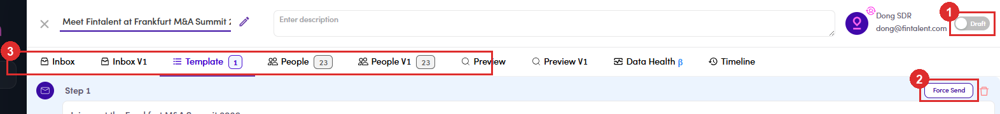
A3.1.3–4 — ① the Draft switch, top right · ② Force Send on the step · ③ the tab bar with the Template and People counts. - Check the Email Queue tab. One row per email: In Queue (waiting) → Delivered (gone, with a Sent Date) or Cancel (pulled, will not send). The count should match the reviewed contacts — if it does not, that is the number to chase, not the People count.
Full tour of the queue, its four tabs and its row actions in 7.6 ↗.
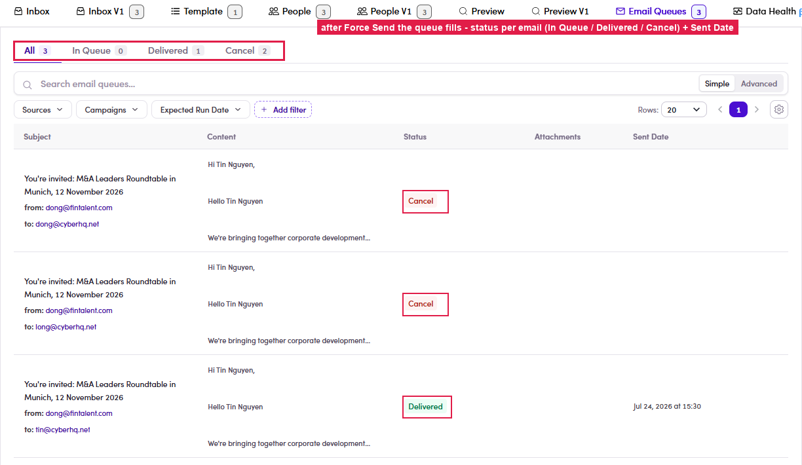
A3.1.5 — after Force Send: per-email status and Sent Date. The SDR view of this tab can show 0 / “Couldn't load” for a while — a display lag, not a failed send. - Then hand it back. Replies land in the ME's own Inbox, and the SDR works them from there (Flow 7 ↗). Your part is done once the queue looks right.
A3.2 · Run a campaign (the Enabled toggle)
- Open Campaigns → find the campaign (the SDR sets it Draft → Scheduled; you run it).
- Flip the Enabled toggle on its row — that turns the sending on; the status moves through Running → Finished (or Paused if you flip it off).
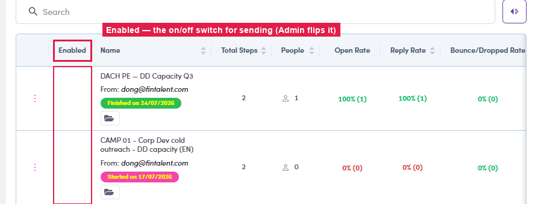
A3.2 — the Enabled toggle on the campaign list — the on/off switch for sending (Admin-only). - The campaign detail (Steps · People · Preview · Email Queues) looks the same as the SDR view — see SDR Flow 6 ↗ for every tab.
ADMINA4 · Manage a campaign (Admin/Ops — every campaign in the workspace, not just your own)
A4.1 · The list — what you see that the SDR doesn't
- Sales Management → Campaigns. The header count is the whole workspace, not your own — the SDR only ever sees campaigns assigned to them.
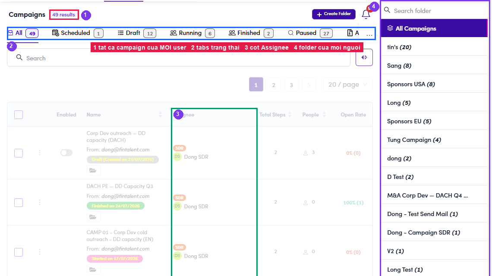
A4.1 — ① every campaign in the workspace · ② status tabs · ③ the Assignee column (Admin-only) · ④ every user's folders in the right pane. - Status tabs. All · Scheduled · Draft · Running · Finished · Paused · Archive — each with a live count. Archive only exists here; that's where A4.x.2 ↗ puts things.
- The folder pane (right). Lists all folders with their campaign counts — tin's (20), Sang (8), Sponsors USA (8)… Click one to scope the list, use Search folder to find it, + Create Folder to add one. An SDR sees only their own folders, so you are the one who can tidy across people.
- Read a row. Left to right: checkbox (bulk) · ⋮ (row menu) · Enabled toggle · name + From address + status pill + folder chip · Assignee (role badge + person) · Total Steps · People.
- Scroll right for the numbers: Open Rate · Reply Rate · Bounce/Dropped Rate · Progress · Delivered · Last run. Headers with ⇅ are sortable — sort by Bounce/Dropped Rate to find the campaign that is burning the domain.
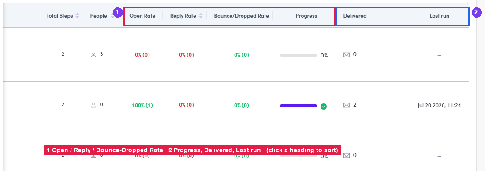
A4.1.5 — ① the three rates · ② Progress bar (✓ when finished) · Delivered · Last run. - Timeline view. The ⟨⟩ button beside the search box swaps the table for a month timeline — one bar per campaign across the days, today highlighted, ‹ › to change month. Fastest way to see what is overlapping before you turn another one on.
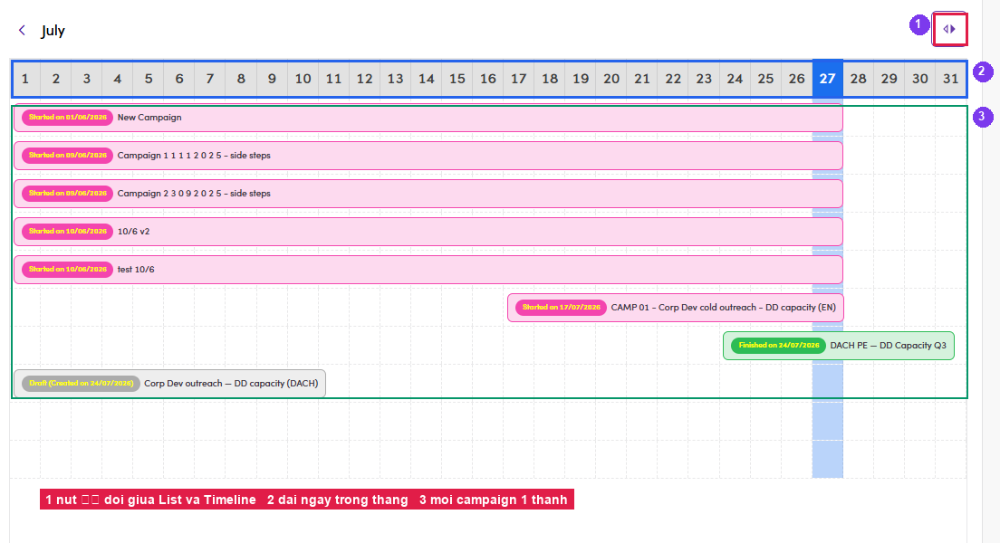
A4.1.6 — ① the ⟨⟩ toggle · ② the day strip · ③ one bar per campaign, coloured by status.
A4.2 · Row actions (⋮) — six, against the SDR's one
- Click ⋮ on any row. Edit/View Details · Delete · Archive · Move campaign · Clone campaign · Manage assignee. The SDR view of the same menu has Edit/View Details only.
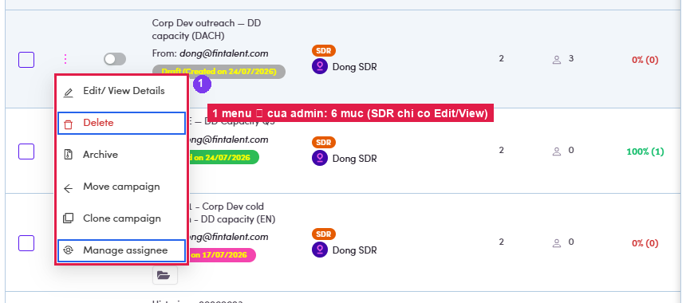
A4.2.1 — the six-item Admin row menu; Delete (top) and Manage assignee (bottom) are the two the SDR never gets. - Move campaign → Choose a Campaign Folder Target. Pick the destination folder; the dialog prints the campaign, its From, Total People, Total Steps and its current folder so you can check you grabbed the right row → Move Campaign.
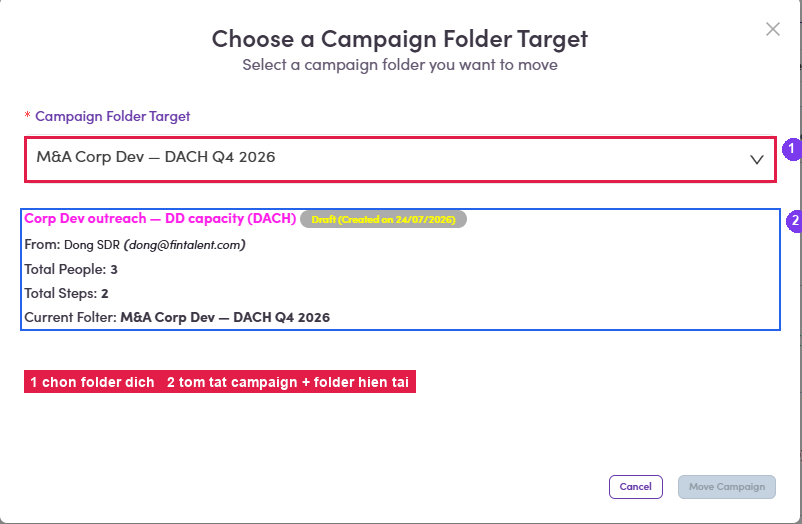
A4.2.2 — ① target folder · ② the summary that confirms which campaign you are moving. - Clone campaign → same dialog, but the folder you pick is where the copy lands. Use it to reuse a proven sequence for the next segment instead of retyping the steps.
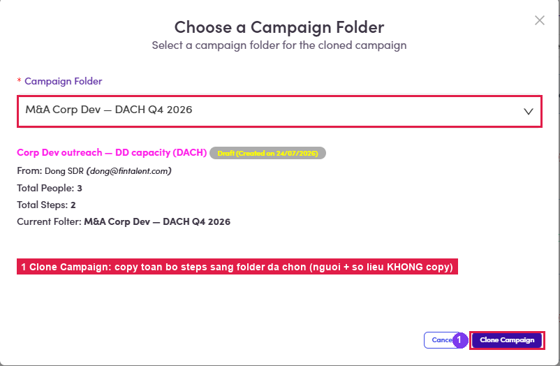
A4.2.3 — ① Clone Campaign. The clone starts as a fresh Draft — see A4.x.1 ↗ for what does not come along. - Archive takes it out of the working tabs into Archive; Delete removes it. Prefer Archive — the numbers stay reachable.
A4.3 · Reassign — one campaign or a whole batch
- ⋮ → Manage assignee opens Assign assignee: search by name/email, filter by Roles, + Add filter, and the current owner is pre-ticked. Pick the new person → Save. This is what you use when an SDR leaves or a book gets rebalanced.
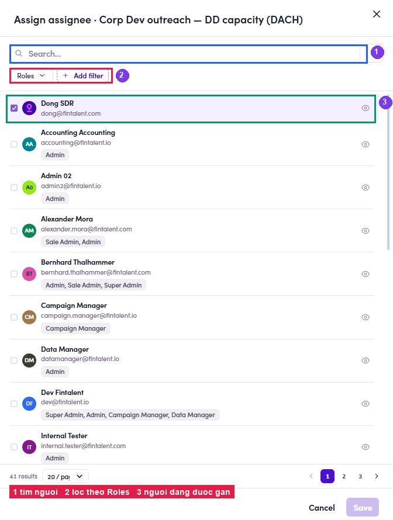
A4.3.1 — ① search · ② Roles filter · ③ the person currently assigned. - In bulk: tick several rows → the bar shows “N campaigns selected” + Assign assignee. That is the only bulk action on this page — there is no bulk delete/move, so a mis-click can't wipe a book.
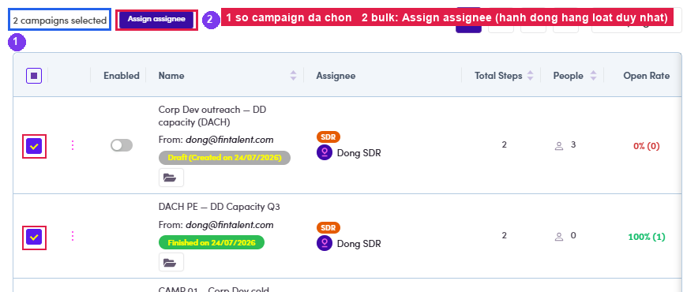
A4.3.2 — ① selection count · ② the single bulk action.
A4.4 · Inside the campaign — the Admin controls
- Open it (click the name, or ⋮ → Edit/View Details). The header carries: editable name (✎) · timezone · description · the owner with a ⚙ badge · and, once it is live, the Active switch.
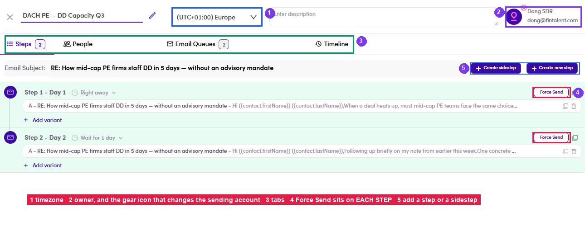
A4.4.1 — ① timezone (drives send hours) · ② owner + ⚙ sending account · ③ the tab row · ④ Force Send on each step · ⑤ Create new step / Create sidestep. - The tab row depends on state. A Draft or Finished campaign shows Steps · People · Email Queues · Data Health β · Timeline; once it is running you also get Inbox and Preview. (You may also see “V1” duplicates of these tabs — legacy screens kept around for comparison. Ignore them.)
- Force Send per step (Admin-only). Each step has its own Force Send — it pushes that step now instead of waiting for its Right away / Wait for N days timing. Use it to unblock a step that missed its window; don't use it to skip a wait you set on purpose.
- ⚙ on the owner avatar → change the sending account. It opens the list of Fintalent accounts (the current one is not in the list) — picking one switches the account the campaign sends From. The list page then shows the new From: address on the row.
- Email Queues — sub-tabs All · In Queue · Delivered · Cancel, filters Sources · Expected Run Date · Steps, and an Attachments column the SDR-side write-up doesn't cover. This is where you prove an email actually left.
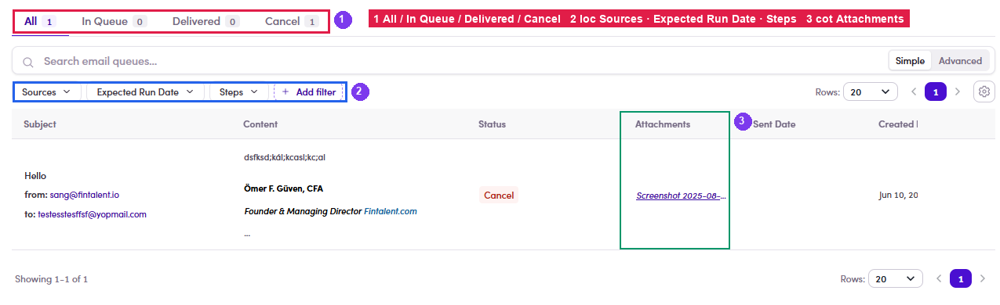
A4.4.5 — ① the four sub-tabs · ② filters · ③ Attachments.
A4.5 · Data Health β — check the audience before you spend it
- Open Data Health β. A campaign that has never been scanned says “No health snapshot yet” → Recompute live.
- Read the verdict + six cards: Total contacts · In queue · Delivered · Healthy · Critical · Cross-campaign, with the badge (HEALTHY / CRITICAL) and the snapshot timestamp.
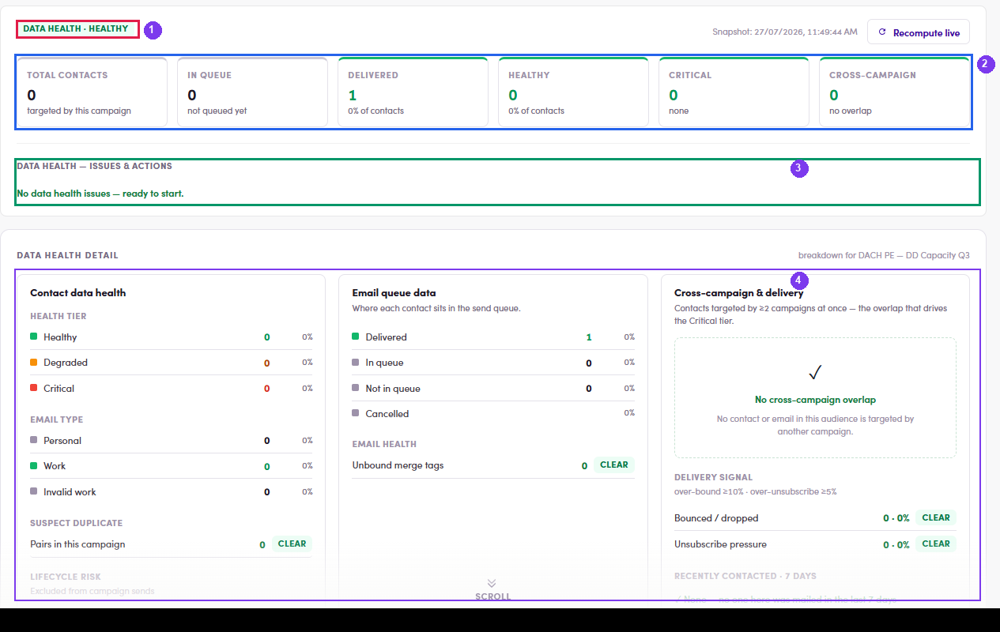
A4.5 — ① verdict · ② the six cards · ③ Issues & Actions · ④ the three detail columns. - Work the detail columns.
- Contact data health — Health tier (Healthy / Degraded / Critical) · Email type (Personal / Work / Invalid work) · Suspect duplicate pairs · Lifecycle risk (contacts excluded from sends).
- Email queue data — Delivered / In queue / Not in queue / Cancelled, plus Unbound merge tags (a
{{contact.firstName}}with nothing behind it). - Cross-campaign & delivery — contacts targeted by ≥2 campaigns at once (the thing that drives the Critical tier), the delivery signal thresholds (over-bound ≥10%, over-unsubscribe ≥5%) and recently contacted · 7 days.
Each line has a CLEAR chip when it is at zero — that is the “nothing to fix here” marker, not a button that fixes something.
- Anything under Issues & Actions comes with a Review → that jumps to the offending contacts. Clear the Critical ones before flipping Enabled.
A4.6 · Timeline — the audit trail
- The Timeline tab logs who changed what, when, with the before → after value: STATUS — → Completed, MARKED DONE — → Yes, CATEGORIZE OutOfOffice → NotInterested. Entries name the actor (by Dong SDR, by Fintalent System (Admin)).
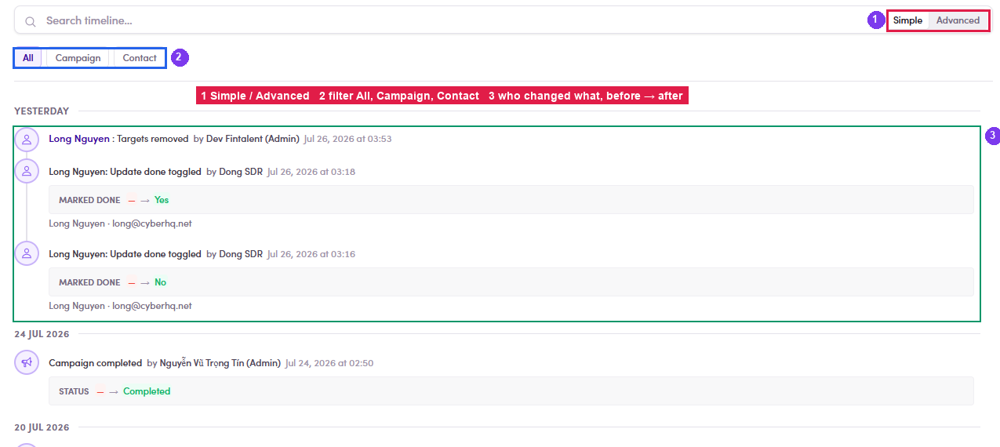
A4.6 — ① Simple / Advanced search · ② scope All / Campaign / Contact · ③ actor + before→after on every entry. - Advanced search syntax:
-wordexcludes · click a pill to toggle it ·"quotes"for an exact match · AND/OR switches how terms join. Use it to answer “who removed those targets?” in one query.
A4.x · Edge cases
- What a clone copies. The steps and their variants come along; the people and every metric do not — the clone opens as a fresh Draft with 0 people. Add the audience again (SDR Flow 6.4 ↗) before you enable it.
- Archive vs Delete. Archive moves it to the Archive tab — out of the way, still readable, still counted in history. Delete is gone. When someone asks to “clean up”, archive.
- Reassigning does not re-point the sending account. Manage assignee changes who owns the campaign; the From address still comes from the account set with the ⚙ badge (A4.4.4 ↗). Hand a campaign over → check both, or the new owner's replies land in the old inbox.
- Draft campaigns have no Enabled toggle. The switch on the row is blank until the campaign is at least Scheduled. Nothing is broken — the SDR has not finished the hand-off in Flow 6.6 ↗.
- “Cross-campaign” is the number to fear. A contact sitting in two live campaigns gets two cold emails in the same week. Data Health flags it as Critical before the send, and the Recently contacted · 7 days line catches it after. Resolve by pulling the person out of one campaign, not by ignoring the badge.
- The folder pane can be collapsed. The ‹ handle on its edge hides it and widens the table — useful when you are reading the rate columns. It re-opens with the same handle.
ADMINA5 · Manage a marketing email (Admin/Ops — every ME in the workspace)
A5.1 · The list
- Sales Management → Marketing Emails. Again the whole workspace. Tabs: All · Draft · Paused · Running · Finished — note there is no Archive and no folder pane; MEs are flat.
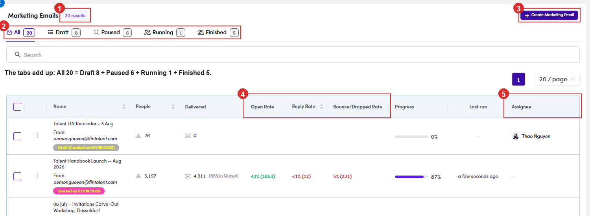
A5.1 — ① every user's MEs · ② status tabs · ③ + Create Marketing Email · ④ the rate columns. - Read a row: name + From address + status pill · People · Delivered · Open Rate · Reply Rate · Bounce/Dropped Rate · Progress (✓ when the blast finished). Then Last run and Assignee — the Assignee cell carries a role chip above the name (SDR), so you can see at a glance which rep owns which blast. There is no Enabled toggle though: unlike a campaign, an ME is switched on from inside its own header (A3.1.3 ↗).
A5.2 · Row actions — and when Delete disappears
- The ⋮ menu changes with status. It is short either way, but the difference matters:
ME status ⋮ offers Draft · Paused Edit/View Details · Delete · Manage assignee Running Edit/View Details · Manage assignee — Delete is gone So the window to delete closes the moment the ME starts sending. After that it is a record and it stays — there is no Archive to move it to either, and no Clone and no Move, unlike a campaign (A4.2 ↗).
Delete asks first — “Do you want to delete this Marketing Email”, with Exit and Delete. It is a real delete: the list count drops by one (measured: 92 → 91), not an archive.
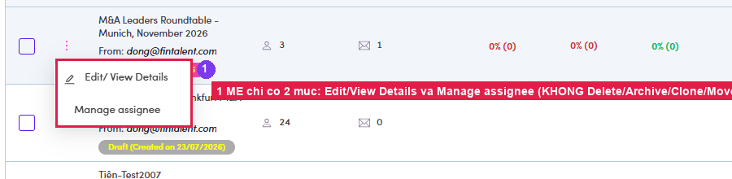
A5.2.1 — a Draft: Delete is there. On a Running ME the same menu has two items. - Bulk does one thing only. Tick rows → “N marketing email(s) selected” → Assign assignee. There is no bulk delete and no bulk status change — reassigning owners is the whole feature.
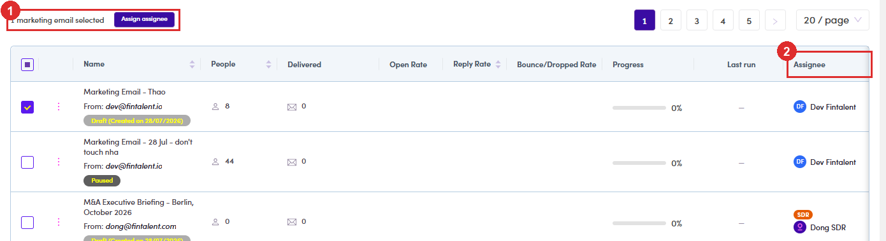
A5.2.2 — ① the selection bar with its single action · ② the Assignee column, with the role chip above each name.
A5.3 · Inside the ME
- Open it. Header: editable name · timezone · description · owner with the ⚙ badge · the Active switch. Tabs: Inbox · Template · People · Preview · Email Queues · Data Health β · Timeline. Two are conditional — Preview renders only once the ME has at least one person, Email Queues only once it is past Draft. A fresh Draft legitimately shows neither, so do not read their absence as a fault. (Any “V1” duplicates you see are legacy screens — ignore them.)
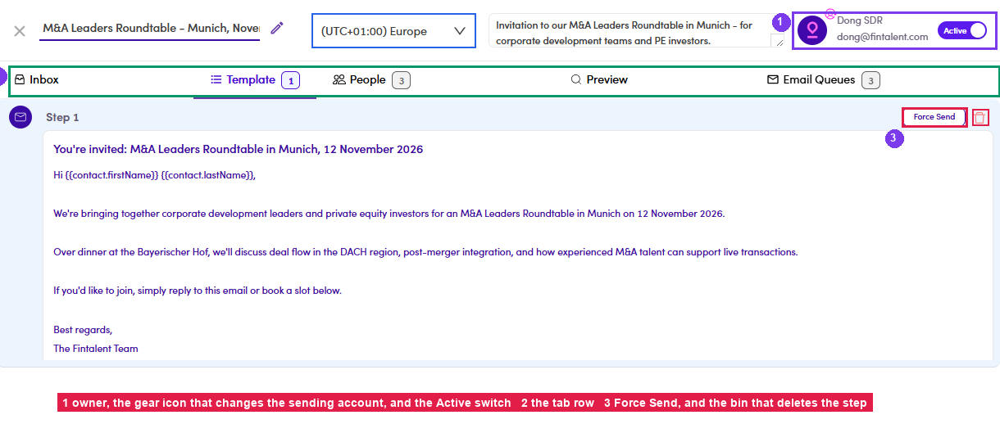
A5.3.1 — ① owner + ⚙ + the Active switch · ② the tab row · ③ Force Send and the step's delete icon. - Template holds the single step. It carries the Force Send button from A3.1.3 ↗ plus a 🗑 delete on the step — deleting it empties the ME, so only do that on a Draft.
- ⚙ on the owner avatar → change the sending account. Same control as a campaign: a list of Fintalent accounts, the current one excluded; picking one changes the account the blast sends From.
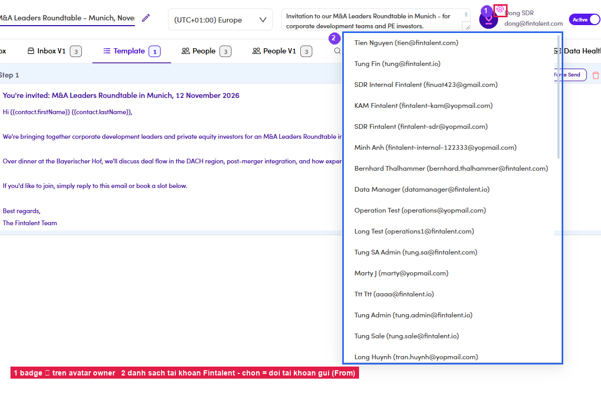
A5.3.3 — ① the ⚙ badge · ② the account list. Set this before Force Send — it decides the From address and where replies land.
A5.4 · The ME's own Inbox
- The Inbox tab is this ME's replies only, with a category rail down the left: All · Prospect · Interested · Scheduled Call · Platform Signup · In Projects · Project Completed · Not Now · Not Interested · Email Updated · Left The Company · Out Of Office · Do Not Contact · Opted Out · No Categories · Bounced / Dropped · Open · Click.
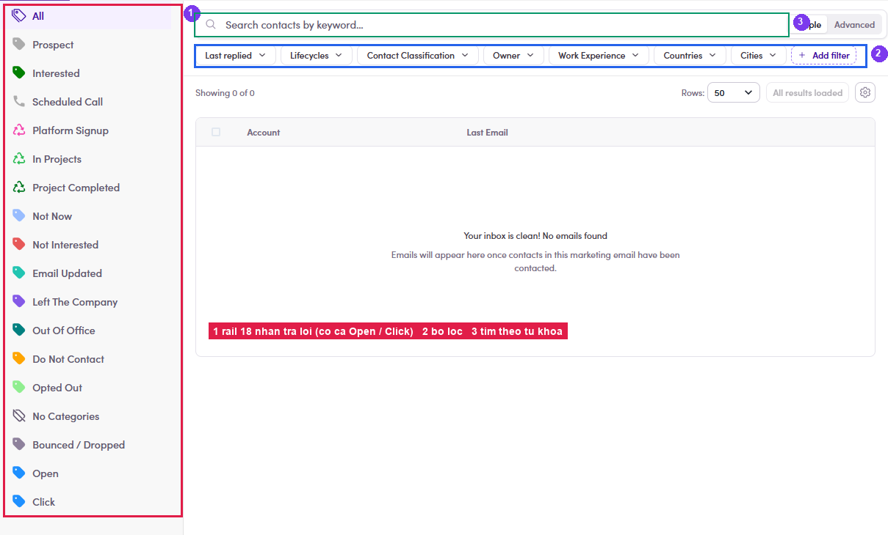
A5.4 — ① the category rail (Open and Click are engagement, not replies) · ② filters · ③ keyword search. - Bounced / Dropped and Opted Out are the two to read first after a blast — they decide whether the next ME to that segment should go out at all.
A5.5 · Data Health β — and the Config the campaign side doesn't have
- Recompute live → verdict + cards: Total contacts · Delivered · Healthy · Critical · Hard bounces · Replies · 30d.
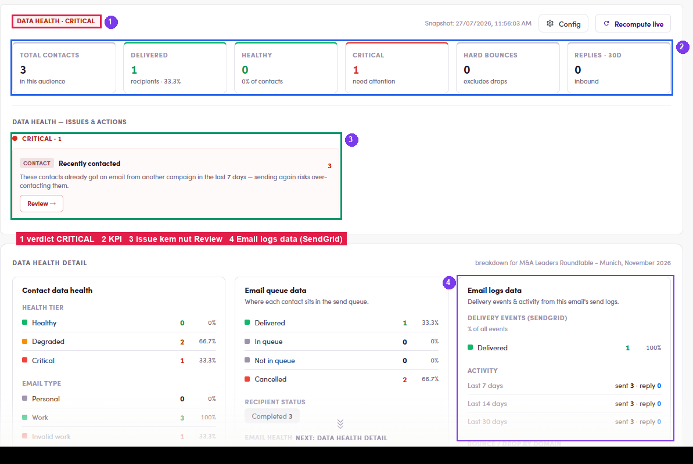
A5.5.1 — a real CRITICAL verdict: ① badge · ② cards · ③ the issue with its Review → · ④ Email logs data (SendGrid delivery events + 7/14/30-day activity). - Read the issue, not just the badge. In the example above the ME is Critical because of Recently contacted: “these contacts already got an email from another campaign in the last 7 days — sending again risks over-contacting them”, 3 of 3. Review → opens exactly those people.
- Email queue data here also shows Cancelled and a Recipient status line (Completed 3) — the difference between “we tried to send 3” and “1 actually got delivered”.
- Config (top-right, ME-only). “Tune what the next scan flags for this marketing email” → Cross-check duplicates: tick the other MEs whose audiences should be treated as overlap → Save. Use it when you run a series to the same segment and want the scan to catch the repeat.
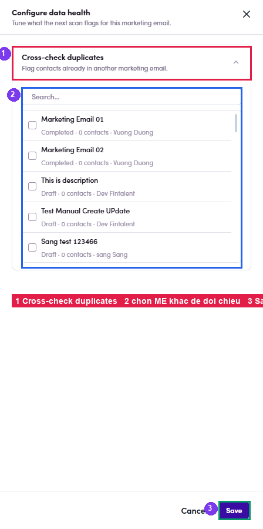
A5.5.4 — ① Cross-check duplicates · ② pick the other MEs · ③ Save.
A5.x · Edge cases
- Delete exists, but it disappears the moment the ME starts. The row ⋮ is short and changes with status:
ME status Row menu Draft Edit/View Details · Delete · Manage assignee Paused Edit/View Details · Delete · Manage assignee Running (“Started on…”) Edit/View Details · Manage assignee — no Delete So the window for deleting is before it has ever run, or while it is paused. Once a ME has started it stays in the list for good — there is no archive to move it to either.
Two statuses exist in the data that you never seeArchived and Scheduled are valid marketing-email statuses in the API and both appear in the status filter, but the list has no tab for either and no row action produces one. On UAT the five tabs account for every record (57 + 11 + 19 + 4 = 91). Treat them as not implemented rather than as something you can reach.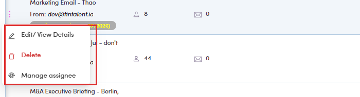
A5.x.1 — a Draft ME: Delete is there. 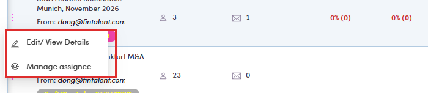
A5.x.1 — the same menu on a Running ME: Delete is gone. - Force Send only reaches reviewed contacts. Same rule as A3.1.3 ↗: people the SDR never marked Content Reviewed stay behind. A queue smaller than the People count usually means review, not a bug — check People before you chase it.
- Cancelled ≠ failed. In the example the queue reads Delivered 1 · Cancelled 2 of 3 people. Cancelled rows were pulled before sending (unreviewed, suppressed, or lifecycle-excluded) — they never hit the provider, so they don't count against the domain.
- Change the sending account before, never during. Switching the ⚙ account on a Running ME splits the thread: what already went out keeps the old From, replies to it land in the old inbox. Pause → switch → resume.
- The Timeline tab works exactly as the campaign one — same actor + before→after format, same Simple / Advanced search. See A4.6 ↗ rather than repeating it here.
ADMINA6 · Talent Active / Passive classification (filter → review → update status)
A6.0 · The rules in full
The question the rule answers
Every talent record is either supply or demand. Someone who sits on the buy side today — they hold a role at a PE fund, or they run a company a fund owns — is a potential client, and Fintalent must never invite them into a project as a freelancer. They go Passive. Everybody else is talent and goes Active.
Passive is not a punishment and not a quality judgement. It is a routing decision: Passive records are excluded from project invitations, nothing more. Being wrong in either direction costs money — a wrongly-Passive freelancer is supply you cannot sell, a wrongly-Active fund Partner is an invitation landing in a client's inbox.
Rule 1 — the evidence, in strict order
Always work the four sources in this order and stop at the first one that answers. Later sources never overturn earlier ones. Employment Status sits at the top, not the bottom — it is a gate, not a tie-breaker.
| # | Source | Why it sits here |
|---|---|---|
| 1 | Employment Status | The closing gate. Full-time or Part-time means someone else already pays for their week, so they cannot take a project — Passive, and nothing in the title reopens it. Decides 22% of the 276 production records. |
| 2 | The job title — the headline the talent wrote about themselves | Only reached once the gate is passed. It is what the talent says they do now, in their own words. Decides 78% of records. |
| 3 | Work experience — description of the company named in the title | Only when the title is genuinely ambiguous. Read the company that appears in the title, not every job on the profile. |
| 4 | One override — a status an admin set by hand | Beats all three above. It is the only bypass. |
Rule 2 — read the role part only
Split the title at the first at / @ / chez / bei / en. Everything before the split is the role; everything after is the employer. Only the role part is matched, for both the include and the exclude lists.
| Title | Role part matched | Why it matters |
|---|---|---|
| Manager at Fide Partners | Manager | Whole-string matching would score "Partners" from the fund name and wrongly make this a group B hit. |
| Managing Director and Founder at DZ Consulting | Managing Director and Founder | The advisory keyword sits in the company name, so it does not rescue them. This is a group B match → Passive. |
| Independent Consultant at Various | Independent Consultant | Here the advisory keyword is in the role → Active. |
Rule 3 — exclusions are a hard stop, and they run first
If the role part contains an exclusion term, the verdict is Active and the rule ends there. It does not fall through to the group tables. It is a hard stop within the title, so it never overturns the gate that already ran ahead of it.
Two buckets, one reason each: too junior to hold a budget, and back office — never a buyer.
But the gate still comes first. An Investment Banking Senior Analyst is not a client — and if they are Full-time, they are still Passive, because they are not available either. The exclusion list settles are they a buyer; the gate settles can they take work at all. Both must pass before someone is Active.
Match on word boundaries. Plain substring matching turns "M&A International Manager" into an intern and "Head of International Capital Partnerships" into a trainee.
Rule 4 — selling advice beats matching a group
An M&A advisory practice is exactly the supply Fintalent sells. When the role part contains consultant, consulting, consultancy, advisory, advisor or adviser, the verdict is Active even when the same title also matches a group. A "Principal Consultant" is a consultant, not a fund Principal; a "Private Equity Consultant" advises funds, they do not run one.
Rule 5 — buy-side vocabulary counts as a title match
This is the part that grew the most during manual review. Inside a list already narrowed to PE/VC backgrounds, a talent who describes themselves with investing or deal vocabulary is claiming the buy side, even without a formal job title. All of these were ruled Passive by hand:
| Title as written | Keyword that fires |
|---|---|
| Investor | Investor |
| Private Equity chez IK Investment Partners | Private Equity |
| Wharton MBA, technology, private equity | Private Equity |
| || Venture Capital || Product || Strategy | Venture Capital |
| Venture Investing & M&A | Investing |
| M&A / Investments / Buy&build | Investments |
| Strategic partnerships, JV, Business Development, M&A | M&A |
| Entrepreneur · Founder at InstaVal | Entrepreneur · Founder |
| Corporate Development & Strategy at Booz Allen Hamilton | Corporate Development |
| M&A International Manager at Swile | M&A |
This net is deliberately wide, and it is only safe inside the PE/VC-filtered list. Applied to the whole talent base it would sweep up every banker and every corporate finance manager. Never run this keyword set without the Company Background chip in place.
Rule 6 — Employment Status is the closing gate, and it runs first
Full-time Employee and Part-time Employee both mean Passive, full stop. Somebody else already pays for their week, so they are not available for a Fintalent project — whatever their title says. Freelancer, Unemployed, Other and blank all pass the gate and go on to the title.
| Employment Status | Gate |
|---|---|
| Full-time Employee · Part-time Employee | Passive — stop here, do not read the title |
| Independent Consultant / Freelancer · Unemployed · Other · blank | pass — go on to the title |
Do not confuse this gate with the automatic rule at approval. They are different mechanisms that happen to agree most of the time. The gate above is the business rule you apply. The automatic rule — A6.x.1 ↗ — fires on Skip Review + an ongoing role at a flagged company and does not read Employment Status at all; the one-line verdict printed on the profile does read it, but that line is only a display. Treating Full/Part-time as Passive is settled business policy, not something the system currently enforces on its own.
Rule 7 — one override, and only one
A status an admin set by hand stays put. Open Activity Logs before overturning anything: an entry with a named admin is a decision, and a decision outranks the rule. An entry with no actor, or no entry at all, is a default — the rule applies.
The rule as one flowchart
| # | Test, in order | If it fires |
|---|---|---|
| 0 | An admin set the status by hand (Activity Logs) | stop — leave as is |
| 1 | Employment Status is Full-time or Part-time | Passive, stop |
| 2 | Role part contains an exclusion term | Active, stop |
| 3 | Role part contains an advisory term | Active, stop |
| 4 | Role part matches group A, B or C | Passive, stop |
| 5 | Title ambiguous → company named in the title is an advisory firm | Active, stop |
| 6 | Nothing matched | Active |
What the rule says about production today
Run over the 276 PE/VC-labelled records that currently sit at Active or Passive:
| Outcome | Count | Meaning |
|---|---|---|
| Status already correct | 178 | — |
| Active, should be Passive | 60 | clients who can still receive project invitations — fix in A6.5 ↗ |
| Passive, should be Active | 33 | talent shut out of every invitation — fix in A6.4 ↗ |
| Exempt under rule 7 | 5 | a named admin set the status by hand |
The rule was validated against the 23 records classified by hand on 27 Jul plus the gate ruling of 28 Jul, and reproduces all of them. That is the evidence it rests on — it is not proof it is right on the other 253, which is why every change still goes through a human read in A6.4 / A6.5.
A6.1 · Three fields people mix up
- Status — the talent lifecycle field, 9 possible values:
Guest,Incomplete,PaymentRequired,InReview,Rejected,Active,Passive,ReviewPassive,Temp. The status chip on a talent profile only lets you switch between Active and Passive; every other value is set by the system or by the review actions in A6.x ↗. The chip is read-only unless the current status is already Active or Passive. - Employment Status — a different field, shown as a line of text on the profile: Full-time Employee, Part-time Employee, Independent Consultant / Freelancer, Unemployed, Other. This is what the legacy automatic rule reads. It is not the same as Status, and it is not evidence of who someone works for.
- Company Background — the filter chip formerly labelled Classification. It describes the type of company a talent has worked at across their whole career, inferred by AI from each employer, with a year count attached. It does not say where they work today. Someone who spent one year at a PE fund a decade ago still carries the Private Equity / Venture Capital label. Treat it as a way to narrow the haystack, never as the answer.
A6.2 · Build your working list
- Open User Management → Talents. Note the four controls you will use:
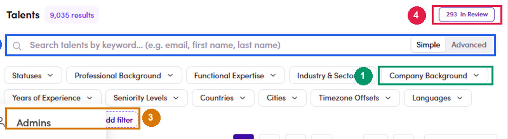
A6.2.1 — ① Company Background chip — the first cluster · ② keyword search box with a Simple / Advanced toggle · ③ Add filter — pins filters that are not on the bar by default · ④ N In Review — the review queue, see A6.x.1 ↗. - First cluster — Company Background = PE / VC. Open the chip and tick all six boxes in the Private Equity / Venture Capital branch:
Box to tick People (production) Private Equity / Venture Capital (the parent) 262 Mega-Cap PE 16 Upper Mid-Market PE 29 Mid-Market PE 234 Venture Capital 0 Growth Equity 4 PE-Backed / Portfolio Company (under Corporate / Industry) 0 Combined 276 Tick the parent AND all five children. The parent alone returns 262, the five leaves alone return 276 — 14 people carry only a leaf label and no parent label. Miss either side and you lose them.
Also tick PE-Backed / Portfolio Company, in the Corporate / Industry branch. It is the box that ought to deliver group C, so it belongs in the routine — but it currently returns nobody, so the total stays at 276. Reach group C through the Work Experience filter instead: A6.x.6 ↗.
- Split it into two working lists by adding the Statuses chip. Each list is fixed in one direction, which is what keeps the work simple:
Set Statuses to You are looking for Worked in Passivepeople wrongly shut out of project invitations A6.4 ↗ Activeclients still sitting in the talent pool A6.5 ↗ Do one list at a time. Mix them and you lose track of which way a change was going.
- Narrow further with the keyword search box. Switch it to Advanced and the syntax hints appear right under it:
Type Effect partnermatches anywhere in the profile text "operating partner"quotes force a whole-word / exact-phrase match -consultanta leading minus excludes the term -"business development"excludes an exact phrase click a pill flips it between include and exclude drag a pill onto another groups them; the AND / OR control switches how the group joins Useful passes:
-consultant -advisory -advisorstrips out service providers;"operating partner" "managing partner" principalsurfaces the buy-side titles. - Optional second angle — the Work Experience filter. Company Background looks at career history; the Work Experience filter looks at who someone works for right now. Pin it via Add filter → type
work→ tick Work Experience.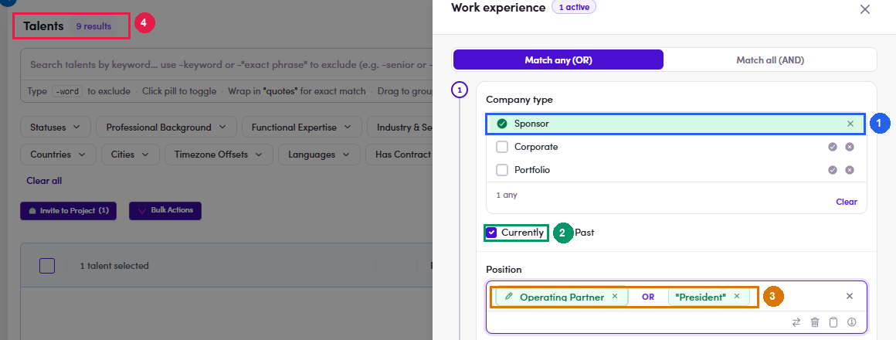
A6.2.5 — ① Company type: Sponsor / Corporate / Portfolio · ② tick Currently so past roles drop out · ③ Position — each Enter creates a pill; click a pill to invert it; "quotes"= whole word · ④ live result count.Everything inside one numbered block must match on the same work-experience row. Add another experience creates a second block, meaning a second row — not an extra condition on the first one.
On production this filter returns 62 people currently at a sponsor and 156 currently at a portfolio company. Only 16 of those 62 also carry the PE/VC background label, so the two filters find genuinely different people — run both.
- Freeze the list before you start reviewing. Two ways, use both:
- Copy the URL. Every filter is encoded in the address bar, so the link reproduces the exact list later.
- Select all → Bulk Actions → Add to list. This gives a stable worklist you can split across people. Bulk Actions cannot change status — it only offers Export PDF, Add to list, Remove from list, Export CSV, Set Skip Review, Set Require Review.
A6.3 · How to decide: Active or Passive
- Step 1 — the gate: what is their Employment Status? This runs before you read the title, and it is the end of the line for two of the five values.
Employment Status What to do Full-time Employee · Part-time Employee Passive. Stop — do not read the title. Someone else already pays for their week, so they cannot take a project whatever their headline says. Independent Consultant / Freelancer · Unemployed · Other · blank Gate passed → go to step 2. Full-time and Active on the same record is broken by definition — the two fields contradict each other, and you do not need the title to know it. Sweep for these first: filter Statuses = Active and read the Employment Status column. On production there are exactly two, Mehdi Benjelloun and Sahib Maker.
The system does not enforce this gate for you. The automatic rule at approval — A6.x.1 ↗ — fires on a different condition entirely and never reads Employment Status. So a Full-time employee can and does end up Active without anyone noticing; step 1 is how you catch them.
- Step 2 — does the job title match group A, B or C? Match against the role part of the title only, i.e. the text before
at/@/chez. Fund names very often contain the word Partners, and matching the whole string turns "Manager at Fide Partners" into a false hit.Group Company Representative titles A PE fund (sponsor) Value creation & talent side. Operating Partner · Operating Principal · Operating Director · Operating Executive · Head of Portfolio Operations · Portfolio Operations · Portfolio Director · Value Creation · Head of Operational Excellence · Head of Transformation · Talent Partner · Head of Talent · Director of Talent · Chief Talent Officer · Head of People · Human Capital · Head of Executive Talent B Deal side — formal titles. Deal Partner · Partner · Managing Partner · Senior Partner · General Partner · Founding Partner · Investment Partner · Co-Head · Managing Director · Principal · Investment Director · Investment Manager · Investment Principal · Investment Professional · Deal Lead · Vice President · VP · Director
Deal side — vocabulary, no formal title needed (added from manual review, see A6.0 rule 5 ↗). Investor · Investing · Investments · Private Equity · Venture Capital · M&A · Mergers · Buy&buildC PE-backed portfolio company Board & C-suite. Chair · Chairman · Executive Chairman · Non-Executive Director · Senior Independent Director · CEO · Chief Executive · President · Geschäftsführer · Directeur Général · CFO · Finance Director · Group CFO · Interim CFO · Head of Finance · VP Finance
Deal & corp-dev function, any seniority (added from manual review). Head of M&A · M&A Director · M&A Manager · Corporate Development · Corporate Dev · VP Corporate Development · Head of Strategy & M&A · Head of Transactions · Founder · Co-founder · EntrepreneurWithin this step the exclusions run first, and they are a hard stop. If the role part contains any of these, the verdict is Active and you stop — you do not go on to the group tables. Note this only ever applies to someone who already passed the gate in step 1: a Full-time Analyst was settled as Passive before you got here.
Bucket Terms Too junior to hold a budget Associate·Analyst·Junior·Intern·Internship·Trainee·Apprentice·Werkstudent·Working Student·Student·MBA Candidate·Teaching AssistantBack office — never a buyer Investor Relations·Fundraising·Fund Finance·Capital Formation·Fund Accountant·Fund Controller·TaxationLooks like a group hit but is not Business Partner— a "Finance Business Partner" is an internal finance role, not a fund PartnerMatch on word boundaries. Plain substring matching turns "M&A International Manager" into an intern and "Head of International Capital Partnerships" into a trainee — both were real false hits during the production run.
- Step 3 — does the title say they sell advice? If the role part contains
consultant,consulting,consultancy,advisory,advisororadviser, they run an M&A advisory practice. That makes them talent → Active, even when the same title also matches a group. A "Principal Consultant" is a consultant, not a fund Principal.Role part only — the keyword must be in the job, not in the employer's name. "Managing Director and Founder at DZ Consulting" is a group B match and stays Passive; the word sits in the company name. Conversely the absence of an advisory word is equally decisive: "Founding Partner at Scandola | Buy-side M&A" has none, so the group B match stands. See A6.0 rules 2 and 4 ↗.
- Step 4 — the title is not conclusive, so open work experience. Find the company named in the title and read its description (industry, main activities):
What the description says Verdict "consulting firm", "advisory", "self-employed", "350+ consultants" Active — service provider "private equity sponsor", "investment firm", "alternative asset manager", "LBO" Passive — buy side no description at all the title stands → Passive if it matched in step 2 - Shortcut — the profile often tells you outright. Under the Employment Status line the system prints its own one-line verdict, and it is the same signal the automatic rule uses:
Line on the profile What produced it “This talent is a full-time employee” Employment Status = Full-time Employee “This talent is a freelancer and currently working at a sponsor / portfolio / corporate company” Employment Status = Freelancer and an ongoing role at a company carrying that flag. Priority when several apply: sponsor → portfolio → corporate. nothing printed neither condition holds — the automatic rule leaves them Active A sponsor or portfolio verdict is the strongest single hint that you are looking at a client. A corporate verdict is group D — deliberately out of scope, so it is not a reason to set Passive.
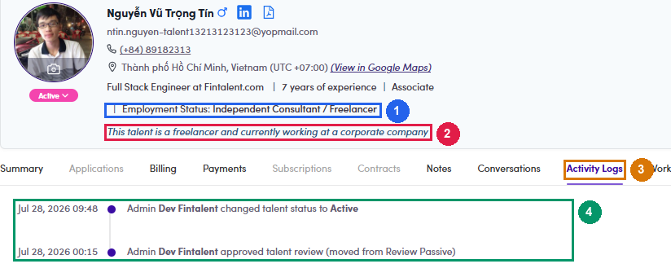
A6.3.5 — ① Employment Status · ② the system's own verdict line, printed right below it · ③ the Activity Logs tab · ④ every status change with who made it and when. - The one override that beats everything above. A status an admin set by hand stays put. Open the Activity Logs tab before overturning anything: an entry naming an admin is a decision and outranks the rule; an entry with no actor, or no entry at all, is a default and the rule applies.
A completed contract is not an override. A full-time employee who delivered a project last year is still unavailable today. Read contract history as context, never as a reason to skip the gate.
A6.4 · People who are Passive but should be Active
- Filter: Company Background = the six PE/VC boxes, Statuses = Passive. Add
-consultant -advisory -advisorin the search box only if you want to see the harder cases first — leaving it off shows the obvious wins. - Read each row against A6.3 ↗. The frequent patterns that mean "should be Active":
- They were never classified by a human at all. This is the single biggest source of this queue. Open Activity Logs: a lone entry saying the status changed, with no reason attached, means the automatic rule at approval ↗ did it — purely because they held a current job at a flagged company, including a plain corporate one, which is group D and out of scope. Nothing about the buy side was ever checked.
- Title openly says consultant / advisory / freelance — e.g. "Private Equity Consultant", "Independent Consultant at Various", "Freelance in Transaction Services".
- Title carries an excluded word — Associate, Analyst, Intern — and they passed the gate, i.e. Employment Status is not Full/Part-time. A Full-time Analyst is correctly Passive and does not belong in this queue.
- No current role at all, and Employment Status is not Full/Part-time — students, people between jobs, MBA candidates.
- Current employer is a plain corporate (group D) — deliberately out of scope.
- Open the talent, confirm, then switch the chip to Active. Same route as the other queue — User Management → Talents, click the name to open the profile drawer, then click the status chip under the avatar. On a Passive talent the dropdown offers the single option Active; the full click path is spelled out in A6.5.5 ↗.
This direction asks for no reason. Picking Active opens a short confirmation and that is all — which is the asymmetry worth knowing: going Passive is always explained, going Active never is. If the reason matters, write it in the Notes tab before you flip the chip.
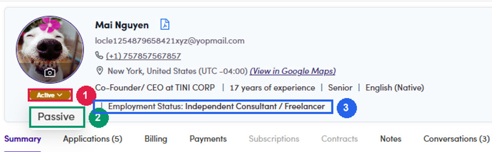
A6.4.3 — ① current status chip, click to open · ② the only alternative offered — the chip switches between Active and Passive and nothing else · ③ Employment Status printed on the header line, this is the gate read in step 1 ↗. 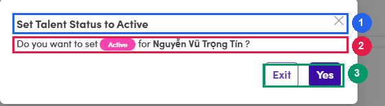
A6.4.3 — ① the dialog names the talent · ② the target status · ③ Exit cancels, Yes commits. Note there is no reason field on this direction — only the Passive direction asks for one. Hovering the chip on a Passive talent shows Passive since <date> plus the reason that was recorded — read it before you overturn the decision.
- Work through the list, not the page. Changing a status re-runs the filter, so rows shift under you. This is why A6.2.6 ↗ tells you to freeze the list first.
A6.5 · People who are Active but should be Passive
- Filter: Company Background = the six PE/VC boxes, Statuses = Active.
- Sweep the gate conflicts first — they need no judgement. With the filter above, read the Employment Status column and pull out every row saying Full-time Employee or Part-time Employee. Full-time and Active on the same record contradict each other, so every one of them is wrong without reading the title. Set them Passive, reason: "Employment Status is Full-time — not available for projects."
On production this yields exactly two: Mehdi Benjelloun (Investment Banking Senior Analyst) and Sahib Maker (Vice President at Apis Partners). Sahib has one completed contract — that is context, not an exemption; see A6.0 rule 7 ↗.
- Scan the remaining titles for buy-side vocabulary from A6.3.2 ↗. Strong signals: Managing Partner at … Capital, Vice President at … Partners, Private Equity Investment Manager, Operating Partner, Venture Partner.
- Open work experience and confirm the employer is a fund. The description settles it — "Founded an independent private equity sponsor pursuing leveraged buyout transactions" is conclusive; "Management/Strategy Consulting" is the opposite.
Watch for a second concurrent role. Several people describe themselves as an advisor in the title while still holding a fund seat — the fund seat wins.
- Open the talent, then open the status chip. Four clicks, and the last one is the one people miss:
- User Management → Talents in the left sidebar — the route is
/talents. - Click the talent's name in the row. The profile opens as a full-screen drawer over the list and the URL gains
?id=<talentId>, so this view can be bookmarked and shared. - Click the coloured status chip under the avatar — Active ⌄. It is a dropdown, not a label. Do not confuse it with the Click to update tooltip on the avatar itself, which changes the photo.
- The dropdown offers exactly one option, the opposite value. On an Active talent that is Passive. Click it.
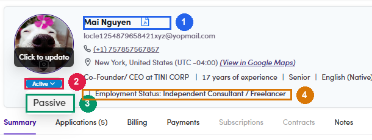
A6.5.5 — ① talent name, clicked from the list to get here · ② the status chip, click to open · ③ the single option offered — the chip only ever switches between Active and Passive · ④ Employment Status on the header line, the gate from A6.3.1 ↗. The chip is read-only unless the current status is already Active or Passive. In Review, ReviewPassive, Guest and the rest are set by the review buttons instead — A6.x ↗.
- User Management → Talents in the left sidebar — the route is
- Give the reason — this direction will not commit without one. Picking Passive does not apply anything yet; it opens Set Talent Status to Passive, and the dialog is where the change actually happens.
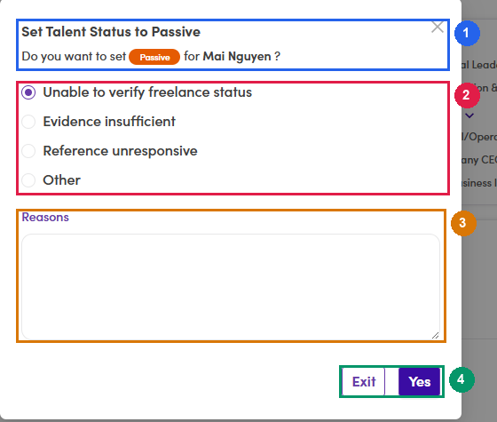
A6.5.6 — ① confirmation line naming the talent · ② four preset reasons, one must be selected · ③ Reasons free-text box — fill this in, it is the only place the real explanation survives · ④ Exit cancels, Yes commits. Field Required What to put in it Preset reason (radio) yes — one is preselected None of the four says "is a client", so none of them fits this flow. Pick the closest, usually Other. Reasons (free text) technically optional Always fill it in. This is the only place the real explanation survives — e.g. "Managing Partner at Contour Point Capital, an independent PE sponsor — group B." or "Employment Status is Full-time — not available for projects." The four presets are Unable to verify freelance status, Evidence insufficient, Reference unresponsive, Other. Then Yes commits — Exit closes the dialog and leaves the status untouched, so you can open this screen safely just to look at it.
Where the reason ends up: not on the talent record. It goes into the activity log and surfaces as the chip's hover tooltip — see A6.x.7 ↗. That is why a blank free-text box means the next reviewer has nothing to go on.
- Verify. Reload the profile: the chip reads Passive, and hovering it shows Passive since <today> with the reason you typed. The talent also disappears from the Active queue.
A6.x · Edge cases
- The In Review queue — new sign-ups waiting for approval. The N In Review button at the top right of the talents list opens the queue one profile at a time.
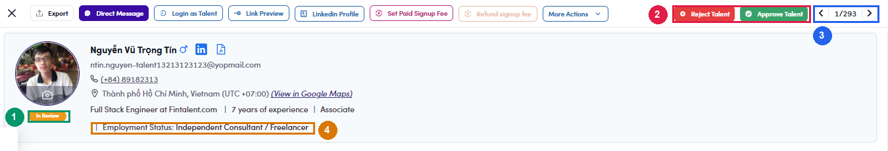
A6.x.1 — ① status chip reads In Review and is not editable · ② Reject Talent → status becomes Rejected; Approve Talent → confirmation dialog, then the talent enters the normal pool · ③ pager — step through the whole queue without going back to the list · ④ Employment Status, visible on the header. Approving does not simply mean “Active”. The confirmation dialog repeats the name, email and title; on Approve the system then applies an automatic rule and picks the resulting status itself:
Condition at the moment of approval Resulting status internal status = Skip Review and an ongoing role at a company flagged sponsor / portfolio / corporate Passive — passiveDatestamped, no reason recordedanything else Active Verified on six approvals: Skip Review + ongoing role at a flagged company produced Passive twice; the same talent with the flag missing, with no ongoing role at all, or without Skip Review produced Active four times. The trigger is the flag on the linked company — an ongoing role at a company that was never matched to the Mergermarket list does not fire it.
This is where most wrongly-Passive talents come fromFreelancers get set Passive at approval time purely because they hold a current job, whatever that job is — a corporate role counts, and group D is supposed to be out of scope. Nobody clicked anything, and because the rule writes no reason, the profile gives no explanation afterwards. If you are auditing Passive talents, start here.Ruled 28 Jul 2026: this is intended behaviour, not a defect — but it is narrower than the business rule. The system deciding a status at approval is by design. Two gaps remain, and both are for a human to close: it fires on a plain corporate flag, which is group D and out of scope; and it never reads Employment Status, so it cannot enforce the gate in A6.3.1 ↗. Neither gap is logged as a bug — they are the reason A6.4 and A6.5 exist.
Two things worth knowing about the queue itself:
- After each decision the drawer advances to the next profile and the counter drops, so the whole queue can be worked without returning to the list.
- The queue drawer does not put the talent id in the URL, so a profile being reviewed cannot be linked to. Opening the same person from the list does add
?id=…— and the Approve / Reject buttons are there too, so use that route when you need to share or come back.
The chip is locked while the status is In Review, so a client has to be approved first and set Passive afterwards per A6.5 ↗.
- ReviewPassive — a Passive talent resubmitted their profile. The profile shows a Talent Resubmit since <date> panel next to the original Passive reason, and the toolbar offers three buttons instead of two:
Button Resulting status When to use it Approve Review Passive (green) Active the new evidence answers the original reason Reject Review Passive (red) Passive nothing material changed — back to where they were Reject Talent (red) Rejected they do not belong on the platform at all The Summary tab opens with a Talent Resubmit since panel carrying what the talent supplied to support the request: Reference Email, Reference Linkedin and Additional Context of Request. Those three fields are the evidence you are judging — an empty panel means they asked for reactivation without supplying anything.
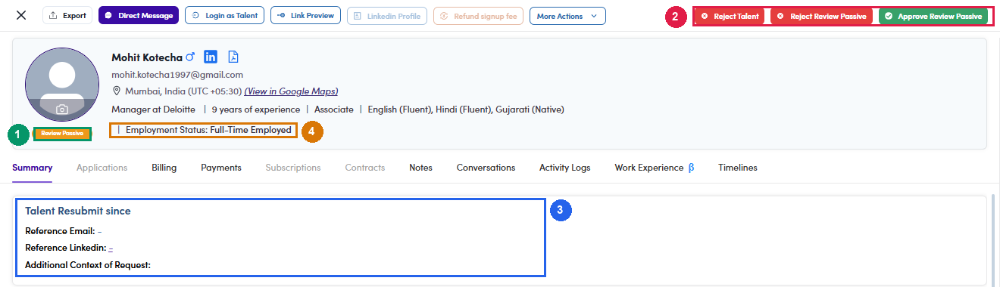
A6.x.2 — ① the chip reads Review Passive and is not editable · ② the three decision buttons · ③ the Talent Resubmit since panel with the supporting fields · ④ Employment Status, still worth reading. Always read the original Passive reason first — it is shown on the same screen. Approving without checking whether the resubmission actually addresses it defeats the point of the queue.
- You cannot change status for several people at once — but two bulk actions still affect the result. Bulk Actions offers Export PDF Talents, Add to list, Remove from list, Export Talents (CSV), Set Skip Review, Set Require Review — and nothing else. Every status change is one profile at a time; for a long list, Add to list first and split it between people.
Set Skip Review is not cosmetic. It flips the talent's internal status to Skip Review, which is one half of the automatic rule in A6.x.1 ↗. Applying it to someone still In Review changes what Approve will do to them. Set Require Review is the opposite action.
- The headline says one thing, the job history says another. Common and important. Seen in production: a title reading "Freelance, former Private Equity Professional" on a profile whose work experience still shows an ongoing role at a PE fund. The title claims they left; the data says they did not. Open the row and check the end date before deciding.
- Most current employers are not linked, so company flags are missing. Roughly 63% of talents have a current role whose employer was never matched to the Mergermarket company list — no Sponsor / Portfolio / Corporate flag to read. For those people the title and the free-text company description are the only evidence. This is also why the Work Experience filter cannot replace the title check: every one of the strongest buy-side hits found on production sat at an unflagged company.
- No filter finds bosses of companies a fund owns. These are the people in group C — the CEO or CFO of a business a PE fund has bought. The box that ought to find them, Corporate / Industry → PE-Backed / Portfolio Company, is attached to nobody at all: zero people on production and on UAT. Reach them a different way — the Work Experience filter with company type = Portfolio and Currently, which returns 156 people.
- Where the Passive reason is saved — and why the profile looks empty. The reason you type is written to the activity log, not to a field on the talent record — the record's own
passiveReasonfield stays empty. It surfaces in the tooltip on the status chip and in the Passive since panel.The Activity Logs tab is the audit trail. Each entry reads “Admin <name> changed talent status to <status>” with a timestamp. Two limits to know:
- A status set by the automatic rule at approval carries no reason — the entry only says the status changed.
- The entry for an approval reads “approved talent review (moved from Review Passive)” even when the talent was in In Review, not Review Passive. The wording is fixed, so do not read the previous status from it.
- A company can be tagged with the wrong type. The tags come from an outside data source, so they are not always right. Production has investment banks flagged as sponsor, and at least one talent linked to an entirely different company than the one named in their title. When a familiar name produces a surprising result, check the company record before concluding the talent is misclassified.
- Going Passive does not stop any work already under way. Passive only removes someone from the project-invitation flow. Running contracts, timesheets and invoices are unaffected — see B3 ↗.
- Sending a talent back to In Review. More Actions → Switch to In Review opens a drawer listing the talent's applications, with the rule stated at the top: “Can't switch if application status is Connected / In Interview / Draft Agreement / Hired”. Confirm with Switch and the status returns to In Review, which brings the Approve / Reject buttons back. The internal status is left untouched.
The rest of that menu: Delete · Delete Permanently · Parse CV · Upload CV · Update gender · Skip Project Invites · Hero from website · Hidden from website.
ADMINB1 · Invite talents to a project
- Project Management → Invite Talents. The page asks you to select the project first — the dropdown lists each project as a card: title, client & contact, #PR id, seniority / experience / rate type / duration / timezone / languages, and its running score — “X invited · Y applied”.
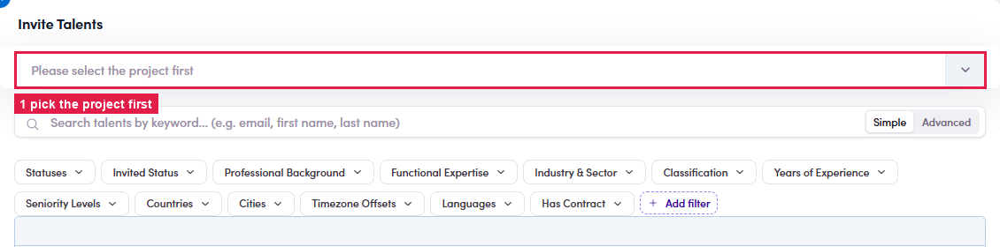
B1.1 — pick the project; each option shows client, #PR id and invited / applied counts. - Filter the pool. The full talent pool loads (9,000+). Cut it down with the filter bar — Statuses · Invited Status · Professional Background · Functional Expertise · Industry & Sector · Classification · Years of Experience · Seniority Levels · Countries · Cities · Timezone Offsets · Languages · Has Contract.
- Read a talent row before inviting: the Active badge, their title & experience, a Contracts chip (“1 Active · 1 Completed”), and the Engagement column — INV accepted/invited · APP applied/hired · CTR active/completed contracts. Row icons open LinkedIn, the CV (PDF) and chat.
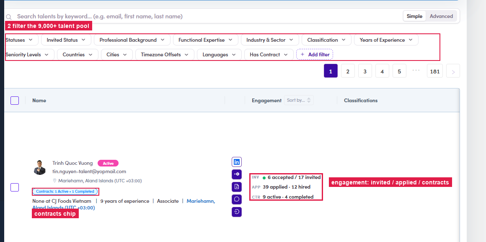
B1.2–3 — filter the pool; each row carries the engagement stats and a contracts chip. - Tick the talents → Invite Talents. Selecting rows reveals the 👤 Invite Talents button (top bar) — it sends the project invite to everyone selected; the project's invited count goes up and the talent shows under Invited Status.
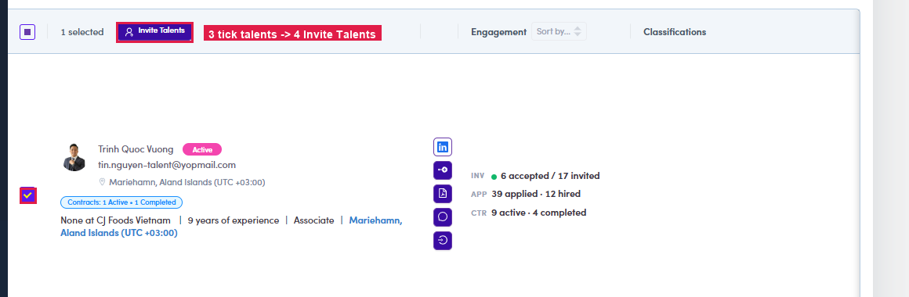
B1.4 — tick talents → Invite Talents.
TALENTB2 · Log & submit timesheet (the talent does this, on the talent portal)
Fill in the billing address and payment info early — without them logging still works, but submitting is blocked: B2.x.7 ↗.
B2.1 · Open the Timesheet screen
- Sign in to the talent portal (
talent.fintalent.io) with the talent account.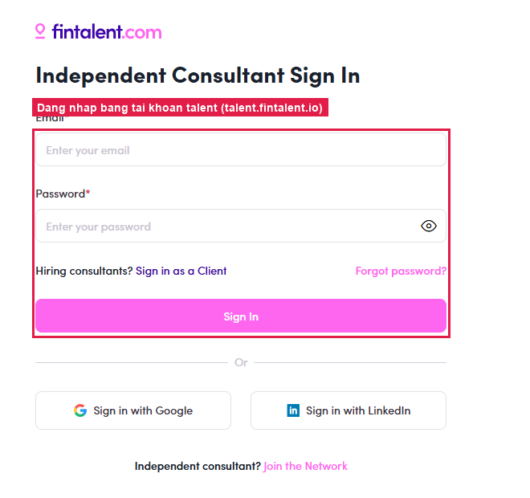
B2.1.1 — the Independent Consultant Sign In screen of the talent portal. - Open the ☰ menu (top left) → group Work → Timesheet. (Timesheet lives in the ☰ menu — it is not on the bottom navigation bar.)
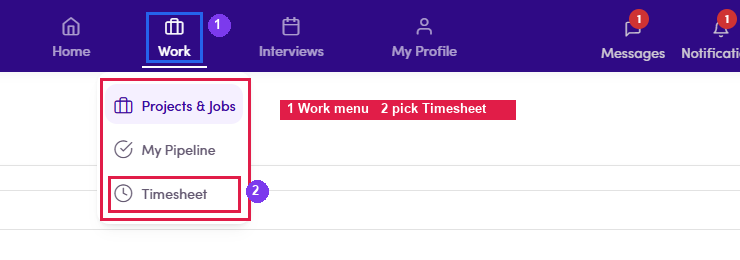
B2.1.2 — ① the Work group · ② the Timesheet entry. - Pick the project to log against. With only one Active contract the system selects it for you — the name shows in the top bar with an Ongoing label, nothing to do. With several Active contracts, click that bar to open the list and switch project; each project has its own calendar, totals and submission queue. Details in B2.x.5 ↗.
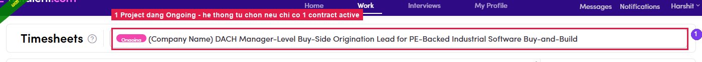
B2.1.3 — the project bar with its Ongoing label; with a single Active contract the system picks it automatically. - Read the totals panel before doing anything — these three numbers measure the whole flow:
Line What it means … submitted Total hours to bill locked in — the number the money follows. Worked: … Total hours actually logged. Can exceed the submitted figure when the talent has billed less than they worked. … pending submission Hours logged but not yet submitted. At 0h the Submit button is greyed out. 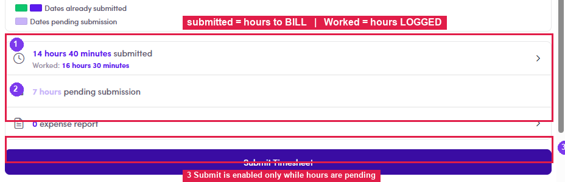
B2.1.4 — ① submitted = hours to bill · ② Worked = hours logged · ③ the Submit button, enabled only when hours are pending. The submitted line is a button, not a label. The › on the right is easy to miss — click the line and the full submission history opens, which is the only place the talent can see what was actually locked in, day by day:
In the dialog What it gives you Timesheet date From → To Narrows the list to a period; the two totals above recalculate for that period. This is how you check a single billing round rather than the whole engagement. Hour(s) worked · Hour(s) to bill The pair, side by side, for the selected range. One row per day Date · Hour(s) worked · Hour(s) to bill — where the two figures diverge is visible immediately. Export to CSV Downloads the same list. Use it to reconcile against an invoice, or to keep a record before the period rolls over. The dialog also states the rule in the product's own words: “Hour(s) to bill — the hours you're charging for. You can bill less than you worked, never more.” That is the same constraint the admin side reads in B3.2 ↗.
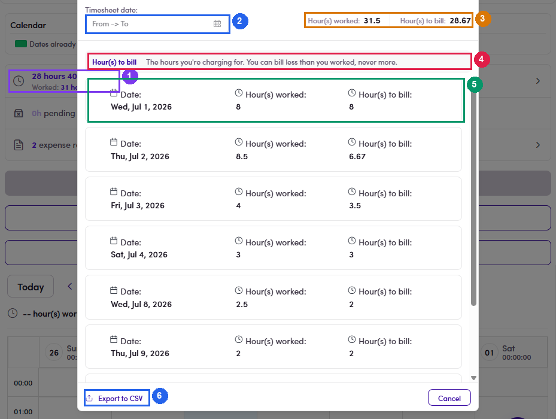
B2.1.4 — ① the submitted line, clicked · ② the date filter · ③ both totals, recalculated for the filter · ④ the rule, stated in the dialog · ⑤ one row per day, worked next to to bill · ⑥ Export to CSV.
B2.2 · Log work
- Go to the right week. Use ‹ / › next to Today.
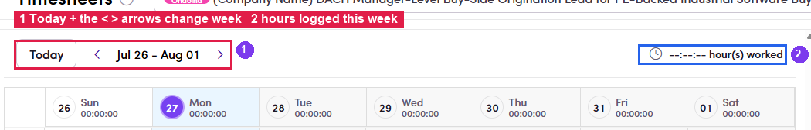
B2.2.1 — ① Today plus the ‹ › arrows change week · ② hours logged for the week. - Drag on the hour grid in the correct day column, from start time to end time.
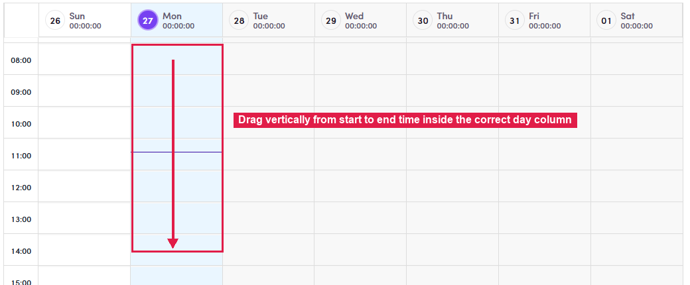
B2.2.2 — drag vertically inside the right day column, from start to end time. - The Record New Timesheet Entry dialog opens — check the Date, correct the start / end time, and a Note is mandatory (it describes the work and is printed in the invoice appendix).
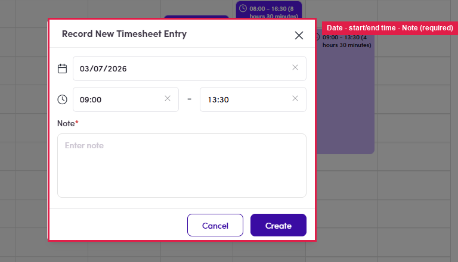
B2.2.3 — Date · start–end time · Note (required) → Create. - Click Create. The entry appears on the calendar in light purple = not submitted. Dark purple means submitted — locked.
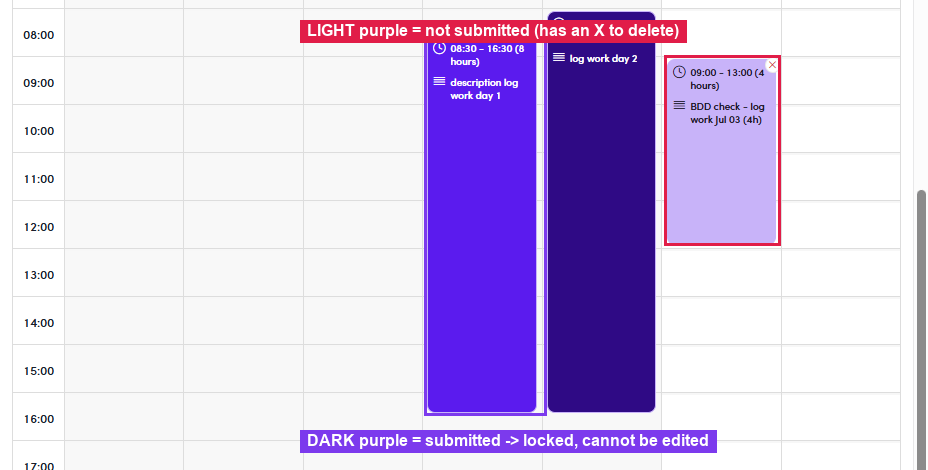
B2.2.4 — light purple = not submitted (editable, deletable) · dark purple = submitted (locked). - Edit or delete an unsubmitted entry. Two different actions, easy to mix up:
- Click the body of the entry → opens Modify Timesheet Entry — change the time or the Note, then Update.
- Click the ✕ in the top-right corner of the entry → deletes it.
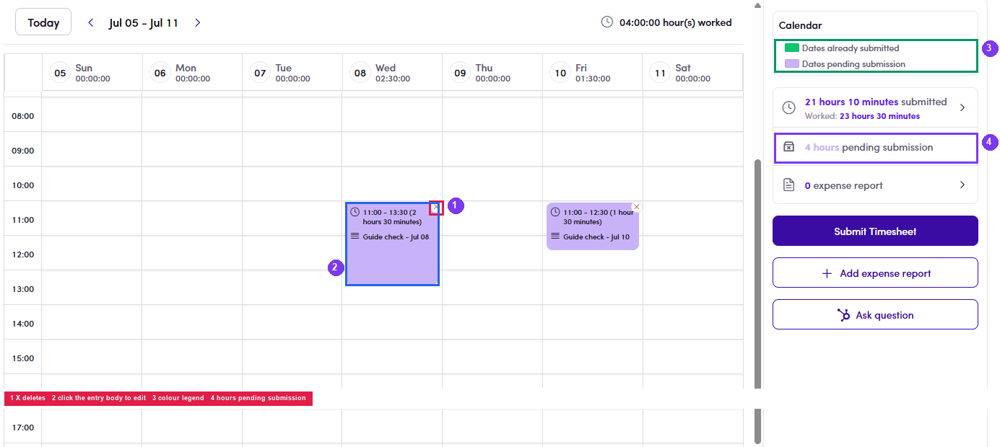
B2.2.5 — ① the ✕ delete button · ② click the entry body to edit · ③ the colour legend (submitted / pending) · ④ hours still pending submission. - Which days can be logged? A greyed-out day cannot be logged — four reasons:
Case Why Day before the contract Start date No contractual work existed yet. Day already submitted Hours to bill are locked in. Day in the future Only work already done can be logged. Day already on an invoice Submitted and then billed by Admin — locked permanently. A gap day inside an invoiced range — loggable but NOT billable The day cell is not greyed out, the talent can log and submit normally — but Admin cannot invoice it. Those hours are stranded for good.What to do: if a day inside an already-invoiced period was missed, do not log it retroactively — those hours will sit there unbillable. Tell Admin/Ops first.Side Jul 9 (a gap inside the invoiced range Jul 8–10) Talent Day cell is white → drag creates an entry → Create works → submit works Admin Create Client Invoice does not prefill the service period, Quantity = 0; opening the picker shows Jul 8, 9, 10 all disabled → unselectable 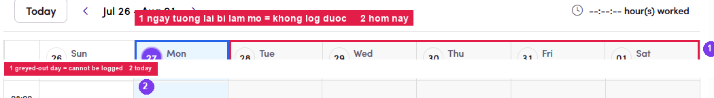
B2.2.6 — ① greyed-out day = cannot be logged · ② today.
B2.3 · File an expense report (only if there are out-of-pocket costs)
- Click + Add expense report (directly below Submit Timesheet) → the Add new expense report dialog opens.
- Fill in the required fields: Expense report date (when the cost was incurred) · Description (goes onto the invoice) · Currency (defaults to the contract currency) · Quantity · Amount. The Total line calculates itself as Quantity × Amount. You can also Upload file to attach the original receipt.
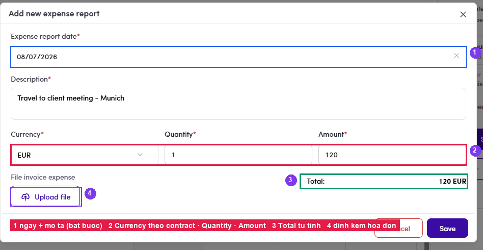
B2.3.2 — ① date + description · ② Currency · Quantity · Amount · ③ Total, calculated · ④ receipt attachment. - Click Save. The panel on the right changes from 0 expense report to 1 expense report.
- Review / edit / delete: click the N expense report line → the Expense reports dialog: one row per item (date · description · Amount · Quantity · Total Amount) with ✎ edit and 🗑 delete buttons, an Expense date filter, and a Grand total at the bottom.
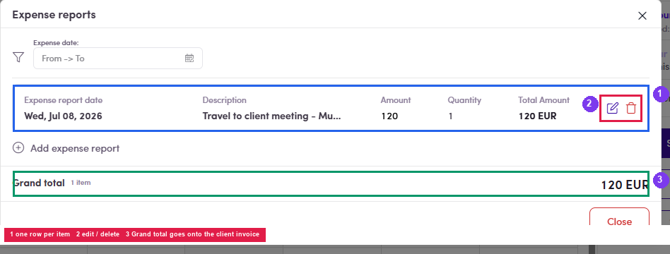
B2.3.4 — ① one row per item · ② edit / delete · ③ Grand total — this is what gets added to the client invoice.
B2.4 · Submit & edit the timesheet (locking in Hour(s) to bill)
- Click Submit Timesheet (enabled only when pending submission > 0h).
If the dialog opens with no submit button and a “Update your billing or payment details” warning instead, the account is missing its billing address / payment info. Fix it in B2.x.7 ↗ and come back.
B2.4.1 — ③ the Submit Timesheet button, enabled only while hours are pending. - The Select Timesheet for Submission dialog lists one row per pending day (not per entry — several entries on the same day are merged). Everything is ticked by default; at the top there is a “N working days selected” counter and an Uncheck all link. Narrow the list with the Timesheet date range (From → To).
B2.4.2 — ① counter + Uncheck all · ② the editable Hour(s) to bill column · ③ the submit button spells out how many days are selected. - Adjust Hour(s) to bill if needed. Each row has two columns:
Column Editable? Meaning Hour(s) worked No Exactly what was logged — kept as the reference. Hour(s) to bill Yes The hours actually charged. Defaults to the logged hours; lower it when only part of the time was agreed. What counts as “edited”: the two columns on the same row differ. Equal = logged hours kept as-is; different = the talent deliberately set a different billable figure.
B2.4.3 — a real example: ① worked 02:30:00 · ② to bill 02:00:00 → different = edited. ③ the Jul 10 row unticked (turns white) · ④ the counter now reads 1 working day selected. You cannot bill more than you worked — and it corrects you without saying soType a figure above the logged hours and the field accepts it while you are typing, then silently snaps back to the logged hours the moment you click away. No error, no red text, no toast. Measured on a 2.5 h day:You type While typing After you click away 9 or 2.6 — above the logged hours shows what you typed 2.5 — pulled back down 0 0 0 — allowed, you can bill nothing −1 −1 0 — pulled back up Why this matters: opening the confirmation counts as clicking away. So if you type 9 and go straight for Submit, the field is already back to 2.5 before the dialog appears — you submit a different number from the one you typed and nothing tells you. Read the figure in the box, not the one you typed, before confirming.
B2.4.3 — a 2.5 h day: ① 9 typed into Hour(s) to bill · ② the same field after clicking away — back to 2.5, with no message in between. - Decide which days to submit. The button at the bottom rewrites itself to match the ticked rows: both days ticked → Submit all 2 working days; untick one → Submit 1 working day. Read that button before clicking — it is the fastest way to see what you are about to lock in. Details in B2.x.3 ↗.
- The Submit Timesheet confirmation appears → click Yes. (Clicking No returns you to the list; skip this dialog and nothing you did takes effect.)
B2.4.5 — “Once submitted, it cannot be edited” → Yes.
B2.5 · Verify after submitting
- pending submission must drop by exactly what you just submitted — it does not have to reach 0h:
What you just did pending afterwards Ticked every day, then submitted 0h Unticked some days (partial submit) > 0h — exactly the hours of the days left behind Seeing pending > 0 after a submit is not a bug — check whether a day was left unticked.
- submitted rises by the total hours to bill you just locked in; Worked rises by the total hours logged. The gap between the two is exactly what was edited in B2.4.3 ↗.
Example 1 — submit everything: before: submitted 14:40 / worked 16:30. Log 4h (Jul 3) + 3h (Jul 4) = 7h, submit with to bill 3:30 + 3:00 = 6:30. After: submitted 21:10 (14:40 + 6:30) · worked 23:30 (16:30 + 7:00) · pending 0h.
Example 2 — partial submit: before: submitted 21:10 / worked 23:30 / pending 0h. Log Jul 8 (2:30) and Jul 10 (1:30) → pending 4h. Tick only Jul 8, lower to bill to 2:00, submit. After: submitted 23:10 (+2:00 = hours to bill) · Worked 26:00 (+2:30 = hours logged) · pending 1:30 (Jul 10 still waiting).
- The submitted day turns dark purple and can no longer be edited; a day left behind stays light purple, keeps its ✕ button and is still editable.
B2.5 — example 2 above: ① Jul 8 dark purple = locked in · ② Jul 10 light purple = still pending · ③ pending 1h30 (not zero) · ④ the submitted day column header reads 02:00 = hours to bill, not the 02:30 that was logged. - Check the colour legend. The Calendar box in the top right lists only the states actually present: Dates already submitted (green / dark purple) and Dates pending submission (light purple). No pending line means everything has been submitted.
That completes the talent's part — Admin takes over: B3 · Manage timesheet → invoice ↗.
B2.6 · What happens to it after you submit
- It is approved the instant you submit. There is no waiting, no review queue, nobody to chase. The submission is created already Approved — and the account recorded as approving it is your own.
The label does not say “Approved” thoughYour side shows Submitted. Admin's side shows Approved. Same record, two words — so “has it been approved yet?” has no answer you can read off the screen, because the answer is always yes. See B3.0 ↗ for the admin view of this.
- Open the summary of everything you have submitted — click the “N hours submitted” panel on the right. It opens Time Sheet of <your name> with the full date range in the title.
In the dialog What it gives you Timesheet date a From → To filter, for pulling out one billing period. Hour(s) worked / Hour(s) to bill the two totals for whatever range is showing — the gap between them is everything you trimmed at submit time. one card per day date, hours worked, hours to bill, side by side. B2.6.2 — ① the date-range filter · ② worked vs to bill for that range. - Export to CSV sits at the bottom left of that dialog, and it exports what the filter is showing. Set the range first, then export — that is the quickest way to produce a per-period record for your own books.
B2.6.3 — Export to CSV, bottom left. - Nothing here is editable. The dialog is a record, not a form — there is no way back into a submitted day from it. If a submitted figure is wrong, you cannot fix it yourself; ask Fintalent through Ask question (B2.x.6 ↗).
B2.x · Edge cases
- Daily contracts — an extra Day(s) to bill column. On a per-day contract the submit dialog adds a Day(s) to bill column that is calculated, not directly editable: one working day = 8 hours (log 8h → 1 day; log 6h → 0.75 day). The talent still only edits Hour(s) to bill; the day count follows from it.
B2.x.1 — Daily contract: Day(s) to bill = hours ÷ 8, shown next to Hour(s) to bill. Known display defectWhen Hour(s) to bill is edited, the Day(s) to bill column in this dialog does not recalculate immediately — it keeps showing the value derived from the logged hours. The invoice total is still correct (it derives from hours to bill). See B3.x.4 ↗. - Log daily, or batch several days into one submit? Either works — the talent's choice. Submit right after logging a day, or log a whole week and submit once (the dialog lists every pending day).
- Partial submit — three days logged, only two locked in. The submit dialog is where you choose which days get locked; it is not a “send everything” button.
Action What happens in the dialog Open the dialog Every pending day is pre-ticked; the counter reads “N working days selected”. Untick a row That row turns from purple to white; the counter drops; the button rewrites itself (Submit 1 working day). Uncheck all Clears everything — handy when you only want one or two days and prefer to tick them back. Timesheet date filter Narrows the list to a date range, useful when the queue is long. Example: the talent logged the 5th, 6th and 7th, but the 7th still needs client confirmation → untick the 7th and click Submit 2 working days. The 5th and 6th are locked (dark purple); the 7th stays light purple, still editable and deletable, and remains in pending submission — ready for a later submit.
Consequence: one contract can have several submit rounds, and Admin can issue a matching number of invoices — see B3.x.3 ↗.
- What if something was entered wrongly?
- Before submitting — fixable: click the entry body to open Modify Timesheet Entry (change time / Note → Update), or click ✕ to delete it and log again.
- After submitting — not fixable; the confirmation said “Once submitted, it cannot be edited”. Tell Admin/Ops before the invoice is issued.
- After an invoice exists — invoiced days are locked permanently and only Admin/Ops can intervene. A gap day inside an invoiced range is loggable but not billable — do not log it retroactively, tell Admin/Ops. See B2.2.6 ↗.
B2.x.4 — ① ✕ deletes · ② click the entry body to edit. Both exist only on light purple entries; dark purple ones have neither. - A talent with several Active contracts at once. The project bar at the top becomes a selector — click it to switch. Things to remember:
- The calendar, the three totals (submitted / Worked / pending), the submission queue and the expense reports are all per project — switching project replaces everything on screen.
- Submissions never merge across projects: each one submits separately, and Admin invoices per contract.
- The URL carries
?projectId=…— if the numbers look “wrong”, first check the project name in the top bar.
B2.x.5 — the project bar with its Ongoing label; with several contracts, click here to switch. - Ask question — reach Fintalent without leaving the flow. The Ask question button (below Add expense report) does not open a form; it jumps straight into Chat, to the Fintalent Team conversation attached to the selected contract (
/chat/<contractId>). Use it after a wrong submit, a missing day, or when the billable hours are unclear.B2.x.6 — ① the two chat threads: Client (Application) and Fintalent Team (Conversation) · ② the messages · ③ the compose box. - No billing address / payment info → submitting is blocked. A talent with an Active contract who has not filled these in can still log work normally — entries are created, pending submission grows — but at the submit step the dialog has no Submit button, only a warning:
“Update your billing or payment details — Due to UK DAC7 regulations, we're required to collect additional billing or tax information from freelancers with an active contract…”
B2.x.7a — ① where the Submit button should be → the DAC7 warning instead · ② the Update billing button · ③ the day list still renders normally, which is why it looks submittable. Easy to misreadThe block happens at submit time, not at log time. A talent can log a whole week before discovering they cannot submit — so fill these in as soon as the contract goes Active.Where to fill them in: click Update billing inside the warning, or go to My Profile → My Earnings (
/earnings). The page has two separate cards and both must be completed to clear the block:B2.x.7b — ① Billing (invoicing address) · ② Payment method (where the money goes) · ③ Paid Earnings · Referral Earnings · Pending Invoices. - Add billing address → the Tax & Payment Information drawer: Account Type (Individual Professional / Firm — Company) · name · Birthday · email · phone · Address / City / Postcode / Country · Tax Identification Number (TIN). It also carries Recipients / Cc / Bcc — who receives the invoice. Fields marked * are required.
B2.x.7c — ① Account Type · ② personal details · ③ address · ④ TIN is required, VAT is optional. - Add payment method → a single Bank info field (free text: bank name, account number / IBAN / SWIFT…) → Save.
B2.x.7d — ① the Bank info field · ② Save.
Once both are saved, return to B2.4 ↗ — the submit dialog shows its normal button again.
- Add billing address → the Tax & Payment Information drawer: Account Type (Individual Professional / Firm — Company) · name · Birthday · email · phone · Address / City / Postcode / Country · Tax Identification Number (TIN). It also carries Recipients / Cc / Bcc — who receives the invoice. Fields marked * are required.
- An expense dated on a day with no logged work → easily missed. An expense reaches an invoice only if the date on the expense falls inside the invoice's Service period — and that period is prefilled from the days that have submitted hours.
Situation Result when Admin creates the invoice Expense dated on a day with logged work Included automatically, added straight to the total. Expense dated on a day without logged work Does not appear — the prefilled Service period never reaches that date. Example: the talent logs work on Jul 20, logs nothing on Jul 22, but files a 75 EUR expense dated Jul 22. Admin creates the invoice → Service period prefills as Jul 20 → Jul 20, the total is just 2h × 120 = 240 EUR, and no expense line appears.
B2.x.8a — ① the prefilled Service period covers only the day with logged work · ② Additional items is empty; the Jul 22 expense was not picked up. The fix (Admin does this): extend the Service period end date to cover the expense date — the item appears in the form immediately, with its own Total, and is added to the invoice.
B2.x.8b — ① end date changed to Jul 22 · ② the expense appears at once: 75 EUR. So the talent should tell Admin/Ops in advance when filing an expense on a day with no billable hours, so the date range gets widened at invoicing time.
ADMINB3 · Timesheet → draft client invoice
B3.0 · Approve the submission first
approvedBy is set to the talent's own user id — verified by submitting one and reading it straight back. approvedDate stays empty, so it is not going through the approve action either.
Platform-wide on UAT: the only Pending Approval rows are from January 2024, and Rejected is 0 — nobody has ever rejected anything, because nothing has ever waited to be rejected. The gate below is real and it works; it just never gets anything to hold. Logged as TS-09.
Until that changes, read this section as: how to pull something back and review it deliberately, not your daily queue.
https://admin.fintalent.io/timesheet-submissions). It is a real, guarded admin page — 592 records on UAT — but nothing in the left menu links to it. If you have never seen it, that is why.- What the page holds. One row per submitted period, titled Timesheets. Columns: Actions · Total Hours · Project · Client · Talent · Status · submit date. The panel on the right filters by Search, statuses, Projects, Talents, Clients.
Statuses are Pending Approval, Approved and Rejected — the same three the talent sees, under different names (B3.x.9 ↗).
B3.0.1 — ① the table · ② the filter panel. - The row menu changes with status, the same way the Resources one does:
Row is ⋮ offers Pending Approval Edit/View Details · Switch to Draft · Approve · Reject Approved Edit/View Details · Switch to Draft · Switch to Pending Switch to Pending is how you get anything into this queue at all. Because submissions arrive approved, the only way to review one deliberately is to put it back to Pending yourself — then Approve or Reject it. It is also the undo if you approved something by mistake.
B3.0.2 — a Pending Approval row: Approve and Reject only exist here. - Approve → “Do you want to approve this timesheet?” → Yes. That is the whole thing — no comment, no reason.
- Reject asks for a reason and will not proceed without one. The modal carries a required Admin comment box; the confirm button is red. Write something the talent can act on — this is the only thing they get back.
B3.0.4 — ① Admin comment, mandatory · ② the red Reject. - Check the hours before you decide — the 👁 in the Actions column opens the submission, and it goes three levels deep:
Level What you get Timesheet project, talent, start/end date, total worked, then one row per day with its own status. Tracking timesheet (👁 on a day) the individual time entries for that day — start time, end time, time worked, description. Edit time (✎ on an entry) From, To and Description, all editable, with Update. B3.0.5 — ① the day rows · ② the 👁 that opens one. B3.0.5 — ① the entries behind that day · ② the ✎ that edits one. - 🐛 Edit time opens, but you cannot use it. The dialog appears underneath the Tracking timesheet dialog that launched it — only its title and its buttons peek out, and nothing in it can be clicked: not the From or To fields, not Description, not even Cancel or Update.
Cause is a stacking order: Tracking timesheet renders at
z-index: 1001, Edit time at999. Verified by hit-testing every control in the dialog — each one resolves to the dialog in front, not to itself.What to do instead: press Esc to get out, and Reject with a comment (B3.0.4 ↗) so the talent fixes and resubmits. Do not tell a talent their hours have been corrected from this screen — on this build, they cannot have been.
If this is fixed, the reach is wider than you would expectThe control is offered on Approved submissions too, not only pending ones — and the talent is told their timesheet cannot be edited after submitting. Once it works, an edit here will be invisible to them, with no notification and no record of who changed what. Worth agreeing a rule before it goes live.B3.0.6 — ① the Edit time title, poking out above · ② its Cancel and Update, poking out below. Everything between them is covered, and all of it is unclickable. - Only then move on. Approved hours are what B3.1 onwards works with. Sync Data and Create Client Invoice do not check this screen for you.
B3.1 · View & sync the timesheet
- Left menu → Contracts & Invoices → Timesheets.
B3.1.1 — ① the Contracts & Invoices group · ② the Timesheets entry at the bottom of it. - Filter down to the talent with the Select talents box (type a name or email, then pick). Use the Talents with Active Contract toggle to see only people with a running contract.
B3.1.2 — ① the Select talents box with a talent chosen (Active chip + name). - Click Sync Data on the talent's row — this pulls in whatever the talent has just submitted.
B3.1.3 — ① Sync Data in the Actions column · ② Create Client Invoice. - Sort the list to find the work, instead of scrolling it. Two buttons sit above the table:
Sort by Use it when Unbilled Hours you are doing a billing round and want whoever has the most waiting, first. Last Issued Date you are checking who has not been billed for a while. The list runs to dozens of pages, so pair this with the page-size selector at the top right rather than paging through.
- Read the talent's row — three things decide what happens next:
What you see What it means (Commitment · cycle · rate) e.g. Hourly · Every 14 days · 120 EUR — cross-check against the contract. Unbilled: N h Hours submitted but not yet invoiced — exactly what is about to be billed. “X hrs to bill · Y hrs worked” A discrepancy warning: shown only when the two differ. It comes with the date range that will go on the invoice. B3.1.5 — ① talent filter · ② contract (commitment · cycle · rate) · ③ View Timesheets · ④ Create Client Invoice · ⑤ invoice history (each block shows date range + hours + amount). This screenshot was taken after everything had been billed, so no Unbilled figure and no warning are visible — both appear only while hours remain uninvoiced.
B3.2 · View Timesheets — check before billing
- Click View Timesheets on the talent's row → opens that talent's monthly calendar.
B3.2.1 — ① View Timesheets · ② invoices already created, shown on the same row. - Reconcile the three totals in the top left:
Figure Must equal Total hours to bill the submitted total on the talent portal — the number the money follows. Total hours worked the actual logged hours. Total uninvoiced hours what has not been invoiced yet — matches Unbilled in B3.1.5 ↗. B3.2.2–B3.2.3 — ① the three totals · ② each day cell reads “X hrs to bill · Y hrs worked” · ③ month navigation. - Check the day cells. A cell shows “X hrs to bill”; when that day was adjusted it shows “X hrs to bill · Y hrs worked”, along with the time range and the Note the talent wrote.
B3.2 — the three totals on top; each day cell shows both to bill and worked whenever they differ. - If the numbers agree, close this and move on to invoicing. If they do not, stop — check with the talent before billing.
B3.3 · Create Client Invoice
- Click Create Client Invoice (on the talent's row in Timesheets, or via Client Invoices → Create new Client Invoice).
The form opens empty — that is normalEven though you clicked from a specific talent's row, nothing is filled in and almost every field is greyed out. Only the Contract picker is active. Nothing happens until you choose a contract, so do that first and the rest of the form comes to life.
B3.3.1 — ④ Create Client Invoice, right on the talent's row. - Pick the Contract — this is the step that fills the form. Above the picker sit two chips, Active and Completed, which decide which contracts are offered. A finished engagement still has hours to bill, so a Completed contract is a legitimate choice — just make sure it is the one you meant.
One talent can hold several contracts at once, and they are listed by commitment + project, e.g. Hourly Project and Daily Project for the same person. Pick the wrong one and the rate, the unit and the currency all come out wrong — see B2.x.5 ↗.
The moment you choose, a summary bar appears at the top of the form. Read it before anything else — it is the fastest sanity check that you are billing the right work:
Row What to check PROJECT the engagement being billed. CLIENT company name, billing address and VAT number. Watch for a red “Name is missing” chip here — the client record is incomplete, and that gap will print on the PDF. Fix the client record before creating the invoice. EMAIL · TALENT who the invoice goes to, and whose hours it bills. CONTRACT rate + commitment (100 EUR / Hourly), the bank account (WISE EUR), the payment terms (Net 10), the start date, and where the contract came from (Pandadoc). The same bar carries five links — View Timesheets · View Contract · View Project · View Talent · View Client — so every cross-check can be done without abandoning the half-filled form.
- Now check every prefilled field. The figures come from the contract and the uninvoiced timesheet range — prefilled is not the same as correct:
Field Must be Contract / Project / Client the contract you are actually billing. Service period start / end the uninvoiced date range (B3.1.5 ↗). Issued Date defaults to today. Billing rate = the billing rate on the contract (what the client pays). Quantity = hours to bill (Hourly) or = days to bill (Daily) — not the logged hours. Amount calculated as Quantity × Billing rate. Multiply it yourself as a check. Currency · Fintalent Bank as per the contract (e.g. EUR → WISE EUR). Client billing address · VAT as per the contract. Description talent name + period, composed for you. Four controls on this form that are easy to walk past:
Control What it is for File invoice (PDF) → Upload File (top of the form) Attach your own PDF for this invoice. Leave it empty and Fintalent generates the PDF itself (B3.4 ↗). Do not confuse it with the expense receipt upload further down — different field, different document. ↻ next to Quantity Recalculates Quantity from the timesheets. Use it after changing the service period, instead of doing the arithmetic yourself. View created invoices · View timesheets (links on the Service period labels) Answer “has this range already been billed?” and “what is actually logged in it?” without leaving the form. Additional items (bottom) Add non-fee lines while creating, not only when editing afterwards. They appear on the invoice as (incl. N additional items). The “X hrs to bill · Y hrs worked” warning is repeated right above Quantity, and the label states the hard limit: up to 2 decimal places. Read both one last time here.
B3.3.3 — Service period · Billing rate · Quantity = hours to bill · Amount calculated. - Review the expense reports (if the talent filed any). Expenses do not sit on the fee line — they land at the bottom of the form, one row each. Check each of them:
What to look at Check against Description What the talent wrote — clear enough that the client understands what they are paying for. Currency Matches the contract currency. Quantity × Amount = Total Calculated; Total EUR is what actually joins the invoice. File invoice expense The receipt. “no files yet” means the talent attached nothing — ask for it before billing, or Upload File yourself if you received it another way. To drop an invalid item from this invoice, click ⊖ at the start of its row; to add something beyond the fee, click ⊕ Additional items.
B3.3.4 — ① Description · Currency · Quantity · Amount · ② Total EUR joining the invoice · ③ the receipt attachment (currently no files yet) · ④ drop this item · ⑤ add a new one. An expense the talent filed is missing?It falls outside the Service period — usually because the talent dated it on a day with no billable hours. Widen the date range and it appears: see B2.x.8 ↗. - When everything checks out, click Create. The invoice is created in Draft, tagged Timesheets (date range) — review it straight away in B3.4 ↗. If there were expenses, the total already includes them.
B3.4 · Review the new invoice & check the PDF
- No need to leave the Timesheets page. Once created, go back to the list — the invoice appears on that talent's own row: number · type · Draft status · date range · hours · Total Amount. With expenses it also reads “(incl. <amount> · N additional item)” — that line alone tells you how many non-fee items are on the invoice, without opening it. Each billing round is one block, stacked in order.
B3.4.1 — ② the invoices created so far, shown directly on the talent row of the Timesheets page. - Click the invoice block → the Update Client Invoice drawer opens in place. It already contains: the ⤓ download PDF button next to the title · the status dropdown + Update · the full editable form · and the links View Timesheets · View Contract · View Project · View Talent · View Client.
B3.4.2 — ① the drawer with its ⤓ download button · ② status + Update · ③ contract & timesheet summary. - Click ⤓ → wait a few seconds and the PDF opens in a new tab (it is fetched from storage, not pushed through a download prompt).
The other route: menu Contracts & Invoices → Client Invoices → find the invoice → the Actions column has 👁 (view detail) and ⤓ (download PDF) — identical result. Use it when you need to search across many invoices and talents.
B3.4.3 — ① the ⤓ button sits right next to the invoice number, inside the detail drawer. - Page 1 — the money. Cross-check: invoice number · client address + VAT · HOUR(S) (or DAY(S) on a Daily contract) · RATE · AMOUNT · TOTAL AMOUNT DUE · the due date (from the contract's Payment terms) · bank details.
B3.4.4 — the fee line and TOTAL AMOUNT DUE with its due date. - Page 2 — the timesheet appendix. Lists every day the talent logged, with time ranges and Notes. This is what shows the client the actual work.
Two numbers, two purposesThis appendix prints the hours the talent logged — so the client can see the real work. The hours the money is calculated from are still hours to bill on page 1. If the talent reduced the hours at submit time, the two pages will differ, and that is by design — see B3.x.4 ↗.
B3.4.5 — the appendix: each day + time range + the Note the talent wrote. - If everything agrees, go to the Issue Client Invoices flow. If not, void or edit the invoice before sending it.
B3.x · Edge cases
- Daily contracts — Quantity is in DAYS. One working day = 8 hours. Example: the talent logs 8h (Jul 13) + 6h (Jul 14) = 14h and locks in to bill 8h + 4h = 12h → Quantity = 12 ÷ 8 = 1.5 days → Amount = 1.5 × 500 USD = 750 USD. On the PDF the column changes from HOUR(S) to DAY(S).
B3.x.1 — the hours ÷ 8 = days conversion, visible in the Day(s) to bill column when the talent submits. - What “Total Hours Worked” means on the list page. The figure in the header and in the table column of the Timesheets page is the total hours to bill (the billable number). To see the actual logged hours, open View Timesheets — only there are to bill and worked shown as separate lines.
B3.x.2 — ① only inside View Timesheets are hours to bill and hours worked separated. - Several billing rounds on one contract. Each round takes only the uninvoiced part; days already on a previous invoice are never billed twice. The talent's row keeps the history of every invoice created, with its date range.
B3.x.3 — three billing rounds on the same contract, stacked in order: ① Jul 1–2 · ② Jul 3–4 · ③ Jul 8–10 (this one also carries an expense). - The two PDF pages disagree — know this before a client asks. Page 1 is calculated from to bill, page 2 lists the actual logged hours — so the two pages can show two different figures:
- Hourly: page 1 = 6.50 hours · page 2 = Total Hour(s) 7.00.
- Daily: page 1 = 1.50 days · page 2 = Total Day(s) 1.75 — same unit on both pages, which is the most confusing case.
B3.x.4 — ① page 1 charges from hours to bill · ② page 2 lists the actual logged hours. The invoiced amount is still correct (it follows to bill). Whether an explanatory line should be added to the appendix is still open.
- Nothing can be billed until the talent submits. Hours that are logged but not submitted sit in pending submission on the talent side — they never reach Unbilled, so they do not appear when you create an invoice. Ask the talent to submit first.
B3.x.5 — ③ the pending submission figure on the talent side — this has not reached Admin yet. - Open the invoice straight from the Timesheets page — no detour through the menu. After creation each talent row carries the invoice block (number · timesheet range · hours · amount · status). Click that block → the Update Client Invoice drawer opens in place, already offering:
- the ⤓ download PDF button next to the title;
- the status dropdown (Draft → Issued → Paid…) and the Update button;
- the PROJECT / CLIENT / TALENT / CONTRACT / TIMESHEET summary bar and the links View Timesheets · View Contract · View Project · View Talent · View Client;
- the whole invoice form, editable.
B3.x.6 — ① the Update Client Invoice drawer (with its download button) · ② status + Update · ③ contract & timesheet summary. Faster than the Client Invoices → search route in B3.4 ↗ when you have just created the invoice and want to check it immediately.
- Editing an invoice that is still in Draft. A Draft invoice remains fully editable — open the drawer as in B3.x.6 ↗, make the change, then click Update (top right). The drawer closes and the Timesheets row updates.
What you can change Effect Service period start / end date Changing the range recalculates Quantity, and any expense falling in the new range is pulled in (see B2.x.8 ↗). Billing rate · Quantity Amount recalculates from the new values. Description · Client contact · Fintalent Bank Account Changes what is printed on the PDF. Additional items Add / remove / edit non-fee items. Type (Standard Invoice…) Changes the invoice type. After editing, download the PDF again (B3.4.3 ↗) to be sure the file matches the corrected figures — the PDF is regenerated from the latest data.
Draft only — and Draft is where your job endsEdit freely while the invoice is still Draft. The status dropdown does offer Issued, Paid and Archived, but do not touch it: moving an invoice on belongs to a different flow, marking it Paid triggers work further downstream, and once it leaves Draft it is no longer freely editable. Finish your checks, leave it Draft, hand over. - The talent sees different words for the same three states — and one of them is misleading.
Admin sees Talent sees Pending Approval Waiting Approval Approved Submitted Rejected Rejected Approved reads as “Submitted” on the talent side, which is the same word they saw before you touched it. So a talent has no way to tell from the label whether you have approved them yet. If they ask, check this screen — do not take their word for the status.
- “Timesheets have changed, please check again”. Seeing this on a Draft invoice means the source timesheet changed after the invoice was created — the talent submitted more days, or an admin pressed Sync Data and newer figures arrived.
Reconcile without leaving the invoice: the link row at the top of the drawer includes View Timesheets — clicking it opens the talent's timesheet calendar on top, with all three totals (hours to bill / worked / uninvoiced) and every day cell. Closing it with ✕ returns you to the same invoice.
Opened this way the calendar gains a colour legend, and it answers the "which days am I actually billing?" question at a glance:
Cell colour Meaning Pink — Current invoice days this invoice covers Orange — Other invoices days already billed on a different invoice — never billed twice, see B3.x.3 ↗ White logged but on no invoice yet — this is what uninvoiced hours counts The legend appears only on the calendar opened from an invoice. The one opened with View Timesheets from the talent row in B3.2 ↗ has no colours, because there is no "current invoice" to colour against.
B3.x.8 — ① the View Timesheets link inside the invoice drawer · ② the calendar opens on top, three totals ready to check against Service period and Quantity. If they differ, correct the invoice and click Update. Never send an invoice while this message is showing — the figures on it may be stale.
ADMINB4 · Publish a resource
B4.1 · Open Resources
- Left menu → Content Management → Resources. It sits alongside Weekly Calls and Configuration — not under Project or User Management, which is where people look first. You can also go straight there with the URL /resources (
https://admin.fintalent.io/resources).B4.1.1 — the Resources entry under Content Management. - The four tabs are the status filter, and each carries its own count. Everything you do to a resource for the rest of this flow moves it between them.
Tab Holds All every resource, whatever its status. Draft written but not released. Talents cannot see these. Published live. Archived retired. Also invisible to talents, but kept. Below the tabs: a keyword search, quick filters for Type and Source, and Add filter for Display Page and Published Date. The table shows Information (thumbnail, status chip, publish date, title, description), Type, Source, Display Page and Categories.
Categories is a column, not a filterYou can read a resource's categories in the table but you cannot filter on them here. Talents can — their page has a Categories picker. If you need to audit by category, sort it out visually or ask on the talent side.B4.1.2 — ① the four status tabs with their counts · ② how many rows the current tab is showing. - Narrowing the list. Four things sit above the table, and they do not all do the same job:
Control What it does Status tabs the main split — All / Draft / Published / Archived, each with its own count. Everything below narrows within the tab you are on. Search resources free text over title and description. Filters as you type and moves the tab counts with it. Type · Source · Display Page · Published Date quick filters. Each opens a list of values with a checkbox, plus Paste list and a Search or type custom value box. Add filter not a filter. It opens Customize Quick Filters — tick which of the four get pinned to the bar. Type and Source are pinned by default; add the other two yourself. Each value has two ways in. Hover a value and two circles appear on the right: ✓ keeps only that value, ✗ excludes it. So you can just as easily ask for “everything except Internal”.
B4.1.3 — Source opened: the three values, the include / exclude circles on each row, and Paste list on top. What you picked shows as a chip on the bar — Type : Video, Source : Youtube. Drop one with its ×, or wipe the lot with Clear all. Filters stack, so those two together mean Youtube videos only.
B4.1.3 — ① the two chips, each removable on its own · ② Clear all · ③ the result count, down from 27 to 6. Filters do not survive a refresh, and the link is not shareableThey hold while you stay on the page, but reload and the chips are gone and the list comes back unfiltered. The address bar writes?bResourceTypes=[object Object]instead of the value, so sending someone that URL sends them an unfiltered page. If you need to hand over a specific set, say which filters to set rather than pasting a link.
B4.2 · Create one
Click Create New, top right — a drawer opens over the list. Then work down the form in order, because the second field changes what the rest of it looks like.
- Title — required. This is what a talent reads on the card, so write it for them, not for the file.
- Resource Type — Video or PDF. Set this before anything else. It decides which fields exist below, and once the resource is saved you cannot change it (B4.x.3 ↗).
Type What appears Video Source (required) + Video URL (required) PDF Source and Video URL disappear; Upload PDF File takes their place, required B4.2.2 — the two fields only Video has: ① Source · ② Video URL. B4.2.2 — switch to PDF and Upload PDF File replaces them. - Source (Video only) — where the video comes from. It changes what you have to supply:
Source What you do Youtube paste the video link into Video URL. Vimeo same — paste the link into Video URL. Internal upload a video file from your own machine. Play it back in the drawer before you press Create — that is the only moment you can catch the wrong file, and Resource Type is locked afterwards. - Status — what happens the instant you press Create. Default is Draft.
Status The moment you press Create Draft Not on the talent portal. Safe: keep editing, publish when you are happy. Published Live immediately. Talents can see it as soon as the drawer closes — so be sure it is right first. You can still edit it or change status afterwards. Archived Not on the talent portal. Goes to storage. Still editable, and you can move it back out. Nothing here is one-way: all three statuses can be swapped later from the row menu (B4.5 ↗).
- Display Page — which talent screen also gets a block with this resource on it. Optional.
Leave it blank and nothing breaks: the resource still shows up on the talent Resources tab like everything else — it just does not get an extra placement anywhere. Full breakdown of the three values in B4.3 ↗.
- Categories — how the resource is classified. Two values exist: Profile Tips and Interview Prep. You may leave it empty, pick one, or pick both.
Worth filling in: this is the only field a talent can filter on in their Resources tab (B5.2 ↗). Empty means harder to find, not just untidy.
- Published At — the publish date carried on the card and in the Information column.
Leave it blank and publishing fills it in for you, whichever way you publish. Set it yourself only when you want a specific date on the card.
Known bug — it does not publish anything on its ownA date here does not flip a Draft to Published by itself — on UAT there are Drafts carrying a past Published At that are still sitting in Draft. Resource status has only Draft / Published / Archived; there is no Scheduled. This is logged as a known bug; until it is fixed, treat the switch as manual and do it yourself at B4.4 ↗ — do not schedule a resource and walk away.
The date still matters for a different reason: a Published resource with an empty Published At never shows on the talent Resources page — see B4.x.1 ↗. - Description — a line or two under the title on the card. Optional; the card renders fine without it.
- Thumbnail — the picture on the card. Optional, and what you get when you skip it is not the same everywhere:
Left blank on… Admin list Talent card PDF a red PDF icon plain grey fintalent.com placeholder Video — any source grey box with a ▶ plain grey fintalent.com placeholder A Youtube or Vimeo link does not bring its own pictureChecked on UAT with a published Youtube resource that has no thumbnail: neither the admin table nor the talent card pulls the video's cover image. The card is rendered as an empty placeholder — there is no<img>on it at all. If you want a picture, upload one.B4.2.9 — PDF, no thumbnail: the admin table falls back to a PDF icon. B4.2.9 — Video (Youtube), no thumbnail: a grey box with a play symbol, not the Youtube cover. B4.2.9 — the same two on the talent side: ① the video · ② the PDF. Identical placeholder; only the badge tells them apart.
B4.3 · Decide where it shows
- Display Page has three values, and each one puts a block on a different talent screen. This is the field people skip.
B4.3.1 — the three values: Home, Project, Project Details. - What each one does — all three were checked against live counts on UAT:
Display Page Puts a Resource block on Home the talent's Home page, low in the left column, under the standing FAQ cards. Project the project list (Work), at the bottom of the filter sidebar. Project Details a single project's page, top of the right column. Every block is split Videos (n) / Documents (n) and scrolls as a carousel. See all three in B5.4 ↗.
It is not a filter on the Resources pageDisplay Page does not restrict who finds the resource. A published resource appears on the talent Resources page regardless — Display Page only adds the extra placement. Leaving it blank is allowed and simply means “Resources page only”.
B4.4 · Publish it
- Status defaults to Draft, so a resource you just created is invisible to talents until you say otherwise. You can publish from inside the drawer (set Status → Published) or later from the row menu.
- From the list: row ⋮ → Set Publish. The menu always offers the two statuses the resource is not currently in, so what you see depends on the row:
Row is Menu offers Draft Edit/View Details · Copy Resource Link · Set Publish · Set Archive Published Edit/View Details · Copy Resource Link · Set Draft · Set Archive Archived Edit/View Details · Copy Resource Link · Set Draft · Set Publish B4.4.2 — the row menu on a Published row: the two moves offered are Set Draft and Set Archive. - Confirm. The dialog names the resource, shows the status change as chips, and tells you what publishing means — “It will be visible to users on the selected display page.” If you left Display Page empty, read that as the Resources page.
B4.4.3 — ① what publishing does · ② Confirm. - Publishing stamps Published At for you — verified: a Draft with no date came back with the date and time of the confirm. That date then shows in the Information column and on the talent's card. It matters more than it looks: see B4.x.1 ↗.
B4.5 · Edit, draft, archive
- Edit — click the title, or ⋮ → Edit/View Details. Same drawer, retitled Update Resource: <title>, and the button now reads Update. Two things differ from Create: Resource Type is greyed out, and Published At is already filled.
B4.5.1 — ① Resource Type, locked · ② Published At, stamped at publish. - Swap the file without recreating the resource. The drawer shows the stored filename and a Change PDF File / Change Thumbnail button. Use this to correct a bad upload — the resource keeps its link, its date and its place.
- Pull it back — Set Draft hides it from talents while you fix it; Set Archive retires it for good. Both are reversible, and neither destroys anything.
- Copy Resource Link puts the file's own URL on your clipboard — handy for pasting into an email. Read B4.x.4 ↗ before you send it anywhere.
- Change a whole batch at once. Tick the checkbox in the table header (or individual rows) and a bar appears above the table: Bulk Actions, a running N resources selected, and — when your selection is a full page — Select all N resources to take the rest of the filtered set with it.
Bulk Actions offers Note Publish N resources same effect as publishing each one by hand. Archive N resources the batch equivalent of Set Archive. There is no bulk Set Draft — pulling things back out of Published is one row at a time.
Pairs with B4.1.3 ↗: filter down to exactly the set you mean, tick the header box, act once.
B4.5.5 — ① the selection bar with the running count · ② the two actions, each naming how many rows it will touch.
B4.x · Edge cases
- Published, and still nobody can find it. The talent Resources page only lists resources that have a Published At date. Status alone is not enough. On UAT this is not hypothetical: 26 resources are Published, the talent page shows 18, and the missing 8 are exactly the ones whose date is empty.
They are not entirely gone — if they carry a Display Page they still show in that block, because the blocks do not check the date. So the resource lives on the Home page but cannot be found by searching. Counted on UAT: Home block 17, Resources page 12 of those same 17.
What to do: publishing today stamps the date automatically, so this is legacy or imported data rather than something you will create by accident. Spot them in the Published tab — a row with a status chip and no date under it. Fix by opening Edit and setting Published At.
- There is no Delete. Not in the row menu, not in the drawer. A resource can only be moved between Draft, Published and Archived. Archive is the delete — use it, and stop looking for a bin.
- Resource Type is locked once saved. You cannot turn a Video into a PDF later. If you picked wrong, archive it and create the right one — there is no conversion.
- Copy Resource Link gives you a public link. It points at the file in S3 and opens for anyone who has it — no login, no membership, no paid-signup check. Every gate described in B5 ↗ applies to the app, not to that URL. Treat it as publishing to the open web: fine for something you would put on the website, wrong for anything client-confidential.
- Validation does not always show you everything at once. On a Video, an empty form flags Title and Video URL together. On a PDF the file check comes second — submit an empty form and you only get This field is mandatory! under Title; fill the title in, submit again, and only then does PDF File is required appear. Fix, resubmit, and re-read the form rather than assuming the first pass listed everything.
B4.x.5 — a Video form submitted empty: ① Title · ② Video URL, both flagged in the same pass. - One switch turns Resources off for the whole platform. Config Management → Payment Config → Subscription → Restrict Talent Modules is a multi-select, and Resource is one of the choices. Add it and every talent loses the menu entry and all five blocks at once — nothing about the resources themselves changes, so the admin list will look perfectly healthy while the talent side is dark.
On UAT the field currently holds Deal Intelligence Feed · Network · Team · Subscription, and Resource is not among them. If Resources ever go missing for everyone at once, look here first.
B4.x.7 — ① the four modules currently switched off · ② Resource, the unticked fifth option. Ticking it turns the whole feature off. - No Display Page is a valid answer. The field has no asterisk and saves empty. The resource is then reachable only from the talent Resources page — which is the right choice for reference material nobody needs pushed at them, and the wrong one for something you want seen.
TALENTB5 · Find a resource
B5.1 · Who can see them
- Three conditions, and all three have to hold. Fail any one and the talent loses the Resources menu entry and every block described in B5.4 ↗ — it is one switch, not several.
Condition What satisfies it Talent status one of Active · Passive · In Review · Review Passive. Note what that includes: a Passive talent still gets resources, and so does someone still In Review. Module not restricted Resource must not be listed in Restrict Talent Modules — a platform-wide switch, see B4.x.7 ↗. Signup fee paid the talent has paid the one-time access fee. - When it fails, the menu entry is simply not there. Nothing is greyed out and nothing explains why — Resources is absent from the navigation, so most talents will never know the section exists.
Typing the URL gets a message that liesThe route still resolves. A talent who has an old link or a bookmark lands on the page and is told “No resources found — Try adjusting your search or filter”. That reads as an empty search, not as a locked door. They will fiddle with the filters, find nothing, and report that the library is empty. If someone says that, check the three conditions above before you go looking for a bug.
- Only Published reaches them. The talent side cannot ask for Draft or Archived at all — the server decides, so there is no filter a talent could set that would expose unfinished material.
B5.2 · The Resources page
- Resources in the top navigation (bottom bar on a narrow screen).
B5.2.1 — the Resources entry. - Three controls and a live count. They stack: set two and you get the intersection, and the count under them always tells you how many cards survived.
Control How it behaves Search resources… free text, filters as you type — no button to press. Matches title and description, so a word from the summary finds it too. All Types single choice: Video or Document. “All Types” is the reset. Categories multi-select — Profile Tips and Interview Prep, the field admins set at B4.2.6 ↗. Chosen values sit in the box as chips; click the × on a chip to drop just that one. N resources found the honest number of cards below. Quickest check that something you published has gone live. Unlike the admin side, these actually work — compare B4.1.3 ↗. A resource with no Categories can only be reached by search, never by the Categories filter.
B5.2.2 — ① Search · ② All Types · ③ Categories · ④ the count. B5.2.2 — All Types opened: only Video and Document. - Read a card. Thumbnail with ▶ for video or 👁 for document; a ⬇ Document chip on PDFs or a duration badge on videos; then title, description, #category chips and Published at <date>. Cards whose thumbnail is a plain Fintalent placeholder are ones nobody uploaded an image for.
B5.3 · Open one
- Clicking a card opens its own page — ← Back To Resources, the title, the published date, the category chips and the description. What you can do there depends on the type:
Type Actions PDF 👁 View Document and ⬇ Download Document Video ▶ Watch Video — nothing else B5.3.1 — a PDF: View Document and Download Document side by side.
B5.4 · Where the blocks appear
- There are exactly five places a Resource block can be rendered, and no others. All five are the same component with a different Display Page passed in, so a resource never appears somewhere its Display Page does not name.
# Screen Display Page Where on the screen 1 Home — standard layout Home left column, below the FAQ cards. Heading reads Resource. 2 Home — deal-intelligence layout Home right column, below Recent deal activity / Weekly deal calls / Boutique network. Heading reads Resources. 3 Project list (Work) Project bottom of the filter sidebar, past Preferred Country. 4–5 Project detail Project Details in the apply / CTA panel of the right column. Two layout variants exist in the code; only one renders, so you see a single block. Two different Home pages, same URL/overview renders one of two layouts and the block moves column between them. A talent with Deal Intelligence Feed access gets layout 2 (right column, plural heading); everyone else gets layout 1 (left column, singular heading). Same resource, different place — so “it is not on my Home page” may just mean the other layout. - Home — the block sits under the standing FAQ cards. Do not confuse it with those: How to write a winning pitch and the rest are fixed page content, not resources, and no admin setting moves them.
B5.4.2 — Display Page = Home, standard layout. - Project list — the bottom of the filter sidebar under Work.
B5.4.3 — Display Page = Project. - Project detail — top of the right column, beside the briefing.
B5.4.4 — Display Page = Project Details.
B5.x · Edge cases
- “No resources found” usually is not about the filters. The message is the same whether a search genuinely matched nothing or the talent has not paid the signup fee. Check payment first — see B5.1 ↗.
- Videos cannot be downloaded. Only PDFs get a download button. If a talent needs a video offline, there is nothing in the product for that.
- A block can show more than the Resources page. The blocks list every published resource for their Display Page; the Resources page additionally requires a Published At date. So a talent can watch a video on their Home page and then fail to find it by searching. That is the admin-side gap in B4.x.1 ↗, seen from the talent's chair.
OPSO1 · Your Ops workspace
O1.1 · Your Ops menu
- Under Sales Management an Ops/Admin sees more than an SDR: besides Segments · Inbox · Meetings, you also get Contacts and Companies (the data tables), plus Email Queues · Email Logs · Signals. Head to Segments (Lists) — the page has tabs Talent · Company · Contact, per-row Actions (👤+ add members · assign · 🗑 delete), an Assignee column and a Category column (the SDR label).

O1.2 — Segments (Lists) as Ops: full menu on the left (incl. Contacts/Companies), tabs, Actions · Assignee · Category columns, + Create New.
O1.x · Edge cases
- Preview what the SDR sees — "View as role → SDR". From your profile control you can switch the UI into the trimmed SDR view (no Contacts/Companies; just their lists + Inbox). Use it to check exactly what a rep will get before you hand a list over.
O1.x.1 — View as role → SDR: the preview banner + the trimmed SDR menu.
OPSO2 · Create a list
O2.1 · Open Segments (Lists)
- Left menu → Sales Management → Segments (Lists). This is the page that holds every list.
O2.2 · Switch to the Contact tab
- At the top, click the Contact tab. Why this tab: the page holds three kinds of list — Talent (candidates), Company (companies), and Contact (people you email). When you click + Create New next, the modal's Type field is locked to whichever tab you're on — you can't change it there. An outreach list must be a Contact list, so stand on the Contact tab first; otherwise you'd create a Talent/Company list you can't use for outreach.
O2.2 — the three tabs (Talent · Company · Contact) + + Create New (top right). Type is locked to the active tab.
O2.3 · Create the list
- + Create New (top right) → the Create List drawer: Type (Contact, pre-set) · List name* · optional SDR list checkbox (see edge case) → Create. The empty list now appears on the Segments page, ready to fill (O3).

O2.3 — Create List: Type · List name · SDR list checkbox (with the exclusivity rule).
O2.x · Edge cases
- "SDR list" — one contact, one SDR list. In the Create List drawer, tick the SDR list checkbox (circled below) to make it an exclusive rep list. The rule: a contact can belong to only one SDR list — if they're already in one, adding them to a second SDR list is skipped (they stay in the first, and a toast tells you — see O3.x.6). This is what guarantees a rep's contacts aren't also being worked by another rep. Non-SDR lists have no such limit.

O2.x.1 — the SDR list checkbox ticked (card highlighted) + its exclusivity rule. In-app copy mismatch — real behavior is skip-and-keep-firstThe Create-List checkbox helper currently reads the opposite ("A contact can belong to only one SDR list — adding it here removes it from other SDR lists", i.e. move). The real behavior is skip-and-keep-first: a contact stays in its first SDR list and the second add is skipped (see O3.x.6). That in-app helper copy should be corrected. - Edit the name. You don't re-create a list to rename it. Step by step: ① open Segments (Lists) → the Contact tab → find the list's row. ② Click the list name → it turns into an inline text field. ③ Type the new name → confirm with ✓ (or ✕ to cancel). The row updates in place.

O2.x.2 — click the list name to rename it inline (✓ save · ✕ cancel). - Edit the category (the SDR label). The category is what makes a list an exclusive SDR list (one contact → one SDR list, see O2.x.1). Step by step: ① open Segments (Lists) → the Contact tab. ② Tick the list's checkbox → an action bar appears. ③ Click Set SDR to give it the SDR category, or Clear category to remove it. (A list that already has the category also shows an ✕ on its SDR badge in the Category column — a one-click clear.)

O2.x.3 — select a list → the action bar's Set SDR / Clear category (the Category-column badge ✕ also clears). - Delete a list. On the Segments row's Actions column click the red 🗑 Delete icon → confirm. This removes the list only — the contacts themselves stay in Contacts and in any other list (same idea as removing members, just for the whole list).
OPSO3 · Add contacts to list
O3.1 · Add from the Contacts page
- Open Contacts (left menu) → the full contact table.

O3.1.1 — Contacts: the table + filter bar + search. - Select the contact(s) — tick the checkbox on each row you want. A blue action bar appears: Add to list · Add to campaign · Add to marketing email · Delete contacts · More.

O3.1.2 — tick rows → the action bar with Add to list. - Click Add to list (in the action bar) → the Add to list drawer opens with Apply to = Selected (n).
- Select the target list — search and tick the list you want in the drawer.

O3.1.4 — Add to list drawer: Apply to = Selected → tick the target list (circled) → Add to N list(s). - Click Add to list (the drawer's confirm button) → done. Verify on the list's Members tab (the count can lag a moment).
O3.2 · Add from inside the list (list detail)
- Open the list detail — Segments (Lists) → the Contact tab → click the list → its Members tab.

O3.2.1 — list detail, Members tab → + Add members (top right). - Click + Add members → the Add contacts to "<list>" picker opens. Contacts already in this list are auto-excluded (a Custom List filter chip does this), so you only see people you can still add.

O3.2.2 — the picker: the Custom List chip auto-excludes current members; tick contacts on the left. - Select the contact(s) — tick each row, or the header checkbox (whole page), or Select all N matching. A "N selected" action bar appears.

O3.2.3 — rows ticked → 20 selected · Select all matching + the action bar's Add to list. - Click Add to list in the action bar → they join the list; the Members count updates.
O3.3 · Add from a company's Employees tab
- Open Companies (left menu) → click a company → its detail.

O3.3 — a company's Employees tab: tick employees → Add to list. - Open the Employees tab — the company's whole staff on file (Foresight Group shows 485).

O3.3.2 — the company detail's Employees tab: the full staff list with the same filter bar. - Select the employee(s) — tick each row, or the header checkbox / Select all N matching. A "N selected" action bar appears with Add to list.

O3.3.3 — employees ticked → 20 selected · Select all 485 matching → Add to list. - Click Add to list → the list picker opens (Apply to = Selected) → tick the target list → Add to N list(s). Good for grabbing everyone at one firm.

O3.3.4 — from Employees you still pick a list (testing-sdr-list-v3 ticked) → Add to 1 list(s).
O3.x · Edge cases
- Use a filter. Click a filter chip (e.g. Lifecycles · Countries · Work Experience · Owner) → the dropdown lists every value, each with a ✓ (include) and an ✕ (exclude) on the right → click to narrow the table. + Add filter pins more. Filter first, then select (O3.1.2).

O3.x.1 — the Lifecycles filter open: each value has ✓ include / ✕ exclude (circled). - Use keyword search. Type in the "Search contacts by keyword" box (names · titles · companies) → the table filters live. Combine with filters.

O3.x.2 — keyword "Managing Director" → the table narrows to 1,897 matching. - Select all N matching (bulk). Instead of ticking one page, tick the header checkbox then click "Select all N matching" → the bar shows All N matching selected → Add to list adds the whole filtered set. ⚠ Note: you must have at least one filter or keyword active first — without a filter, Select-all-matching won't let you Add to list (it stops you from dumping the entire database into a list by accident).

O3.x.3 — with a keyword filter active: All 1,897 matching selected → Add to list. - View a contact's detail first. Click a contact's name/title → the profile drawer opens (facts · Work Experience · Signals · Conversations) so you can check who they are before adding.

O3.x.4 — the contact detail drawer. - Add via "+ Add contacts" (Campaign / Marketing Email). Open the Campaign (or Marketing Email) → the People tab → click + Add contacts (top right) → the contacts picker opens → filter/tick → Add. This loads that campaign's / ME's audience — the reason SDRs can't add people themselves.

O3.x.5 — a live campaign's People tab (1 person) → + Add contacts (top-right) opens the contacts picker. - Duplicates & SDR-list skip — read the toast.
- Already in this list → the contact is silently skipped; no duplicate row is created and the count doesn't double-count them.
- Already in another SDR list → the contact is skipped, not added. A contact can live in only one SDR list at a time (the exclusivity rule, O2.x.1), so the system protects the existing assignment and shows a toast with the count skipped (e.g. "1 contact(s) skipped — already in another SDR list") — telling you they were skipped because they're already in another SDR list. To move them, first remove them from the old SDR list (O4), then add.

O3.x.6 — the toast: some added, but a contact already in another SDR list is skipped (not moved) — the other rep's assignment is protected. - Verify the count while adding. The point here is just to look — you don't tick any list. Flow:
- Select the contact(s) — this is what makes the Add to list button appear (no selection → no button).
- Click Add to list → the Add to list drawer opens.
- Verify — way A: read the Members column. Every list in the drawer shows its current member count (e.g. 17072026v3 = 359). A quick eyeball — no clicks, no ticking.

Way A — the drawer's Members column: each list's live count. - Verify — way B: open the list's detail. Click the list's name → its detail opens right there → the Members tab shows the exact count ("Showing X of N") and the actual people.

Way B — click the list name → detail opens with the live count (here 359).
- Add to several lists at once. The Add to list drawer isn't one-list-only — tick as many lists as you want (use the search to find them). The confirm button counts your picks: with two lists ticked it reads "Add to 2 list(s)" → click it and the selected contact(s) are added to all those lists in one go.

O3.x.8 — two lists ticked in the drawer → the confirm button becomes "Add to 2 list(s)" → Save adds to both.
OPSO4 · Remove members
O4.1 · Remove a member
- Open Segments (Lists) → the Contact tab.
O4.1 — Segments (Lists), Contact tab: every list, with Members / Assignee / Category columns. - Select the list — click its name to open it.
- You land on the list detail → the Members tab (the list's people).
O4.3–O4.4 — the list's Members tab: tick the member(s) you want to remove. - Select the contact(s) — tick the checkbox on each member's row (or the header checkbox to grab the page).
- In the action bar click Remove from list → confirm. Removing only breaks the membership link — the contact itself is untouched (they stay in Contacts and in any other list). Verify the drop in the Members column (Segments page or the list's Members tab; see O3.x.7).

O4.5 — Remove from list in the action bar → the Remove from list confirm dialog.
O4.x · Edge cases
- Narrow with a filter first. Before removing, use the members filter (Lifecycles · keyword · etc.) to show only the people you want gone — then tick and Remove. Saves hunting through the whole list.
- Select all matching (bulk remove). Tick the header checkbox to grab the visible page, or use Select all matching to select every contact matching the current filter (not just the page) → Remove from list clears them in one go.
- Skip the confirm — untick the checkbox. Beside Remove from list in the action bar sits a checkbox that is ticked by default — that's why every Remove pops the Remove from list dialog (so you can't wipe members by accident). Untick it and Remove runs immediately, with no confirm dialog, for the rest of your session; re-tick it to bring the safety prompt back.

O4.x.3 — the checkbox unticked (tooltip: "Confirm before removing: Off") → Remove runs with no confirm dialog.
OPSO5 · Assign a list to an SDR
Assign a list to an SDR — step by step
- Open Segments (Lists) → the Contact tab.
- Find the list you want to assign (the one you filled in O3).
- In that row's Actions column click the Assign assignee icon (the gear/assign icon — the middle of the three row-action icons: add-members · assign · delete). The current owner (if any) shows in the Assignee column with a role badge.

O5.3 — the Actions column: Add members · Assign assignee (middle, circled) · Delete. - The Assign assignee drawer opens — every user with a Roles filter (Admin · Sale Admin · SDR …). Search / filter and tick the assignee — usually the SDR (e.g. Dong SDR).

O5.4 — Assign assignee: user list + Roles filter → tick the person. - Click Save → the Assignee column now shows them; the list appears in their Segments (Lists), and because it's an SDR list it's exclusively theirs.
O5.x · Edge cases
- Edit / re-assign the owner. Open the Assign assignee icon on the row again → pick a different person → Save. This replaces the current assignee (the list moves from the old owner's Segments into the new one's).

O5.x.1 — re-assigning 17072026v3: the current owner (SDR Internal Fintalent) is pre-ticked → tick a different person → Save. - Bulk-assign several lists at once. Step by step: ① in Segments (Lists) tick the checkbox of each list. ② In the action bar click Assign assignee (N). ③ Pick the mode: Add new (adds this owner alongside existing ones) or Overwrite (replace owners) (clears existing owners first). ④ Tick the assignee → Save.

O5.x.2 — bulk Assign assignee across N lists, with Add new / Overwrite (replace owners) mode. - Clear the owner. Fastest way: hover the assignee on the row → a ✕ appears right after their name → click it to remove the owner → the Assignee column shows — again and the list is held by nobody. (You can also open the Assign drawer and clear the selection.)

O5.x.3 — hover the assignee → the ✕ (circled) appears; click it to clear the owner in one click.
SDRFlow 1 · Log in & find your workspace
1.1 · Log in
- Open
admin.fintalent.io. If you're not signed in, the login screen appears — Email · Password · Log In.
1.1 — the login screen: just Email, Password, Log In. - Type the Email and Password the Admin gave you → click Log In.
1.2 · Your workspace
- Log In drops you on Campaigns — your workspace inside Sales Management. Move around with the left menu (8 items); your account card is bottom-left. No Contacts/Companies pages — your lists and Inbox are the entry points.

1.2 — where Log In lands you: the Campaigns page, with the Sales Management menu on the left.
Here's what each menu item is for:
| Menu | What you do here | What you can't |
|---|---|---|
| Segments (Lists) | Open the lists assigned to you and work the members — Flows 2–6. | Can't create a list, assign, or add/remove members — Ops owns that (O2–O5). |
| Inbox | Read replies and reply in-thread — Flow 4. | It's a reply queue — nothing to "create". |
| Meetings | — | — |
| Message Templates | Full create / edit / delete — use & build in Flow 3.x.1. | — |
| Snippets | Full create / edit / delete — use & build in Flow 3.x.2. | — |
| Documents | Full create / edit / delete — the 🗂 file library — Flow 3.x.3. | — |
| Campaigns | View / build multi-step campaigns — Flow 6. | Can't add people — Ops loads the audience. |
| Marketing Emails | View / build a single-blast email — Flow 7. | Can't add people — Ops loads the audience. |
1.x · Edge cases
- Already signed in. Opening the address again skips the login screen and drops you straight back into your workspace — no need to log in again. Your session lasts until you log out (1.x.6).
- Forgot / need to change your password. There's no self-serve reset — contact the Admin and they'll help you reset it.
- Where I can open my account? Your account card is at the bottom-left of the sidebar (avatar · name · email · a refresh icon — that's all; no view-as/eye control on an SDR login). Click your name/avatar to open Update Admin Information (5 tabs: General Setting · Billing · Payment · Activities Log · Email Configuration); log out from the account card's control (1.x.6).

1.x.3 — the account card (avatar · name · email · refresh); click your name to open settings. - View your profile info. On General Setting you can see your First name · Last name · Phone number · Avatar (and Email · Roles). You can't change these yourself — to update your name, phone, or avatar, contact your Admin.
1.x.4 — General Setting: view your name · phone · avatar · Email · Roles (read-only — Admin updates these). - Your email signature. Why it matters: your signature is the sign-off block (name · title · company · phone · booking link) that gets added automatically to the bottom of every email you send — so every message looks consistent and professional and the prospect always knows who you are and how to reach or book you. On the Email Configuration tab you can view your current Signature, Sender Name, and default attachments. You can't edit these yourself — to set or change your signature, contact your Admin.
1.x.5 — Email Configuration: Signature, Sender Name, default attachments (view-only for you). 
1.x.5 — the payoff: your signature is added automatically to the bottom of every new email you compose — no retyping. - Log out. Use the log-out control on your account card to end the session.
SDRFlow 2 · Find a target contact
2.1 · Open your assigned list
- In the left menu click Segments (Lists) (the first item under Sales Management) → the page shows only the lists assigned to you, with member counts & created date. Empty page → no assignment yet, ask Ops. Your list is fixed — you can't add/remove members.

2.1 — the lists assigned to you. Click one to open it.
2.2 · View the contacts
- Inside the list you get the members table: Title · Account (name) · Country · City · Lifecycle Stage · Signals · Last Contact ↓ (sortable) · Action icons (✉ · WhatsApp · LinkedIn). "Showing 0 of N" just means it's still loading.

2.2 — the members table: Title · Account · Country · City · Lifecycle · Signals · Last Contact · Actions.
2.3 · Pick & read a contact
- Click the Account (name) or the Title → the profile drawer opens: action bar Send email · WhatsApp · LinkedIn; facts (Phone · Location · LinkedIn · Experience · Lifecycle · Labels); collapsible Work Experience · Education · Certificates; the Conversations rail on the right edge.
2.3 — the profile drawer opens over the list: everything you need to decide and personalize. - Open Work Experience (the number = how many roles) for their real role, firm and dates — your personalization goldmine.

2.4 — Work Experience expanded: roles + companies + dates. - Check Signals — a fresh reason to reach out. The Signals column has two kinds, and knowing which is which tells you how to open the conversation:
- ⚡ Signal (news) — a recent event at the company (a fund launch, an acquisition, a live auction, e.g. "BauWatch ticks live…", "Wafra launches fund…"). This is the type that can draft an email for you — see Flow 3 · Way 4.
- 💼 Job (title / role change) — a person-level change such as a new title or role (e.g. "Associate Partner – M&A…"). Good context for a personal note, but it does not pre-draft an email.

2.5 — the two signal types: ⚡ Signal = company news (red), 💼 Job = title/role change (blue). 
2.5 — click a signal → its detail opens: headline · source · date, plus Use this email content to reply / Copy email — EN / DE (⚡ Signal only). 
2.5 — "+N" clicked: every signal for the contact, each with its age.
2.x · Edge cases
- Filter by Lifecycles. Click Lifecycles → every value has a ✓ and an ✕:
- ✓ include = keep only contacts at that stage (show them, hide the rest).
- ✕ exclude = hide contacts at that stage (drop them, keep the rest).
- Several ✓ together = OR — a contact matches if it's at any ticked stage.

2.x.1 — Lifecycles filter: ✓/✕ per value, Has/No radios, Paste list. - Keyword search. The box over the table searches names, titles, companies, and remembers Recent searches. Search + Lifecycles combine. More list filters → Flow 8.1 ↗

2.x.2 — keyword search with Recent searches memory. - "Held by teammates" — check before you email.
Why: so two reps don't work the same company at once. If a firm already has someone at Interested or higher (Interested · Call Scheduled · Platform Sign Up · In Project · Project Completed), a teammate probably has a live deal there — emailing a different person makes the firm hear two Fintalent voices and can hurt that deal.
How: open your list → expand the company rail (») → click a company (①). The table then splits in two:- White rows = yours — contacts in your list; work them normally (never shown twice).
- Gray rows = held by a teammate — not in your list but in a teammate's at a hot stage; a "N held by teammates" pill shows the count (②). Don't email them — hover the ⚠ to see who holds whom, then align with that teammate first.

2.x.3 · step — the left company rail is collapsed to logos only by default; click the » toggle at its top to expand it. 
2.x.3 · result — ① pick a company → ② the "N held by teammates" pill + gray rows (Case 2). - View a company's detail. In the left company rail, click the company name (highlighted in the image) → its detail drawer opens on the right with the firm's profile. Use it to sanity-check a firm before working its people. Each field:
Field What it shows Name + logo The company name, with status chips (e.g. Sponsor · In Conversation). Description One-line summary of the firm — sector, size, region (e.g. "PE firm, EUR 50–250m enterprise value, DACH"). Alias names Other names / spellings the firm is also known by. Industry The firm's industry classification. Website Company website — opens in a new tab. Location HQ city & country. LinkedIn The company's LinkedIn page — opens in a new tab. Email domains The firm's email domains (e.g. dbag.com, dbag.de) — handy to sanity-check a contact's email address. Parent Parent company, if any (— when there's none). 
2.x.4 — click the company name in the left rail (highlighted) → the company detail drawer opens on the right. - Sort by Country / City / Last Contact. Country, City and Last Contact are sortable columns — click the header to sort (click once = A→Z / oldest→newest, click again = reverse; empty values group first). Sort by Country / City to work one geography at a time; sort by Last Contact to surface who's gone quiet (feeds Flow 5).
2.x.5 — click Country · City · Last Contact headers to sort. - Filter by Has signal (two levels). Besides Lifecycles (2.x.1), the members bar carries a Has signal filter — so the bar over your contacts is Lifecycles · Has signal, and the company rail has its own. It's the same word at two levels:
- Members bar (right, over contacts) → Has signal : Yes keeps people who personally have a signal; the Signals column then has a value on every row (⚡ news / 💼 job). E.g. 359 → 246.
- Company rail (left, over firms) → expand it (») and its bar shows Lifecycle · Has signal (+ 🔍 search). Has signal : Yes keeps firms that have a signal — the best ones to open with. E.g. 111 → 29.

2.x.6 — members bar = Lifecycles · Has signal; company rail = Lifecycle · Has signal (+ 🔍 search). - Simple vs Full view. Top-right of the table is a Simple / Full toggle. Simple (default) shows the lean columns; Full adds more detail per row. Switch anytime — it only changes what you see, not the data.
- Show / hide columns. The gear ⚙ button (next to the Simple/Full toggle) opens a column picker — tick the columns you want shown, untick the rest. Handy when you only care about Signals or Last Contact.
- "Showing 0 of N" — the list is still loading. A count of 0 with grey skeleton rows just means the members are still fetching (can lag a moment on big lists). Wait a beat — it fills in.
2.x.9 — Showing 0 of N + grey skeleton rows = still loading; it populates in a moment. - "+N" — a contact with several roles. When someone holds more than two jobs, the extra ones are folded behind a small "+N" chip in the Title / Work Experiences cell. Click +N to expand every role inline (past & present); click the ▲ that appears to collapse them again. The same +N pattern in the Signals column hides extra signals — click it to see them all.
2.x.10 · before — two roles shown; the +N chip hides the rest. 2.x.10 · after — click +N → all roles expand inline (click ▲ to collapse).
SDRFlow 3 · Send a 1:1 email
3.1 · Four ways into compose
- Segments (Lists) → open your list → find the contact's row.
- In the Action column (right side) click the ✉ icon → compose opens for that contact, without leaving the list.
Way 1 — click the ✉ icon in the row's Action column (far right, circled) → compose opens for that contact.
- Open the contact (click the name/title) → the profile drawer opens.
- In the action bar at the top click Send email → compose opens.
Way 2 — the Send email button in the profile action bar (top-left of the drawer).
- Open the contact → on the right edge click the vertical CONVERSATIONS tab to expand the rail.
- In the rail click New Email → compose opens, with the existing thread history right there.

Way 3 — the Conversations rail: thread list + New Email (and ↩ reply arrows).
- Segments (Lists) → open your list → look at the Signals column → click a signal on the contact's row → the signal detail opens. (What the two signal types mean → Flow 2 · Signals column.)
The Signals column — click a signal to open its detail. - In the signal detail, top-right, click Use this email content to reply.
Use this email content to reply (circled) — or Copy email — EN / DE if you only want the text. - Compose opens with the body already written from the signal. To is empty — add the contact → check From / Subject → personalise the draft → Send (finish at 4.2 below).

Compose prefilled from the signal — a ready draft you edit, address, and send.
Replying to someone who already wrote to you is a separate job — see Flow 4 · Answer replies.
3.2 · Compose & send (same window for all 4 ways)
The whole job here is to send a good email successfully — 4 steps:
- Check From / To / Cc. Both address fields are pre-filled — check them before sending:
- From = your own mailbox, filled in automatically from the email set up on your SDR profile. You can't change it in compose — it's set by your Admin (you only view it → Flow 1 · your account ↗).
- To = the contact's email, pre-filled from the person you started from. You can change it or add extra recipients — type an email and press Enter (each becomes a chip; the ✕ removes it).
- Cc = copy someone else: click Cc at the right of the To row → a Cc field appears → type their email and press Enter.
3.1 — ① From = your profile email (view-only) · ② To = the contact's email (editable, add more) · ③ Cc = copy someone in. - Type the Subject yourself in "Add a subject" at the very top. For a new email it starts empty and does not auto-fill, even from a Template (known bug). The Send button blocks an empty subject — so you can't forget.

3.2 — the subject box (red frame) — type it yourself. - Write your message in the body (personalize with their role & signal from Flow 2). Want to start from a Template, drop in a Snippet, or attach a file? See Edge cases (3.x).
- Proofread → Send. It auto-logs into Conversations, your signature (Flow 1.x.5) is appended automatically, and there is no recall.
- See your sent email. The moment you send, your email is logged to the contact's Conversations. There are two ways to open it — both land on the same Conversation:
- From the list — click the contact's 💬 conversation icon (Last Contact column) → the Conversations drawer opens with your email at the top of the thread, marked "just now", sent by you.
- From the contact — open the contact and switch to the Conversations tab.
3.5 — your just-sent email sits at the top of Conversations ("just now"); the right pane shows it in full.
3.x · Edge cases — write faster with Templates · Snippets · Documents
Three helpers speed up composing. For each: use it in the compose bar, and build your own from its menu page. ✅ your SDR account can create / edit / delete all three.
3.x.1 · Templates — full pre-written emails
- Use it in compose: click Template in the compose bar → Insert appends to your draft, Replace overwrites it (incl. the EN 01–05 set). Even from a Template the subject box still needs typing (3.2 bug).

Use — Template: Insert / Replace + search. - Build your own: Message Templates (left menu) → + Create New → fill Name* (how it shows in compose, e.g.
EN 06 - Follow-up) · Topic* · Source Type · Subject EN / DE · body EN / DE (two rich-text editors) → Create. Edit/delete via row actions; filter by Topics.
Create — Name* · Topic* · Subject EN/DE · rich-text body EN/DE.
3.x.2 · Snippets — short reusable blocks
- Use it in compose: click Snippets → search → click = inserted at the cursor (EN | DE toggle).

Use — Snippets: search + EN/DE, insert at cursor. - Build your own: Snippets (left menu) → + Create New → Private toggle (ON = only you; OFF = shared) · Name* · Type · Content English* / Content German → Create. Edit/delete by hovering the row.

Create — Private toggle · Name* · Type · Content EN*/DE.
3.x.3 · Documents & files — attachments
- Use it in compose: 📎 uploads a file from your computer; 🗂 attaches from the shared Document library (Common · Contact · Campaign filter checkboxes, Published files only).

Use — 🗂 Select Documents: shared files (Published only). - Build the library: Documents (left menu) → + Create New → Name* · Type* (Common / Contact / Campaign — the compose tab it lands under) · Status* (Draft → Published; only Published is attachable) · Is Star · Is Public · File* → Upload File → Create. Retire with Archived, not delete.

Create — Name* · Type* · Status* (Draft→Published) · Upload File.
3.x.4 · No email? Get in touch on WhatsApp / LinkedIn instead
Instead of email you can get in touch on another platform — straight from the actions on the platform. Both icons live on the contact's action bar (profile drawer) and in each row's Action column. A coloured icon works; a gray one means that data is missing.
- WhatsApp. Open the contact (Flow 2) → the action bar shows Send email · WhatsApp · LinkedIn → click WhatsApp. Green = a usable phone is on file → it opens a WhatsApp chat in a new tab (
wa.me/‹number›). Gray = no phone (or the number is too ambiguous to dial) → nothing happens; ask your Admin to add a phone.3.x.4 — the action bar: Send email · WhatsApp · LinkedIn. - LinkedIn. Click LinkedIn (action bar, or the icon in a row's Action column). Blue = a valid LinkedIn URL is on file → it opens that stored URL as-is in a new tab (the app only checks it's a
linkedin.com/lnkd.inlink — it doesn't rewrite it). Gray = no/invalid URL → nothing happens; ask your Admin to add the URL.3.x.4 — the ✉ · WhatsApp · LinkedIn icons in each row's Action column (coloured = usable).
SDRFlow 4 · View replies & answer replies 🔴
4.1 · View & answer a reply
- Open the replies: click Inbox in the left menu — one row per contact who wrote back (auto-replies / OOO land here too). Each row has two columns:
- Account — who it's from: avatar, name, email address, phone, and city / country.
- Last Email — the most recent message in that thread, shown in three parts:
- Subject (bold, top line) — the email's subject (e.g. "Re: How mid-cap PE firms staff DD in 5 days").
- Preview (grey, middle) — the opening line of the body, so you can triage without opening it.
- Date (bottom) — when it arrived (e.g. "Jul 17, 13:11").

4.1 — Inbox: one row per reply (Account | Last Email). - Spot which messages are replies — and glance at the auto chip. The clearest signal is the direction arrow next to the sender in the thread:
- ↙ inbound arrow + the contact's name = a reply from the prospect (their words) — the message to read and answer.
- ↗ outbound arrow + your own name = an email you sent (e.g. "Dong SDR ↗").
Chip On What it means Your move Delivered your send Sent & delivered — the prospect hasn't opened it yet. Give it time, then follow up. Open your send The prospect opened your email (or it isn't classified yet). Warm signal — worth a follow-up. ⚠ Dropped your send The email did NOT go out — it failed to send. Send it again — this one needs your attention. Interested Call Scheduled their reply The system read the reply as a positive signal. Read it, then set the contact's Lifecycle. Out Of Office Not Interested … their reply The system's quick read of what they wrote. Read it, then set the Lifecycle. 
4.2 — ① a reply = ↙ inbound arrow + a real chip ("Out Of Office"); ② your send = ↗ outbound arrow + your name; ③ your send's chip = a delivery status (Delivered · Open · ⚠️ Dropped). 4.2 · chips — the coloured reply chips down the thread list: Out Of Office · Interested · Not Now — the system's quick read of each reply. (Your own sent rows instead carry a delivery-status chip — Delivered · Open · ⚠️ Dropped.) - Read the email — and know where it came from. Click any row → the contact opens on Conversations: the thread list is on the left, the selected message on the right. Expand all unfolds the whole exchange. Read what they actually wrote — the chip is only a hint.
What a "thread" is: one conversation = every email exchanged with that contact under one subject, grouped together. Each item in the left list is a thread; a small count badge (e.g. 2 · 3 · 12) shows how many messages it holds. Click to open it, then use the › / Expand chevron to unfold every message in order.
Anatomy of a thread row (left list):- Avatar + name — who the latest message is from.
- Direction arrow — ↗ = an email you sent (e.g. "Dong SDR ↗"); the prospect's name with no outbound arrow = their reply.
- Source icon (small ✉) — hover it to see where a sent email came from (see the table). A reply has none.
- Auto chip — the system's read (Out Of Office · Interested · Not Now …) → see 4.2.
- Count badge = messages in the thread · Date = when the latest one arrived.
Source What it means How to tell Direct You wrote & sent it yourself, 1:1 (Flow 3). ↗ your name, no source icon. Campaign Sent by an automated campaign sequence the contact is enrolled in. Source icon → tooltip "Campaign: [name]". Marketing Email Sent as part of a marketing email send. Source icon → tooltip "Marketing Email: [name]". 4.3 — hover the ✉ source icon on a sent email → the tooltip names where it came from (here Marketing Email: V1 …). Direct 1:1 sends show no source icon; campaign sends read "Campaign: …". Reply vs no replyA thread with an inbound message means the prospect wrote back — answer it (4.4 / 4.5). A thread that's only your own ↗ sends has no reply yet — that's a follow-up candidate (Flow 5 ↗).
4.3 · actions — the three action arrows sit at the top-right of the open message: ① Reply all · ② Reply · ③ Forward. - Decide: reply or not. If it needs an answer, reply (4.5). If it doesn't (e.g. a plain "not interested" or an auto-reply), skip replying and just classify the contact (Flow 3) so it leaves the queue.
- Click Reply — the single ↩ arrow at the top-right of the open message (circled below). It answers only the person who wrote — the normal choice for 1:1 outreach. The subject auto-fills as RE: [the original subject] (you can still edit it). (The double-arrow Reply all and the Forward arrow sit right next to it — see Edge cases.)

4.5 — the Reply button (single arrow) at the top-right of the message. - What opens: a compose window with the subject already set to RE: …, the sender pre-filled in To, and the original message quoted below. It stays in the same thread.

4.6 — Reply clicked: RE: subject, the sender in To, the quoted original. - Write your message → Send.
4.x · Edge cases
- Reply all — the double ↩↩ arrow (left of Reply, circled below) answers the sender plus everyone else on the thread's To/Cc. Use it only when several people are genuinely in the conversation (an assistant or colleague was copied). Same compose window as Reply, but the To line is pre-filled with every email address in the thread — so your one reply goes out from your mailbox to all of them at once. Hover the button to preview the full recipient list (e.g.
To: oemer.gueven@fintalent.com, dz@dzadvisory.de), and remove anyone you don't want before you send. Like Reply, the subject auto-fills as RE: [original subject].4.x.1 — hover Reply all (leftmost of the three) → the tooltip previews every recipient (To: tien@fintalent.com, tin@cyberhq.net) before you send. - Forward — the ➡ arrow (right of Reply, circled below) sends this message on to someone new. Same window, but To starts empty for you to type the new recipient; the original message is carried in the body. The subject auto-fills as FW: [original subject].

4.x.2 — the Forward button (arrow pointing right), rightmost of the three. - Filters. The Inbox bar carries the full set; + Add filter opens Customize Quick Filters (pin filters, Reset defaults) to build your own quick bar. Use it to slice big queues (only DACH, only CFOs). Full Inbox-filter reference → Flow 8.3 ↗
Filter What it narrows · how to use Lifecycles by contact stage — same ✓/✕ tool as 2.x.1 Contact Classification contact type: Talent · Client · Other (each ✓/✕; Has/No radios + Paste list) Owner which teammate owns the contact — pick yourself to see only yours Work Experience career facts — the power filter (fields below) Countries · Cities the contact's location — pick a geography (DACH, UK…) + Add filter Customize Quick Filters — pin/unpin which filters show on the bar (Reset defaults) Every dropdown works the same: each value has a ✓ include (keep only these) / ✕ exclude (hide these); Has / No … radios catch records with/without any value; Paste list takes one value per line; several ✓ together = OR.
Work Experience filters by career, not just the contact record. A top Match any (OR) / Match all (AND) toggle decides whether a person must meet one or all of: Company type (Sponsor · Corporate · Portfolio) · Email validity (Valid · Invalid · Validating · None) · Currently / Past · Position (job title) · Company (or Has / No linked company, plus + Filter by linked company: city · country · bucket · classification) · Company Description · Company country / city. E.g. Work Experience → Company type = Sponsor took a 27-reply queue to 25 (every remaining row a sponsor firm).

4.x.3 — the Work Experience filter inside Inbox; + Add filter pins more. 
4.x.3 · panel — the full Work Experience panel: Match any/all · Company type · Email validity · Currently/Past · Position · Company/linked · Description · country/city. - The orange "In Queue" tag. A message tagged In Queue is accepted but not sent yet (waiting in the send queue). It clears to a normal sent message once it goes out — it just means "on its way", don't re-send.

4.x.4 — the orange In Queue tag on a message (circled): accepted, waiting in the send queue, not sent yet. - Show / hide columns. The gear ⚙ (top-right, next to Simple / Full) opens Column Settings — tick the columns you want in the Inbox, untick the rest (search the list, or Reset to defaults). Account stays locked on; expand it to choose which fields show inside that cell (Phone · Location · LinkedIn · Lifecycle · Contact type · Lists · Labels…). Handy for trimming a busy Inbox down to just what you triage on.
4.x.5 — the gear ⚙ Column Settings: tick / untick columns, expand Account to pick its in-cell fields, or Reset to defaults.
4b · Schedule a call (spot it in your replies → book → reply with the link → manage)
4b.1 · Spot the call in your replies
- Find the ones that asked for a call. In Inbox, open the Lifecycles filter and pick Call Scheduled. That is the lifecycle stage a contact reaches when a call is on the table, and filtering by it turns your whole inbox into a short worklist.
- Two chips share the name — know which one you are looking at. This trips people up, because both say much the same thing at different levels:
Chip Sits on Means Scheduled Call (dark) a single reply, next to the sender's name in the thread the system read that message and judged it to be about arranging a call. This is the one that tells you what to do. Call Scheduled (green) the contact, in the Lifecycle Stage column where this person sits in the pipeline. This is what the Lifecycles filter searches. So you filter on the contact's lifecycle to build the worklist, then read the reply chips inside the thread to find the message that actually asks for something.
The reply chip can be buriedA thread collapses to its most recent message. A conversation showing No Categories at the top can still hold Scheduled Call replies further down — expand the thread before deciding nothing is there.4b.1.2 — two replies the system tagged Scheduled Call, inside a thread whose own chip reads No Categories. - Open it and read what they are asking for. The chip only says “this is about a call” — it does not say which call, or what they want doing about it. Real example from production:
What a Scheduled Call reply looks like“Apologies for the short notice — our investment committee moved to Thursday morning, so I need to shift our 10am call. Could we do Thursday 4pm CET instead, or alternatively Friday 9am CET? Same agenda, and please keep Katharina on the invite…”
Read closely: that one is a reschedule, not a new booking, and it names two options in their timezone. Sort out which you are dealing with before touching the Meetings screen — a reschedule goes through 4b.x.1 ↗, not through 4b.2.
Clicking the row opens the contact on Conversations, with Meetings as the tab beside it, carrying a count — so you can see whether this person is already booked before you read a word.
4b.1.3 — the part that decides what you do next: they are moving an existing call, and offering two slots in CET.
4b.2 · Book the call
- Two ways in, and they are not identical. The difference is who fills in the participant:
From How Participant email The contact — any row in a list, Contacts, or a ME's People tab the 📅 icon in the Action column, “View meetings with <name>” → + Create meeting filled in already, with a picker if they have several addresses Meetings in the left menu + Create meeting, top right empty and required — you type the address yourself Prefer the contact route when you are answering a reply. It carries the right address for you, and it is one click from the conversation you are already in. The Meetings route is for when you have the address in your head and not the contact on screen.
Typing the address on the Meetings route still resolves the person: the title comes back as “Fintalent call — <their name>”.
The contact route is two clicks, and the second one catches people out. The calendar icon does not open the booking form — it opens the contact, on its Meetings tab. The form is behind + Create meeting in the top right of that panel:
- 📅 on the contact's row → the contact opens on Meetings.
- + Create meeting, top right — or the Create meeting link in the middle when the contact has none yet. Both open the same form.
4b.2.1 — ① what the 📅 icon opens: the contact on its Meetings tab · ② + Create meeting — the button that opens the form. The Meetings route is one click. Meetings in the left menu, then + Create meeting in the top right — the same corner as on the contact panel, so the two routes feel alike once you know them.
4b.2.1 — the other way in: ① Meetings in the left menu · ② + Create meeting, which opens the same form. One difference from here: Participant email arrives empty, and it only accepts an address that already belongs to a contact — see 4b.x.3 ↗.
4b.2.1 — the Meetings route: ① Participant email empty and marked required · ② Date & time · ③ the title, waiting to be resolved from the address. - Fill the form. Only one field can stop you.
Field Required What to do with it Participant email yes Prefilled on the contact route. If they have several addresses, the picker decides which one gets the invite. Date & time yes The form says it outright: “the meeting cannot be created without a start time”. Confirm stays disabled until it is set. Timezone prefilled Defaults to yours, not theirs. Read it again if you agreed a time in their local clock — see 4b.x.2 ↗. Duration 30 minutes Change only if you agreed otherwise. Title · Notes optional The title is prefilled and is what shows in their calendar. Notes are for you. 4b.2.2 — ① Date & time, the one field that blocks you · ② the timezone it will be read in — yours, not theirs. - Save — and copy the link before you close the panel. The confirmation shows the meeting, the full Zoom join link, and a Copy join link button. Nothing has been emailed to anyone.
Closed it too soon? The link is not lost — Copy join link is on the meeting's row for as long as the booking exists (4b.4 ↗).
4b.2.3 — the link is generated for you; the only thing to do here is Copy join link.
4b.3 · Reply to their email with the details
- Answer in the same thread. Go back to the reply that asked for the call and use the ↩ reply arrow on it, exactly as in Flow 4 ↗. Keeping it in-thread is what makes the booking make sense to them.
The compose window does not carry the linkWhether you reply in the thread or use Send email from the meeting row, the message opens with the participant filled in, your signature, the quoted original — and no join link. Paste it in yourself, or they get a confirmation they cannot act on.
4b.3.1 — ① the subject carries RE: and the original wording, which is what keeps it in their thread · ② Send, once the link is in. - Write the three things they need: the date and time with the timezone spelled out, the duration, and the join link. Time is the part that goes wrong — “Friday 31 July, 15:00 CET (08:00 UTC)” is worth the extra seconds.
Doing this often? Build it once as a Snippet with the fixed wording and paste the link into it — 3.x ↗.
4b.3.2 — ① the body arrives with your signature and nothing else — paste the link here · ② then Send.
4b.4 · Manage booked calls
- Where to look, depending on what you are asking:
You want… Go to Every call you host Meetings in the left menu. Tabs All · Upcoming · Completed · Cancelled, plus search and filters by Host and Activity Date. One contact's calls the 📅 icon on their row → the contact opens on its Meetings tab, same four sub-tabs, scoped to them. Just the number, without opening anything the small badge on that same 📅 icon. No badge means no calls. The Meetings tab in a contact you already have open it sits next to Conversations, with its own count. To cancel the meeting's row → ⋮ → Cancel meeting. 4b.4.1 — how you narrow the list: ① the four tabs with their counts · ② search by keyword · ③ filters by Host and Activity Date. - What each control on a row does. Four of them, and the first two are not the same thing:
Control Opens Use when Join meeting the ordinary join link — the same one the contact got you want to see what they see, or you are joining a call somebody else hosts. You may land in the waiting room. Start as host the host start link, carrying a host token this is the one to use on the day. It opens the room with host rights — admitting people, recording, ending the call. The token is short-lived, so start it near the time, not hours before. Copy join link — sending or resending the link to the contact. ⋮ Send email · Cancel meeting the only two row actions. There is no edit. If you take one thing from this sectionSend the contact the join link. Open the call yourself with Start as host. Handing out a host link would let whoever holds it run your meeting.4b.4.2 — the four, left to right: ① Join meeting · ② Start as host · ③ Copy join link · ④ ⋮, which holds Send email and Cancel meeting. - Cancelling, and what it destroys. ⋮ → Cancel meeting asks first, and the dialog is worth reading: “This removes the Zoom meeting and its join link for everyone.”
Confirm and the booking leaves Upcoming and lands in Cancelled — it is not deleted, so the history stays. The contact is not told. If a real person was expecting that call, the cancellation email is yours to write.
The tab counters do not refresh on the spot — they still read the old numbers until you reload the page. Do not take that as the cancellation having failed.
4b.4.3 — read the warning, then Cancel meeting commits it. Keep meeting backs out.
4b.x · Edge cases
- They ask to move it — the whole sequence. This is the common one, and there is no reschedule button, so it goes:
- Their reply arrives asking to move or drop the call.
- ⋮ → Cancel meeting on the old booking. The old link is dead from that moment.
- New time agreed? Create meeting again — and it mints a completely new Zoom meeting. Verified on UAT: cancelling meeting
…630530and rebooking produced…971737, a different number and a different password. - Reply in the same thread with the new link, and say plainly that the earlier invitation no longer works. Their calendar still holds the old one.
- No new time? Cancel and leave it. The contact keeps the Call Scheduled lifecycle until somebody changes it, so fix the stage by hand or the inbox filter will keep offering them to you.
- The form warns you before you start — your account has no Zoom. Meetings are created on a Zoom account tied to you as the host. If nobody has linked one to your admin record, the form says so in a banner the moment it opens, and Create meeting stays greyed out no matter what you fill in:
What you will see“Your account has no Zoom user linked yet. Ask an admin to set your Zoom user ID before scheduling meetings.”
There is nothing to fix on your side — no setting, no retry. Ask an Admin to set your Zoom user ID. Meanwhile either have a colleague who is set up host the call, or send a link from your own Zoom by hand — but a booking made outside Fintalent will not appear on the Meetings page, will not show on the contact, and gives you no Start as host button.
Verified on a real SDR account with no Zoom user (SDR Internal Fintalent). Note the block is a guard, not a failure: the form refuses up front rather than letting you fill everything in and erroring on save.
4b.x.2 — ① the Zoom warning, shown before you type anything · ② the second guard from 4b.x.3 ↗ · ③ Create meeting, greyed out · ④ the account this was reproduced on. - The address has to belong to a contact. On the Meetings route you type the address yourself, and typing one the system does not recognise produces a second guard:
What you will see“No matching contact found for this email. A contact is required to create a Zoom meeting.”
So the Meetings route is not a free-text shortcut — it is a search. A booking always hangs off a contact record, which is what makes it show up on their Meetings tab and behind the calendar icon on their row.
If the person is not a contact yet, create the contact first, then book from their row — the contact route (4b.2 ↗) sidesteps this entirely, because the participant is already resolved. Watch for it when the same person writes from a second address: the address on the thread may not be the one on their record.
- Every row shows the time twice, and the second one is the safety net. First line: the start in the meeting's timezone (31 Jul 2026, 15:00 GMT+7). Underneath, in orange, the same moment in GMT+0. Since the create form defaults to your timezone and not the contact's, the GMT+0 line is how you check you booked the hour you actually agreed.
- A contact with several addresses. The invitation follows whichever address is selected in Participant email. If the thread you are replying to runs on a different address, change it on the form — afterwards the only fix is cancel and rebook.
- The contact has several addresses — which one gets the invite. On the contact route the Participant email field is a picker, not a label: it opens with the address on the contact record already chosen, and the chevron on the right drops down the rest.
Check it whenever you are answering a thread. A contact can hold a work address, a personal one and a platform sign-up address, and the one the conversation is running on is not always the one the field defaults to. Pick the address they actually wrote from — the invitation goes to the selected one and nowhere else.
There is no changing it afterwards. Wrong address means cancel and rebook ↗, which mints a new link.
4b.x.6 — the picker, opened on a contact who holds two addresses. The first is already chosen; the second is what you came here for. - Two ways to read the list — and the calendar shows what the table hides. Top right of the Meetings page sits a List view / Calendar view toggle. Calendar view adds Month / Week and a Today button, and answers “what does my week look like?” far quicker than the table.
Cancelled bookings appear struck through rather than hidden, so a slot you gave up is still visible in its place — useful when a contact asks what happened to the call you had agreed.
The choice sticks: come back to Meetings later and it opens in whichever view you left it in.
4b.x.7 — a cancelled booking stays in its slot, struck through, instead of disappearing. - The booking does not email anybody, at any point. Not on create, not on cancel. Every message the contact receives is one you wrote. It is the single most common way a call goes wrong.
SDRFlow 5 · Follow up on silent prospects
- Open your assigned list: left menu → Segments (Lists) → open your list.
5.1 — your assigned lists; click one to open it. - View the contacts: the members table. Look at the Last Contact column (far right) — each row has a 💬 icon next to its date, the follow-up radar.
5.2 — the members table; the Last Contact column with its 💬 icons is on the right. - Pick who's overdue: click the Last Contact header to sort (oldest first), then read the 💬 aging icon next to each date — its colour tells you how long since you last touched that contact, so you work the coldest first. The little red dot is a "due" flag that clears the moment you make contact.
💬 icon How old What it means Your move grey ≲ 2 weeks Fresh — you contacted them recently. Leave it for now. 💬 yellow ~2–4 weeks Coming due — the gap is opening up. Line it up for a nudge. red + dot ≳ 1 month Overdue — waited the longest; the red dot is a "due" flag on the icon. Follow up first; the dot clears once you make contact. 
5.3 — 💬 icons shading gray → yellow → red as Last Contact ages. - Read the context. Click the 💬 icon on that row → a conversation-first drawer opens with the last thread on screen. Read the exchange to confirm they haven't replied yet (that's what "follow up" means) and to pick your angle.
5.4 — 💬 clicked: the last thread on screen (New Email · ↩ reply · 1/N pager). - Nudge them. Then either ↩ reply to the last email in that thread (keeps the context), or click New Email for a fresh angle. Sending resets Last Contact → the row drops down and the 💬 turns gray. Use the 1/N pager (top right) to step to the next contact without going back to the list.
- 2–3 unanswered nudges → label Not Now / Not Interested (Flow 3) so they leave your rotation.
| 💬 state | Meaning | Do |
|---|---|---|
| Gray, no dot | Recent (~under 2 weeks) | Nothing yet |
| Yellow + dot | ~2–4 weeks silence | Plan the nudge |
| Red + dot | ~A month+ — overdue | Click & follow up now |
SDRFlow 6 · Manage a campaign
6.1 · Create a campaign (folder first)
Campaigns live inside folders. So — unlike a Marketing Email, which you create directly — you create a folder first, open it, and only then create the campaign.
- Open Campaigns. Left menu → Campaigns. The list of campaigns opens, with the folder rail on the right.
- Create a folder. Click + Create Folder (top-right) → fill Owner (usually you), Name (required) and Description → Create.
6.1.2 — the Create Folder form: ① Owner (here: you) · ② Name (required) · ③ Description · ④ Create. - Open your folder. You land inside the new folder — it's highlighted in the right-hand folder rail. (Come back to it any time by clicking it in the rail; rename it later via its ⋮ menu — 6.x.3 ↗.)
6.1.3 — inside your folder: ② the folder is selected in the rail · ① the + Create Campaign button appears. - Create the campaign. Click + Create Campaign — the button only shows inside a folder; that's why the folder comes first.
- Name it. The create wizard opens — click the ✎ to name the campaign, pick a timezone, then work through the two wizard steps: 1 Contacts → 2 Steps.
6.1.5 — the wizard: name (click the pencil) · timezone · 1 Contacts → 2 Steps. - Contacts → Skip. Wizard step 1 Contacts is where recipients would be loaded. On the SDR login it's empty — click Skip to go straight to Steps; you add people later (6.4) or Admin/Ops loads them. (Same limitation as Marketing Emails.)
6.2 · Build the sequence (steps)
A campaign is a list of steps. Each step is one email with a timing (send right away, or wait N days) and one or more variants (A/B). The step editor is identical to a Marketing Email step.
- Steps tab → + Create new step.
6.2.1 — empty Steps tab → + Create new step. - Write the step. Every field of the editor, and what goes in it:
# Field / control What it does · how to write it 1 Subject The email's subject line. Type it plainly — and you can personalize it with variables via the { } icon (2). 2 { } Inserts a variable (merge field) into the Subject — e.g. {{contact.companyName}}. Details: 6.x.8 ↗.3 CC Copy someone on every send of this step — click CC, an Add cc field opens. 4 Language (EN / DE) The flags switch between the English and German version of this step — write one per language you send in. 5 Select an email template Yes, templates work here — prefill the whole step from a saved template instead of writing from scratch. Details: 6.x.7 ↗. 6 Formatting toolbar Rich text: H1/H2, font & size, B/I/U/S, quote, lists, indent, colour, link, clear-format. 7 Body The message itself. Variables (9) and Snippets (10) both work in the body; write short, personal, one clear ask. 8 Force Update Only matters when editing a step later — tick it to push your edit onto previews already generated. Details: 6.x.12 ↗. 9 Variables Yes — insert merge fields ( {{contact.firstName}}…) that fill in per contact. Details: 6.x.8 ↗.10 Snippets Yes — drop in a saved reusable block (enables once your cursor is in the body). Details: 6.x.9 ↗. 11 Create / Save Create saves a new step; re-open a step later and the button reads Save. 12 Upload files Attach files to the email; each attachment shows with an ✕ to remove. Details: 6.x.10 ↗. 13 Signature Appends your email signature (set up in Flow 1.x.5). 6.2.2 — the step editor with every field numbered 1–13 (same numbers as the table). - The step lists as Step 1 - Day 1 with its timing ("Right away") and variant A.
6.2.3 — Step 1 · Day 1 · Right away · variant A. - Timing. Click the timing pill to set Deliver after a delay (Days). 0 = right away; N = this step goes out N days after the previous one — that's the "Day X" label on the step.
6.2.4 — Deliver after a delay: Days = N (0 = Right away). - Add follow-ups with + Create new step. A follow-up usually waits a day or two — e.g. Step 2 - Day 2 · Wait for 1 day. Build the whole sequence this way.
6.2.5 — a 2-step sequence: Step 1 Right away, Step 2 Wait 1 day.
Where to click once the sequence exists — everything lives on the Steps tab:
Two campaign-only extras — A/B variants and Sidesteps — are in Edge cases (6.x) ↗.
6.3 · View campaigns (the list)
Left menu → Campaigns lists every campaign, grouped into folders (right rail). The top tabs filter by status: All · Scheduled · Draft · Running · Finished · Paused · Archive. Each row shows the Enabled toggle, Total Steps, People, Open / Reply / Bounce rates, Progress, Delivered and Last run.
6.4 · Add people to the campaign
Assigned a campaign that already has people and told not to add more? Skip this section — just work those contacts (see 6.x.6 ↗).
Recipients come from your lists:
- Segments (Lists) → open the list you were given.
- Find the people you want — same tools as Flow 2 · Find a target contact ↗ (filters, search, signals).
- Select the contacts → Add to campaign. The Add to campaign drawer opens.
- In the drawer: choose the campaign, then choose each contact and which email address to use. A contact can have several addresses — a campaign sends to one address per contact, so pick deliberately. The addresses are grouped in three tabs:
- Valid — verified addresses; use these.
- Missing + Invalid — no address, or one that failed validation.
- Platform sign up — the address they signed up to the platform with.
- Click Add to campaign. They now appear on the People tab.
The People tab is then the campaign's recipient list — same filter bar as your lists, plus campaign-only filters: Done (finished the whole sequence) and Skipped.
6.5 · Preview, personalize & review
Before the campaign runs, review what every contact will actually get on the Preview tab — the campaign's review gate, exactly like a Marketing Email's.
- Open the Preview tab → click a contact on the left. The right pane loads that contact's header (name · email · title & company · quick-jump icons) with every step of the sequence below it as collapsible rows — Step 1 - Day 1, Step 2 - Day 2, …
6.5.1 — ① pick a contact (left) · ② every step of the sequence for that contact (right). - Expand a step and read it. Each row opens into the exact email that contact will get, merge fields resolved (“Hi Long Nguyen,” — their real name, title, company). Read every step the way the prospect will.
6.5.2 — an expanded step: the resolved email in a full editor. - Personalize a step for this one contact if it needs it — the expanded step is a full editor, so type your personal line straight in, then click Save (top-right). A ✨ Personalized icon appears on their row and the variant is tagged ✨ Personalized; everyone else keeps the standard copy. (Editing works while the campaign is Draft / Scheduled / Running — a Finished campaign's preview is read-only.)
6.5.3 — type a personal line just for this contact (highlighted) → click Save. 6.5.3 — after Save: the contact's row gets the ✨ icon and the variant is tagged ✨ Personalized. - Mark the contact done — or skip. Don't want a step (or the whole sequence) to go to this contact? Each step row has a Skip button, and Skip All (top-right) skips every step — skipped contacts show under the Skipped filter (what Skip actually does → 6.x.13 ↗). When their steps are reviewed, click the green ✓ on their row → confirm “Done this contact?” → the row shows a (Done) tag. Made a mistake? The ↺ undo icon asks “Undone this contact?” and clears it. Track progress with the Personalize / Done / Skipped filters (top-left). Once a contact replies, each step also carries their reply-category chip (e.g. Not Interested).
6.5.4 — the ✓ asks Done this contact? → the row gets the (Done) tag. 6.5.4 — the ↺ undoes it (Undone this contact?).
6.6 · Schedule & run
6.7 · The Email Queue
Once the campaign is running, the Email Queues tab holds every queued send in the same three tabs as a Marketing Email — In Queue · Delivered · Cancel (+ All) — with columns Subject / Content / Status / Attachments / Sent Date / Created and filters for Sources / Expected Run Date / Steps.
Heads-up: as with Marketing Emails, the SDR Email Queues list can be slow or show 0 / “Couldn't load” even when the campaign has already delivered. If it looks empty, refresh, or confirm via the campaign Inbox (6.8) and the contact's Conversations.
6.8 · Verify: Conversations & the campaign Inbox
Every campaign has its own Inbox tab — the replies it pulled back, categorized by lifecycle down the left (Prospect · Interested · Not Interested · Out Of Office · Bounced / Dropped · Open · Click…). It's your Flow 4 inbox ↗, scoped to this campaign. New replies also pop up under the 🔔 bell (top-right) — the Campaign Notifications feed (6.x.14) ↗.
Each send is also written into that contact's Conversations with a status chip (In Queue → Delivered → Open → Bounce) — exactly like a Marketing Email; see Flow 7 · 7.7 ↗.
6.8a · Find who bounced / dropped — and fix it
A bounce / drop means that contact never got the email. Check for them after every run — step by step:
- Spot it on the list. On Campaigns, read the Bounce/Dropped Rate column — anything above 0% (count in brackets) means failed sends inside.
6.8a.1 — the Bounce/Dropped Rate column on the campaign list. - See exactly who. Open the campaign → Inbox tab → click the Bounced / Dropped category (left rail). The filter applies and everyone listed is a failed send.
6.8a.2 — ① Inbox tab → ② Bounced / Dropped → ③ the filter applies → ④ everyone here failed. - Fix & re-reach. For each failed contact: open their profile and get the email address corrected (flag it to Admin / Ops if you can't edit it) — then reach them another way: a 1:1 email (Flow 3) ↗ to a working address, or WhatsApp / LinkedIn (3.x.4) ↗. Once the address is fixed, Admin / Ops can re-add them to the next run.
6.9 · Then: bounces, drops & hot replies
- Replies — read & answer them via Flow 4 · View & answer replies ↗; set the lifecycle so the campaign stops chasing people who said no.
- Bounce / Dropped? that address failed — find who and fix it step by step in 6.8a ↗, then reach the person another way with a 1:1 email (Flow 3) ↗.
- Hot reply? book the meeting — the reply is the point of the whole sequence.
6.10 · Label the replies — and know which labels stop the sending
- Two different labels, and only one of them stops anything. This trips people up constantly:
Label Sits on Set by Category (the chip on a reply) a single reply, and on the recipient inside this campaign the system reads the message and guesses; you correct it by hand Lifecycle Stage the contact, across everything always you (Flow 4 ↗) - The twelve categories — and the three that matter. Read straight off the API on UAT: a recipient can hold any of 12, an individual reply any of 11 (the same list minus Unknown).
Group Categories Effect on sending Stops the sending Opted Out · Not Interested · Do Not Contact No further mail goes to this person. Three labels, that is the whole list. Reporting only Call Scheduled · Interested · Not Now · Out Of Office · Left The Company · Email Updated · No Categories · Not Responded · Unknown Sending continues. They describe what happened; they do not hold anything back. Where this comes from: the twelve / eleven values are read straight off the API and are certain. Which three stop the sending is taken from Fintalent's internal feature documentation, not from a send test of my own — proving it would mean mailing a real contact. Treat the split as authoritative but worth one confirmation with the team before you rely on it in anger.
The three look exactly like the other nineNothing in the interface marks them out — same chip, same colour, same list. So the label that quietly keeps mailing someone who asked you to stop is one row away from the one that stops it. Before you label a negative reply, decide which of the two you mean: “not now, try later” is Not Now and keeps them in rotation; “stop emailing me” is Opted Out or Do Not Contact and takes them out. - Out Of Office is not a rejection. It is the most common auto-reply and it is reporting-only, so the person stays in the run — which is right, they are just away. Do not upgrade it to Not Interested to clear it off your screen; that is a different meaning and it is permanent.
- Nothing reminds you. Categorising is entirely manual: no prompt, no badge, and no count of how many replies are still unlabelled. If you do not work the inbox deliberately, an opt-out can sit there unread while the next send goes out.
Practical habit: after every send, open the Inbox and clear it to zero before you do anything else. Filter the category rail to No Categories to find what nobody has touched.
There is also no bulk categorise — thirty auto-replies is thirty separate actions. Sort by the auto chip first so the identical ones are together.
- Where you do it. Open the Inbox tab of the campaign, pick the category rail on the left to filter, click a reply, set its category. The same reply also appears in your own Inbox (Flow 4) — labelling in either place is the same record.
6.11 · When the campaign is finished
- The system decides “Finished”. You decide “done”. They are not the same moment, and the gap between them is where the work actually is.
What it means Finished (the status) every queued email has left. Progress shows a full bar and a green ✓, the queue has nothing in In Queue. This is about mail, not about outcomes. Done (your call) every reply has been read, answered and labelled; every bounce has been chased another way; every hot lead has been moved on. Nothing in the product marks this — you do. - The closing checklist. Run it before you stop looking at the campaign:
Check Where What you want to see Nothing still queued Email Queue → In Queue 0. Anything left will still go out. Delivered matches what you sent the row's Delivered vs the people you reviewed the same number. A gap means someone was skipped — find out who. Bounce / Dropped cleared the row's Bounce/Dropped Rate either 0, or every one of them chased another way (6.9 ↗). No unlabelled replies Inbox → category rail → No Categories empty. Opt-outs actually recorded the same rail anyone who asked to stop carries Opted Out or Do Not Contact, not a softer label. Hot replies moved on Lifecycle Stage on the contact Interested / Call Scheduled set, and the meeting booked (Flow 4b ↗). - Finished does not mean frozen. Replies keep arriving after the last email lands — often for weeks. The Inbox stays live, so keep checking it after the status has moved on. A blast that reads Finished on Monday can still produce a meeting on Friday.
- Read the rates once at the end, and read them honestly. A blank rate means nothing was sent. 0% means it went out and nobody opened or replied — that is a content result, not a delivery one, and it is the number worth raising before the next send. Reply Rate is the one that matters; Open Rate mostly tells you about the subject line.
6.x · Edge cases
- A/B variants. Under any step, + Add variant creates an alternative email (A, B, …) for that step — each contact gets one variant at random (on the Preview the step reads “A random option will be sent”), so you can test subject / copy.
6.x.1 — Step 1 with two variants A and B. - Sidestep — a conditional branch. A sidestep is an email that fires automatically when a contact's reply lands in a chosen category — e.g. an auto-response to an Out Of Office. Build one:
- Steps tab → + Create sidestep.
- Pick the trigger condition (the chip, top-left of the editor). The list: Call Scheduled · Interested · Not Interested · Do Not Contact · Not Now · Opted Out · Out Of Office · Left The Company.
- Write the email — same editor as any step (template / variables / snippets all work) → Create.
- The Steps tab now shows two blocks: Main Step (the normal drip) and Side Step: ‹condition› — a branch of its own, with its own timing and variants.
6.x.2 — the trigger-condition list: the sidestep fires when the reply is categorized as this. 6.x.2 — after Create: Main Step (the drip) + Side Step: Out Of Office — its own branch with its own timing/variants. - Folders & owner — and editing your own. Campaigns are organised into folders (right rail, each with a count). A folder has an Owner — set on create (6.1.2); it decides whose group the campaign shows under. Use folders to keep campaigns per teammate / segment / region. Edit your own folder: hover it in the rail → the ⋮ menu → Edit/ View Details → the Update Folder drawer (Owner · Name · Description) → Update.
6.x.3 — hover your folder → ⋮ → Edit/ View Details. 6.x.3 — the Update Folder drawer: change Name / Description → Update. - Enabled toggle. The Enabled column on the list turns a campaign's sending on / off without deleting it. Flipping it on (running) is an Admin / Ops action.
- Status tabs. Beyond Draft/Running: Scheduled (set to start later), Paused (running but temporarily stopped), Finished (sequence complete), Archive (put away, out of the active list).
- Assigned a ready campaign — skip “Add people”. Often you're handed a campaign Admin / Ops has already loaded with people, with instructions not to add more — just work those contacts. Then skip 6.4 · Add people entirely and go straight to the People tab and the sequence.
- Start from a saved Template. In the step editor, click Select an email template (top) → the list of saved templates opens → picking one prefills the whole step (subject + body). You build & manage the templates themselves in Flow 3.x.1 · Templates ↗.
6.x.7 — Select an email template opens the saved-template list; picking one prefills the step. - Variables (merge fields) — the right way to personalize at scale. Never type a name by hand ("Hi [Name]" stays literal). Put your cursor in the body → click Variables → pick a field — it inserts a token like
{{contact.firstName}}that fills in per contact at send time. The list covers First name · Last name · Full name · Phone number · Title · Location · Company name and more (searchable). For the Subject line, use the { } icon (top-right, next to CC).6.x.8 — Variables: pick a merge field; it fills in per contact when the step sends. - Insert a Snippet. Click Snippets (it enables once your cursor is in the body) → search & pick a saved reusable block — the picker has EN / DE tabs for each language. You build snippets in Flow 3.x.2 · Snippets ↗.
6.x.9 — Snippets: drop in a saved block (EN / DE). - Attachments & Signature. Upload files (bottom-left of the editor) attaches files to the step; each attachment shows with an ✕ to remove. Signature (bottom-right) appends your signature (Flow 1.x.5). Both are visible in the editor screenshot at 6.2.2 (fields 12 & 13).
- Language versions (EN / DE). The flag toggle (top-right of the editor) switches between the English and German version of the step — write both if your list mixes languages; each contact gets the version matching their language.
- Force Update. When you edit a step later (after per-contact previews were generated), tick Force Update before Save to push the new copy onto those existing previews. Use with cautionIt overwrites existing content — per-contact personalization and saved versions on this step are replaced by the new template. Leave it unticked on a fresh step.
- Skip a step — what does it actually do? Skip = that email is NOT sent to that contact. On the Preview, Skip on a step row skips just that step for just that contact — the step is tagged Skipped immediately (no confirm dialog) and the campaign simply moves on to their next step. Skip All (top-right) skips every step, i.e. this contact gets nothing at all from the campaign. Changed your mind? Click Rollback Skip on the step to undo. Skipped contacts are the ones the Skipped filter (and the People tab's Skipped filter) surfaces.
6.x.13 — after Skip: the step is tagged Skipped (it will not be sent to this contact); Rollback Skip undoes it. - The 🔔 bell — Campaign Notifications. The bell (top-right, next to Create Folder) opens Campaign Notifications — a feed of every reply your campaigns pulled in: the campaign name, the reply-category chip, the contact, a snippet of the reply and how long ago. A purple dot = unread; See More loads older ones. Use it as your morning sweep — spot fresh replies without opening each campaign.
6.x.14 — the bell opens Campaign Notifications: campaign + category chip + reply snippet.
SDRFlow 7 · Manage a Marketing Email
7.1 · Create a Marketing Email
- Left menu → Marketing Emails → + Create Marketing Email (top-right).
7.1.1 — the /marketing-emails page: ① open it from the left menu, ② then hit + Create Marketing Email (top-right). - Fill the header bar:
- Name — required. It is the title at the top-left (starts as "New Marketing Email"); click the ✎ pencil and type your own.
- Timezone — optional; defaults to (UTC+01:00) Europe. It decides the clock your sends run on.
- Description — optional free text (top-right); leave it blank if you don't need it.
- Click Next → you move to step ② Template.
- ⚠ Next already creates it. The marketing email is saved the moment you press Next — before you have written a single line of the email. The address bar picks up an
?id=and the list count goes up straight away (measured: All 91 → 92, Draft 57 → 58).So closing the wizard at step ② does not cancel anything — it leaves a named, empty Draft behind. If you opened it by accident, go back to the list and delete it (A5.2 ↗); a Draft can still be deleted. This is worth knowing before you wonder why the Draft tab keeps growing.
7b · Create / edit a template
A sub-flow inside managing the ME. Still on the Templates tab, you build the actual email a ME sends — a step (= one email) with its subject, body, variables and attachments. A brand-new ME opens with no step yet — it says "Please add an email step to start viewing preview email". Click + Create new step. A step = one email. (The Preview tab is gated on people, not on steps — it appears once the ME has at least one recipient. See 7.2.4 ↗.)
The step editor opens — the core fields:
| Field / control | What it does |
|---|---|
| Subject | The email's subject line (top of the editor). You can drop variables in here too — via the { } icon (see 7.x.9). |
| Body + formatting toolbar | The message. Full rich text: H1/H2, font & size, B/I/U/S, quote, lists, indent, colour, link, clear-format. |
| Create / Save | Create saves a brand-new step; re-open a step and the button reads Save instead. The 🗑 bin on the step header deletes it. |
Everything else in the editor has its own edge case below — jump to it: saved Template (7.x.7) · Variables (7.x.9) · Snippets (7.x.8) · CC (7.x.10) · Upload files (7.x.12) · Signature (7.x.12) · Force Update (7.x.11).
7.2 · View your Marketing Emails
- Left menu → Marketing Emails shows every ME you can work on. They arrive two ways:
Where it came from You created it see 7.1 ↗. Admin / Ops created it and assigned you already set up, often with people already added. This is the usual case. - The tabs across the top filter by status, each with a count:
Tab What it means All every ME you can access. Draft created but never activated. Fully editable — where a ME sits while you build and review it. Running active and sending. Shows a Started on… chip. Admin flips it here from Draft (A3.1 ↗). Paused was Running, temporarily stopped — nothing goes out until resumed. Finished the run is complete; every queued email has gone. The five tabs account for every record — on UAT, 57 + 11 + 19 + 4 = 91. There is no Archived or Scheduled tab; see A5.x.1 ↗.
7.2.2 — the status tabs and their counts. - Reading the numbers on a row. Every row carries the ME's whole health check:
Column What it actually counts Name the name, the From address it sends as, and the status chip. People who is in it right now. An old ME can read 0 if people were removed after it ran. Delivered emails, not people — one contact can receive several over time, so 1 person / 12 delivered is normal. Open Rate % opened, raw count in brackets. 100% (1) = the one mail delivered was opened. Reply Rate % that got a reply, total replies in brackets. The number that matters most. Bounce/Dropped Rate % that failed. Anything above 0 is a to-do — those people never got it; reach them via Flow 3 ↗. Progress empty grey bar + 0% while Draft; full purple bar + green ✓ once everything has gone. Last run when it last actually sent (— if never). The three rates stay blank on a Draft. Nothing has been sent, so there is nothing to measure — blank is not zero.
7.2.3 — the per-row metrics. - Inside a ME — the tabs. Open one and it splits:
Tab What it is for Inbox replies that came back on this ME — same read/answer flow as Flow 4 ↗. Template (count) the email step itself — the content that gets sent (7b ↗). People (count) the recipient list, with the ME-only Content Reviewed / Personalize filters (7.3 ↗). Preview the review gate — see and personalize each contact's real email, then mark reviewed (7.4 ↗). Email Queues (count) the queued emails (7.6 ↗). Data Health β the ME's own data checks (A5.5 ↗). Timeline what happened and when. Two tabs are conditional — do not read their absence as a faultPreview only exists once the ME has at least one person; on an empty ME it is simply not rendered. Email Queues only exists once the ME is past Draft — a Draft ME has no queue tab at all, because it has no queue. Verified across three MEs: the Running one had Email Queues, the two Drafts did not.You will also see Inbox V1, People V1 and Preview V1 beside their normal counterparts. These are the old versions, due to be hidden on production — work in the plain tabs, not the V1 ones.
7.3 · Add people to the ME
There are two ways in, and they meet at the same drawer. Which one you use depends on where you are standing:
| Start from | Use it when |
|---|---|
| The ME itself — People tab → + Add contacts | You have the ME open and want to fill it. Fastest, and it pre-filters the contact list for you. |
| A list — Segments → select → Add to marketing email | You are already working a list and spot people who belong in a ME. |
- Route 1 — open the ME and go to the People tab. A new ME opens on four tabs: Inbox · Templates · People · Timeline. People is the recipient list, and while it is empty it says so plainly.
The tab carries the same filter bar as your lists (Lifecycles, Has signal, In Conversation, Countries, Cities…) plus two that exist only here: Content Reviewed and Personalize — the two states you work through in 7.4 ↗.
7.3.1 — ① the four tabs · ② + Add contacts · ③ the filter bar, with Content Reviewed and Personalize at the front · ④ the empty state. - Click + Add contacts — and notice where it takes you. It does not open a picker. It navigates to the Contacts page with a filter already applied: Marketing Email : 1 excluded.
That chip means “hide everyone already in this ME”, so whatever you select next is guaranteed to be new. Leave it alone. If you clear it you will be looking at people who are already recipients.
Yes, the SDR has a Contacts page nowIt is not in the left menu — you reach it through this button, and through the equivalent buttons on lists. Everything on it obeys the same rules as your lists.7.3.2 — ① the pre-applied Marketing Email : 1 excluded chip · ② the selection counter and Select all N matching · ③ the bulk actions · ④ More. - Route 2 — start from a list instead. Segments (Lists) → open the list → find the people you want with the usual tools (Flow 2 ↗) → tick them.
The action bar here is not identical to the one on Contacts, and the difference matters:
On a list On Contacts Remove from list Add to list Add to campaign · Add to marketing email · More Same button, same drawer, from either side.
- The drawer: pick the ME on the left, pick the addresses on the right. It is titled “Add N contacts to marketing email” and has two halves.
Left — Select marketing email. Every ME you can write to, each showing its owner, its status badge (Draft / Active) and its recipient count. Come from route 1 and yours is already selected. There is a search box and a sort toggle, because this list grows.
Right — the contacts you ticked, split by address quality. This is the part people misread:
Tab What is in it Ticked by default? Valid Verified addresses. These are the ones you actually want. Yes Missing + Invalid No address, or one that failed validation. No — shown, but you must tick them on purpose Platform Signup The address they registered on the platform with. No The counts on the tabs are the split of your selection, so they are a quick verdict on the batch: tick 3 people and see Valid 1 · Missing + Invalid 2, and you have just learned that two of them are not reachable.
Two controls, two different jobs, spelled out in the legend above the table: ☑ Tick to add decides who joins the ME; ◉ Email to send decides which address is used, because a contact can carry several and a ME sends to exactly one per person. Changed your mind about someone? Remove N from selection at the top right drops them.
The confirm button stays greyed out while nothing is ticked — which is what you see if your whole batch landed in Missing + Invalid.
7.3.4 — ① the ME, with its owner, status and recipient count · ② the three address tabs and their counts · ③ the legend: tick to add, radio to choose the address · ④ Remove N from selection. The confirm button sits at the bottom of the drawer, below the fold. - What the drawer is actually doing — worth two minutes, because it decides who gets your email.
It fetches nothing. Opening the drawer fires no request; every tab, count and address on the right comes from the contact list you were already looking at. So the three tabs are not a server verdict, they are a sort of the people you ticked, done in the browser.
What puts a contact in each tab. A contact's addresses come from two different places, and only one of them decides the tab:
Tab The contact has… Valid at least one address attached to a job, carrying the verdict Valid.Missing + Invalid no job address at all, or one whose verdict is Invalid— or stillValidating, which is the one that surprises people.Platform Signup a Fintalent account, i.e. they signed up as a talent. Usually 0 on a prospecting list. The three counts always add up to your selection, so a contact sits in exactly one tab.
Two verdicts, one person, and they can disagreeAddresses are judged twice — once as part of a job, once in the contact's own validation record — and the drawer shows both without saying which is which. Seen on production data: a contact whose personal record marks ragnar.geerdts@von-poll.com Invalid, while the same address sits under his job with a green tick. And a contact whose record holds a perfectly valid address, but whose job address is stillValidating, so he lands in Missing + Invalid anyway. The tab follows the job address.The three marks next to an address: ✔ green = validated · ⚠ red = failed validation · ⓘ grey = never checked. Grey is not a problem, it just means nobody has tested it.
The address it will actually use is often not on screenThis is the part to be careful with. The radios let you override the choice — they are not preselected on the Valid tab, and the address the system falls back to is the job address, which the drawer frequently does not print anywhere. In one production batch a contact showed only a personal gmail in the list, yet the request sent his work address at the fund; another showed three addresses and used a fourth. One row showed no address at all in either column, ticked, in the Valid tab.
If it matters which address is used, pick one with the radio. Do not read the list and assume the top one wins.7.3.5 — ① Work Experiences: addresses tied to a job — these decide the tab · ② Additional Emails: the person's other addresses · ③ green tick on a job address · ④ red warning on a personal one that failed validation · ⑤ a contact with nothing shown in either column — ticked, and in the Valid tab. Three more behaviours worth knowing:
Looks like Actually The ME list on the left has checkboxes Single choice. Tick a second ME and the first quietly clears. One drawer, one ME. Each tab has its own selection One selection, shared. The counter reads the same on every tab, and switching tabs keeps your ticks. Leaving the Contacts page clears the ME filter It sticks. Come back later and Marketing Email : 1 excluded is still applied. Handy, but check the chip before you trust a count. - Click Add to marketing email — and check the People tab. It should show the people you picked, each row carrying the address that will be used under the name.
This is where it currently failsThe count stays at 0 and no message appears. The request that was rejected is
UpdateMarketingEmailRecipients, and the reply is 403 PermissionGuard — a role permission, not anything you did wrong. Retrying will not help. Hand the list to Admin/Ops instead. - Removing people, which does work. On the People tab, tick whoever should not receive the ME → Remove contacts.
No confirmation, no undoThe row disappears the moment you click, the count on the tab drops, and nothing asks whether you meant it. Tick carefully — putting someone back means the add flow above, which is the one that is blocked.
The same bar also offers Add to list · Add to campaign · Add to marketing email · More, so a recipient can be pushed into another ME or campaign from here.
7.3.7 — ① the People tab with its live recipient count · ② Remove contacts, next to the add actions. - Assigned a ME that already has people? Then none of this applies — skip to 7.4 ↗ and work the recipients you were given. See 7.x.13 ↗.
7.4 · Preview, personalize & mark as reviewed
The Preview tab is the review gate — nothing should go out unchecked.
- Open the Preview tab → click a contact on the left.
7.4.1 — ① open the Preview tab · ② click a contact in the left list. - Read the contact header. Above the email you get the contact's name · email · title & company, plus three quick reads:
1. Company-type badge — the coloured letter next to the email:
Badge Means Sponsor company Corporate company P Portfolio company Email address is valid 2. Quick-jump icons — the little row under the name; each opens this contact elsewhere (full detail & screenshots → 7.x.4):
Icon Opens View Inbox — their Conversations. View Profile — their contact record. View Company — their company page. View on LinkedIn — their LinkedIn profile (new tab). 3. Row indicators — shown on each contact's row in the left list (full detail → 7.x.5):
Mark Means Personalized — you edited this contact's email and hit Save (7.4.4). (Reviewed) Content-reviewed — the “done” mark, after Mark as reviewed (7.4.5). 7.4.2 — a contact row + header: the company-type badge, green ✓ valid email, and the quick-jump icons. - Read the email they will actually get on the right — merge fields are resolved here (e.g. "Hi Tin Nguyen," plus their real title & company).
7.4.3 — the merge fields resolve to this contact's real data (First name: Tin · title · company); the body opens "Hi Tin Nguyen,". - Personalize if it needs it — the body is a full editor, so you can tweak this one contact's copy, then click Save. Work down the list.
7.4.4 — typed a personal line just for this contact (highlighted) → Save; everyone else keeps the standard copy. - When the batch is done: select the contacts (All at the top selects everyone) → Bulk Actions → Mark as reviewed. That sets Content Reviewed on them.
7.4.5 — ① Select All · ② Bulk Actions · ③ Mark all as Reviewed (sets Content Reviewed).
7.5 · Force send (Admin) — then you check
Once your Admin has force-sent, your job is to check the queue:
- Open the marketing email detail.
- Go to the Email Queue tab.
- Check the count — the number of queued emails should match the number of contacts you marked as reviewed (7.4.5). If it doesn't, something's off; flag it — don't just carry on.
7.6 · The Email Queue — your control room
- Two ways in, and they are not the same view. The Email Queue tab inside a ME is already scoped to that ME. Sales Management → Email Queues in the left menu is the whole platform — it mixes three sources:
Source Where the email came from Email Marketing a marketing email — this flow. Campaign a campaign step (Flow 6 ↗). Task a one-off task email. The Campaign / Marketing Email column tells you which, with a chip for the source and a link to the campaign or ME by name. On the global page, read that column before you act on a row — it is easy to cancel a campaign email thinking it belongs to your ME.
- Four tabs, not three. Each carries a live count:
Tab What is in it All everything, whatever its state — the tab people forget exists. In Queue will be sent, has not gone yet. The only tab where the row actions do anything. Delivered already sent. Cancel pulled out of the queue — these will never be sent. Measured on UAT: All 20,168 · In Queue 1,013 · Delivered 18,742 · Cancel 413.
7.6.2 — ① the four tabs with their counts · ② the filter bar · ③ rows-per-page and the column settings gear. - Narrowing it down. Quick filters are Sources, Campaigns and Expected Run Date, plus Add filter to pin more. The search box has a Simple / Advanced toggle.
The date filter changes meaning with the tabOn Delivered you filter by sent date. On In Queue and Cancel there is no sent date yet, so you filter by queued date instead. Same-looking control, different question — worth knowing before you conclude a date range is empty.
- Read a row. Beyond Subject and Status: from and to under the subject, a Content preview of the actual body, Attachments, and three dates — Created, Expected Run, Expected Delivery — with Sent Date filled in once it has gone.
The recipient carries a small coloured dot: green when the contact has an email on file, grey when it does not.
7.6.4 — scroll the table sideways for the rest: Status, Attachments, Sent Date, Created Date, Expected Run, Expected Delivery. - Act on one row — the ⋮ at the far right of an In Queue row:
Action What it does Set as Delivered send it now, without waiting for its slot. Cancel Email Queue pull it out — it will never be sent. Both ask first. The confirmation names the email by subject, so you can check you have the right row before committing. Exit backs out; Yes commits — red on Cancel, because that one cannot be undone from here.
7.6.5 — the confirmation carries the subject of the email you are about to cancel. - Act on many rows. Tick the header checkbox and a bar appears: how many are selected, Select all N matching to take the whole filtered set rather than just this page, Clear, and a red Cancel N Email Queues.
Bulk cancel is the only bulk action — there is no bulk “send now”. Filter first, then select, then cancel: that is the fast way to stop a whole batch.
7.6.6 — ① the count and Select all 1,013 matching · ② the red bulk cancel, naming how many rows it will take. - You can still edit the email while it waits. Click the row and it opens in an editor — subject at the top, the full body in a rich-text field, and Save. Whatever you save is what goes out.
This is a live email, not a draftIt is queued and will send on its own. Fix a typo here and it goes out corrected; leave the editor open and it still sends on schedule. If the email should not go at all, cancel it — editing does not hold it back.
7.6.7 — ① the body, fully editable · ② Save. - If the list looks empty or stale, do not panic. The SDR view of Email Queues can be slow or show 0 / “Couldn't load” for a while after a send, even when the mail has already gone. Refresh, or confirm the send in the contact's Conversations (7.7 ↗) — that never lies.
- Before you walk away: anything still sitting in In Queue will go out. If someone should not receive it, cancel their row. Ignoring it is not the same as stopping it.
7.7 · Verify in the contact's Conversations
The moment your Admin force-sends, each email is written into that contact's conversation — even while it's still queued. To check:
People tab → open the contact → Conversations → find the thread with the marketing icon. Its chip tracks the whole life of the send:
| Chip | Means |
|---|---|
| In Queue | Queued, not sent yet. |
| Delivered | It went out. |
| Open | They opened it. |
| Click | They clicked a link in the email. |
| ⚠ Bounce / Dropped | It failed — that address didn't take it. |
When they reply, the thread also picks up the reply icon and a lifecycle chip per email (the system's read of the reply — see Flow 4.2 ↗).
7.7a · Find who bounced / dropped — and fix it
A bounce / drop means that contact never got the email. Check for them after every send — step by step:
- Spot it on the list. On Marketing Emails, read the Bounce/Dropped Rate column — anything above 0% (count in brackets) means failed sends inside.
7.7a.1 — the Bounce/Dropped Rate column on the ME list. - See exactly who. Open the ME → Inbox tab → click the Bounced / Dropped category (left rail). The filter applies and everyone listed is a failed send.
7.7a.2 — ① Inbox tab → ② Bounced / Dropped → ③ the filter applies → ④ everyone here failed. - Fix & re-reach. For each failed contact: get the email address corrected on their profile (flag it to Admin / Ops if you can't edit it) — then reach them another way: a 1:1 email (Flow 3) ↗ to a working address, or WhatsApp / LinkedIn (3.x.4) ↗. Once fixed, Admin / Ops can include them in the next send.
7.8 · Then: replies, bounces & drops
- Watch the Inbox. Replies to this ME land in its own Inbox tab as well as your main one. Read and answer them the usual way — Flow 4 ↗.
- Treat any Bounce / Dropped as a to-do, not a statistic. That send failed, so the person never saw it. Find out who in 7.7a ↗, then reach them another way: a 1:1 email (Flow 3 ↗) or WhatsApp / LinkedIn (3.x.4 ↗).
- A rate of 0% is not the same as a blank one. Blank means nothing has been sent yet; 0% means mail went out and nobody opened or replied — that is a content problem, and it is worth saying so before the next send.
7.9 · Label the replies — and know which labels stop the sending
- Two different labels, and only one of them stops anything. This trips people up constantly:
Label Sits on Set by Category (the chip on a reply) a single reply, and on the recipient inside this marketing email the system reads the message and guesses; you correct it by hand Lifecycle Stage the contact, across everything always you (Flow 4 ↗) - The twelve categories — and the three that matter. Read straight off the API on UAT: a recipient can hold any of 12, an individual reply any of 11 (the same list minus Unknown).
Group Categories Effect on sending Stops the sending Opted Out · Not Interested · Do Not Contact No further mail goes to this person. Three labels, that is the whole list. Reporting only Call Scheduled · Interested · Not Now · Out Of Office · Left The Company · Email Updated · No Categories · Not Responded · Unknown Sending continues. They describe what happened; they do not hold anything back. Where this comes from: the twelve / eleven values are read straight off the API and are certain. Which three stop the sending is taken from Fintalent's internal feature documentation, not from a send test of my own — proving it would mean mailing a real contact. Treat the split as authoritative but worth one confirmation with the team before you rely on it in anger.
The three look exactly like the other nineNothing in the interface marks them out — same chip, same colour, same list. So the label that quietly keeps mailing someone who asked you to stop is one row away from the one that stops it. Before you label a negative reply, decide which of the two you mean: “not now, try later” is Not Now and keeps them in rotation; “stop emailing me” is Opted Out or Do Not Contact and takes them out. - Out Of Office is not a rejection. It is the most common auto-reply and it is reporting-only, so the person stays in the run — which is right, they are just away. Do not upgrade it to Not Interested to clear it off your screen; that is a different meaning and it is permanent.
- Nothing reminds you. Categorising is entirely manual: no prompt, no badge, and no count of how many replies are still unlabelled. If you do not work the inbox deliberately, an opt-out can sit there unread while the next send goes out.
Practical habit: after every send, open the Inbox and clear it to zero before you do anything else. Filter the category rail to No Categories to find what nobody has touched.
There is also no bulk categorise — thirty auto-replies is thirty separate actions. Sort by the auto chip first so the identical ones are together.
- Where you do it. Open the Inbox tab of the marketing email, pick the category rail on the left to filter, click a reply, set its category. The same reply also appears in your own Inbox (Flow 4) — labelling in either place is the same record.
7.10 · When the marketing email is finished
- The system decides “Finished”. You decide “done”. They are not the same moment, and the gap between them is where the work actually is.
What it means Finished (the status) every queued email has left. Progress shows a full bar and a green ✓, the queue has nothing in In Queue. This is about mail, not about outcomes. Done (your call) every reply has been read, answered and labelled; every bounce has been chased another way; every hot lead has been moved on. Nothing in the product marks this — you do. - The closing checklist. Run it before you stop looking at the marketing email:
Check Where What you want to see Nothing still queued Email Queue → In Queue 0. Anything left will still go out. Delivered matches what you sent the row's Delivered vs the people you reviewed the same number. A gap means someone was skipped — find out who. Bounce / Dropped cleared the row's Bounce/Dropped Rate either 0, or every one of them chased another way (7.8 ↗). No unlabelled replies Inbox → category rail → No Categories empty. Opt-outs actually recorded the same rail anyone who asked to stop carries Opted Out or Do Not Contact, not a softer label. Hot replies moved on Lifecycle Stage on the contact Interested / Call Scheduled set, and the meeting booked (Flow 4b ↗). - Finished does not mean frozen. Replies keep arriving after the last email lands — often for weeks. The Inbox stays live, so keep checking it after the status has moved on. A blast that reads Finished on Monday can still produce a meeting on Friday.
- Read the rates once at the end, and read them honestly. A blank rate means nothing was sent. 0% means it went out and nobody opened or replied — that is a content result, not a delivery one, and it is the number worth raising before the next send. Reply Rate is the one that matters; Open Rate mostly tells you about the subject line.
7.x · Edge cases
The People / Preview cases first (7.x.1–5), then the template-editor ones (7.x.6–12).
- Filter the People / Preview list. Both tabs carry the same filter bar as your lists — Lifecycles · Has signal · Contact Classification · Owner · Work Experience · Countries · Cities — plus two ME-only ones: Content Reviewed (checked yet?) and Personalize. Handy to review in batches, e.g. "show only the ones I haven't reviewed". Full reference: Flow 8 · Using filters ↗.
7.x.1 — the same filter bar, plus the ME-only Content Reviewed + Personalize filters. - Un-mark: Not Reviewed / Not Personalized. The same Bulk Actions menu (7.4.5) also has Mark all as Not Reviewed (clears the Content-Reviewed flag — use it if you need to re-check a batch) and Mark all as Not Personalized (clears the personalize flag).
7.x.2 — the Bulk Actions menu carries Mark all as Reviewed, Not Reviewed and Not Personalized. - Review a subset, not everyone. You don't have to Select All — tick just the contacts you want and mark those reviewed. This matters because only Content-Reviewed contacts go into the Email Queue when the ME is activated and force-sent: anyone not reviewed is skipped. So marking a subset reviewed is a deliberate way to send to only those people.
7.x.3 — tick a subset; only those (once reviewed) enter the queue on force send. - Quick-jump icons — where each one takes you. The little row of icons under the contact's name (7.4.2) opens them elsewhere. Each icon and what it opens:
View Inbox — the contact's Conversations: every email & call thread with them. View Profile — their contact record: phone, location, LinkedIn, experience, work history. View Company — their company page: industry, website, classifications, email domains. View on LinkedIn — opens their LinkedIn profile in a new tab (hover shows the URL). - Row indicators — Personalized & Reviewed. Once you've acted on a contact, their left-list row tells you at a glance: ✨ Personalized appears after you edit that contact's email and click Save (7.4.4); the green (Reviewed) “done” tag appears after Mark as reviewed (7.4.5). Only reviewed contacts enter the Email Queue on force send — anyone not reviewed is skipped.
7.x.5 — the row shows ① (Reviewed) (the “done” tag) and ② ✨ Personalized once each is set. - Edit a template step. Same place, same form: Templates tab → click the step → change the subject / body / attachments → Save. The 🗑 bin on the step header deletes it. If per-contact previews were already generated, tick Force Update (7.x.11) so your edit reaches them.
7.x.6 — click a step to open the full editor: subject, body, toolbar and all controls. - Start from a saved Template. Rather than writing from scratch, use Select an email template (top of the step editor) to prefill the whole step from a saved template. You build & manage those in Flow 3.x.1 · Templates ↗.
7.x.7 — Select an email template (top of the editor) prefills the whole step. - Insert a Snippet. Click Snippets (bottom of the editor — it enables once your cursor is in the body) to drop in a saved reusable block. You build snippets in Flow 3.x.2 · Snippets ↗.
7.x.8 — the Snippets button (enables once the cursor is in the body). - Variables (merge fields) — the right way to personalize. Never type a name by hand like "Hi [Name]" — that stays literal and won't personalize. Instead: put your cursor where you want it → click Variables → pick a field. The list covers First name · Last name · Full name · Phone number · Title · Location · Company name · LinkedIn · Sponsor · Board observer. It inserts a token like
{{contact.firstName}}that fills in per contact when it sends. You can also add variables to the Subject line — click the { } icon (next to CC, top-right).7.x.9 — ① click Variables (cursor in the body) · ② pick a merge field (don't type [Name]by hand) · the { } icon adds them to the Subject. - CC someone. Click CC (top-right of the editor) → an Add cc field appears → type who to copy on every send of this step.
7.x.10 — ① click CC → ② an Add cc field opens to type the copied recipient. - Force Update. Tick this before Save to push your latest template edit onto everything already generated for this step. Its own tooltip: "Force Update will apply the latest version of this email template to the current step in the campaign flow within the Preview tab — including personalized emails, marked-as-done steps, and previously saved versions." Use with cautionIt overwrites existing content — any per-contact personalization, "reviewed" marks, or saved versions on this step are replaced by the new template. Leave it unticked on a fresh step that has no previews yet.
7.x.11 — the Force Update toggle (with its ⓘ tooltip), bottom of the editor. - Upload files & Signature. Upload files (bottom-left) attaches files to the email; each attachment shows with an ✕ to remove. A Signature button (bottom-right) appends your signature (Flow 1.x.5).
7.x.12 — Upload files (bottom-left); each attachment shows with an ✕ to remove. - Assigned a ready ME — skip “Add people”. Often you're handed an ME Admin / Ops has already loaded with people, with instructions not to add more — just review & personalize those contacts. Then skip 7.3 · Add people and go straight to 7.4 · Preview.
SDRFlow 8 · Using filters
Filters live on three surfaces, and each page has its own set — so we walk them page by page. The tool itself works the same everywhere:
How every filter dropdown works: each value has a ✓ include (keep only these) and an ✕ exclude (hide these); the Has / No … radios catch records with / without any value; and the box at the top lets you search, type a custom value, or Paste a list (one per line — wording varies by filter). Several ✓ together = OR. All screenshots below are real SDR-login runs — watch the count before → after.
8.1 · On your list — the members bar (filters your contacts)
The bar over the table filters the people in your list. Which filters show depends on the table view (the Simple / Full toggle, top-right of the table):
- Simple view (default) → Lifecycles · Has signal.
- Full view → a fuller bar: Lifecycles · Campaign · Work Experience · Years of Experience · Countries · Cities (Has signal drops off; Work Experience here is the same power filter as in the Inbox — see 8.3).
Bonus — the keyword search has its own Simple / Advanced toggle (top-right of the search box). Advanced lets you -exclude a word, wrap "quotes" for an exact match, drag terms to group them, and switch AND / OR to join them.
Lifecycles — by stage (both views)
"I want to find contacts whose lifecycle is Prospect." → open Lifecycles → click the green ✓ on Prospect. ✓ include keeps only that stage; ✕ exclude hides it; several ✓ = OR; the Has / No lifecycle radios and Paste list are here too. Add ✕ Opted Out · ✕ Not Interested to also drop the dead ones.

Has signal — people with fresh news (Simple view)
"I want to find contacts who personally have a signal." → open Has signal → tick Yes / No. Keeps people who have a ⚡ news / 💼 job signal — shown in the Signals column — the warmest people to reach out to. (This one lives on the Simple-view bar; switch to Full for Campaign · Work Experience · Years of Experience · Countries · Cities instead.)

8.2 · On your list — the company rail (filters the firms)
Expand the rail (» on the left). Its bar filters companies, not people — pick a firm and its people show in the table. It carries Lifecycle and Has signal (+ 🔍 search).
Has signal — firms with news
"I want to find companies that have a fresh signal." → on the rail, open Has signal → Yes. These are the best firms to open a conversation with; click one to see its people.

8.3 · In the Inbox (filters your reply queue)
The Inbox bar carries the fullest set — combine them to zero in (e.g. only DACH sponsors who replied). Same ✓ / ✕ tool everywhere:
| Filter | "I want to find…" & how to use |
|---|---|
| Lifecycles | "…replies from contacts at a given stage." → ✓ / ✕ per stage (as in 8.1) |
| Contact Classification | "…replies from a given contact type." → Talent · Client · Other (✓ / ✕; Has / No; Paste list) |
| Owner | "…only replies on contacts I own." → pick yourself |
| Work Experience | "…people by their career facts (firm type, title, location…)." → see the panel below |
| Countries · Cities | "…contacts in a geography (DACH, UK…)." → pick the location |
| + Add filter | Customize Quick Filters — the six above are pinned by default; open this to search the full catalog and pin / unpin any (Reset to defaults) |
Pin more via + Add filter. Beyond the six defaults, the catalog lets you pin:
| Extra filter | "I want to find…" |
|---|---|
| Has signal | "…replies from people who have a fresh ⚡ news / 💼 job signal." |
| New signal since follow-up | "…contacts I've already emailed who just got a new signal." A strong re-engagement trigger — they went quiet, but now there's fresh news to reach out about. |
| Talent · Bucket · Labels | "…by contact type, bucket, or label." |

Work Experience — the power filter
"I want to find people who work at a Sponsor firm as a Managing Director." This filters people by their career, not just the contact record. The top toggle Match any (OR) / Match all (AND) decides whether a person must meet one or all of:
- Company type — Sponsor · Corporate · Portfolio (✓ include / ✕ exclude) — used in the demo above.
- Email validity — Valid · Invalid · Validating · None.
- Currently / Past — the role is ongoing or historical.
- Position — job title (e.g. "Managing Director").
- Company — a specific firm; or Has / No linked company, plus + Filter by linked company (its city · country · bucket · classification).
- Company Description — a keyword in the firm's description.
- Company country / city.
SDRFlow 9 · FAQ & edge-case index
| Symptom / question | Answer |
|---|---|
| I forgot my password / want to change it | No self-serve reset — contact the Admin (Flow 1.x.2). |
| Where do I change my name / signature? | Account card (bottom-left) → General Setting or Email Configuration (Flow 1.x.3–1.x.5). |
| Where do I land after logging in? | On Campaigns. Re-opening while signed in skips login (Flow 1.2, 1.x.1). |
| My Segments page is empty | No list assigned yet — ask Ops (O5). |
| Can I edit a contact's phone / location / LinkedIn? | No — these are read-only for you; ask your Admin to update them. Experience is read-only (shown in yrs). |
| WhatsApp / LinkedIn icon is gray | No phone / LinkedIn URL on file. Nothing to click. |
| Subject box is empty when composing | Always type it yourself (Flow 3.1). |
| I can't edit the chips on messages | Correct — the system assigns them. You classify at contact level (Flow 3). |
| Orange "In Queue" tag on a message | Accepted, waiting in the send queue — clears once sent. Don't re-send (Flow 4.x.4). |
| Gray contacts I don't recognize at the bottom of my list | You selected a company → the "held by teammates" block. Coordinate first (Flow 2.x.3). |
| Campaign / Marketing Email — what can I do? | Permissions still being confirmed — those flows (8, 9) aren't documented yet. |
| I can't find Contacts/Companies pages | By design — SDR has no Contacts/Companies; those are Ops tools (O3). Your lists and Inbox are the entry points. |
| (Ops) How do I get contacts to an SDR? | Create a list (O2) → add contacts (O3) → assign it to the SDR (O5). |